Mécanismes de langages pour étendre des interpréteurs
1 BARE Introduction
1.1 Problème: étendre un interprèteur par de multiple analyses
- Contexte de sécurité web.
- Scripts de pages web passent par un interpréteur.
- Sécuriser un script = analyser ses fonctionnalités
- runtime monitoring
- access control
- logging
- Une analyse dynamique = une modification de l’interpréteur
- Modification du code source en conflit avec la séparation des préoccupations
- perte d’extensibilité, perte de lisibilité, difficulté de maintenance…
- Ajouter une analyse devrait être simple
- sans requérir des modifications invasives de l’interpréteur
- maximiser la flexibilité, minimiser le coût d’adoption
- Ajouter une analyse ne doit pas impacter la lisibilité du code de l’interpréteur
- séparation des préoccupations
- Analyses peuvent se composer sans effort particulier (lorsqu’elles n’interfèrent pas entre elles)
1.2 But: mécanismes pour étendre simplement un interpréteur en préservant la séparation des préoccupations
- Trouver des mécanismes, des constructions (patterns) pour étendre des interpréteurs
- Améliorer la situation
1.3 Portée: interpréteurs en JavaScript
- Mécanismes et patterns génériques, pas nécessairement liés à un langage particulier.
- Software engineering
- Point de vue du programmeur
- Travail sur le code source, l’éditeur de programmes, les outils du programmeur
1.4 Survol
2 UNSTABLE État de l’art
2.1 UNSTABLE Une chronologie de la modularité dans les langages de programmation
2.1.1 UNSTABLE De l’exécution du programme au code source
Pour modifier l’exécution d’un programme, il est bon de savoir comment le programme est exécuté par la machine. Du point de vue de la machine, un programme est une simple liste d’instructions. Une séquence d’additions, de soustractions, de chargement et stockage de valeurs en mémoire, et de sauts conditionnels. Ces instructions sont présentées à la machine sous la seule forme que son processeur est capable de manipuler: des nombres, codés par des suites de zéros et de uns.
...00101011011100101011010101110101011111010100010110100000000110001011101010010101011...
Le programme est alors exécuté instruction par instruction. La machine lit une instruction, puis effectue l’opération correspondante ; elle charge l’instruction suivante, la lit, effectue l’opération, charge, lit, effectue, etc. Cette monomanie contribue à l’utilité que nous trouvons à la machine, car son processeur agit certes simplement, mais il agit vite. N’importe quel processeur actuel est capable d’effectuer plusieurs milliards d’opérations par seconde. La machine ne différencie donc pas un programme d’un autre; tous se mêlent en une immense suite binaire.
Le programmeur en revanche cherche à structurer cette suite de nombres. Une suite infinie de zéros et de uns est difficile à appréhender pour un cerveau humain; il lui faut des repères, découper le programme en unités plus digestibles par nos facultés organiques. Un programmeur manipule donc rarement des bits afin de déclarer ses intentions à la machine; il utilise plutôt un langage de programmation.
function fibonacci(n) { return n < 2 ? 1 : fibonacci(n-1) + fibonacci(n-2) } print(fibonacci(10))
Dans les langages de programmation exotériques, un programme est constitué principalement de lettres plutôt que de nombres. Les lettres, arrangées en permutations judicieuses, nous servent à nommer les objets de la computation tels que les variables et constantes, les fonctions, les classes et autres structures. Les mots sont plus facilement prononçables, davantage mnémoniques, et peuvent surtout communiquer l’intention du programmeur par homonymie. On peut ainsi, simplement en suivant les mots, supposer que le code 1 calcule et affiche le onzième nombre de la suite de Fibonacci, sans être vraiment certain de la sémantique de JavaScript. Les mots évoquent immédiatement du sens alors que les nombres doivent être décodés.
Mais, si le programme ainsi décrit est plus confortable pour le programmeur, il est incompréhensible par la machine en tant que tel. Il faut au préalable traduire ce programme en code machine avant de pouvoir l’exécuter. L’analogie avec les langues naturelles est pertinente; si je souhaite communiquer le contenu de ce manuscrit de thèse à des non-francophones, soit je rédige une nouvelle version dans une langue qu’ils parlent (écrire le programme en langage machine), soit j’emploie les services d’un traducteur. Heureusement, la traduction d’un programme est une tâche moins hasardeuse que la traduction d’un document en langue naturelle. Les langages de programmation sont définis de façon à éliminer toute ambiguïté d’interprétation, ce qui permet d’effectuer la traduction en langage machine automatiquement.
C’est le compilateur qui traduit des programmes d’un langage de programmation vers le langage machine. Le compilateur lit le texte brut décrivant le programme, vérifie que ce texte est conforme aux règles syntaxiques et grammaticales du langage qu’il traduit, puis applique les règles de traduction en langage machine. Un compilateur permet donc au programmeur d’obtenir un programme exécutable par la machine à partir de code écrit dans le langage de son choix.
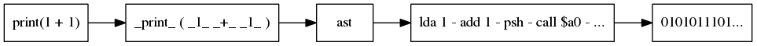
Notons que la compilation n’attache aucun sens particulier aux noms choisis par le programmeur. Les noms servent juste à vite remplacés par des références. On pourrait écrire le programme de 1, de manière totalement équivalente:
function xx(x){return x<2?1:xx(x-1)+xx(x-2)}print(xx(10))
Le programme, n’a donc pas comme seule vocation à ordonner la machine, il doit aussi être lisible par d’autres programmeurs vocations parallèles:
Pour organiser un manuscrit, on recourt aux phrases, aux paragraphes Lorsqu’un texte devient trop long, il devient plus pratique de le découper en unités indépendantes.

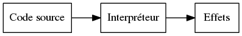
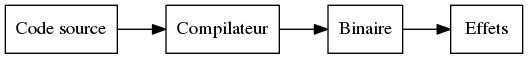
2.1.2 UNSTABLE La programmation structurée
La programmation structurée n’est pas un ensemble de techniques, ni une méthode de programmation, mais plutôt un but à atteindre. Dans sa célèbre lettre à l’éditeur des communications de l’ACM, “Go To Statement Considered Harmful” [Dij68], Dijkstra décrit ce but:
Our intellectual powers are rather geared to master static relations and our powers to visualize processes evolving in time are relatively poorly developed. For that reason we should do (as wise programmers aware of our limitations) our utmost to shorten the conceptual gap between the static program and the dynamic process, to make the correspondence between the program (spread out in text space) and the process (spread out in time) as trivial as possible.
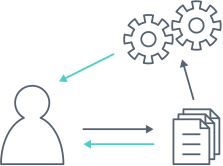
Dijkstra commence par établir une distinction cruciale entre le programme tapé
par le programmeur sous forme de texte, et le processus engendré par ce
programme, et exécuté par la machine. Le programmeur n’a pas de contrôle direct
sur le processus, il ne peut que modifier le programme. Afin de mieux
comprendre le processus engendré par le programme, lorsque l’on écrit et relit
le code, il faut que le programme reflète au mieux ce processus. Dijkstra
cherche donc à établir une correspondance claire entre les instructions
exécutées par la machine (la dimension temporelle) et les instructions dictées
par le programme (la dimension spatiale). Et pour lui, goto est une
construction qui va à l’encontre de cette correspondance.
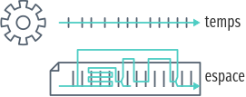
Pour Dijkstra, on comprend un programme en suivant les instructions une à une. C’est facile à faire pour un programme qui contient juste une liste d’affectations à des registres et de simples additions: on met son doigt sur la première ligne, puis on suit les instructions, une à une, jusqu’à la dernière. On peut comme ceci retrouver la valeur d’un registre particulier après la dixième instruction. Si on exécute le programme plusieurs fois, le registre à cet endroit aura toujours la même valeur. C’est un invariant du programme à cet endroit, qui peut être utile pour vérifier que le processus correspond à une spécification donnée. La correspondance entre le programme et le processus est directe.
On peut continuer de localiser ces invariants dans des programmes plus
complexes. Si l’on considère des conditions introduites par un if then else
ou un cond, suivre le flot d’exécution est encore simple: il suffit de prendre
la branche correspondante. Pour les boucles (while, repeat A until B), il
faudra prendre en compte la valeur actuelle de l’indice de boucle pour savoir
s’il faut répéter le corps de la boucle encore une fois, ou s’il faut sortir.
Pour les appels de procédures, on ne peut plus se contenter d’utiliser un seul
doigt pour suivre la ligne de code courante, il faut aussi tenir compte de la
pile d’appels en cours, pour savoir où continuer l’exécution lorsque la
procédure actuelle prend fin.
L’instruction courante, l’indice de boucle, et la pile d’appels forment ce que Dijkstra appelle un système de coordonnées de l’exécution du processus. On peut localiser précisément un point d’exécution du processus en donnant une position dans ce système de coordonnées. Et à un point d’exécution du processus on peut rattacher un invariant, ce qui permet de s’assurer de la correction du programme.
Et c’est là que goto pose problème. En utilisant un goto, le processus peut
continuer l’exécution vers n’importe quelle ligne du programme: même au beau
milieu d’une procédure, ou d’une boucle. Le système de coordonnée n’est plus
suffisant pour connaître avec certitude l’état du processus, les valeurs des
variables. Il faudrait également savoir à tout moment le chemin exact emprunté
par le processus. Mais ce n’est plus un système de coordonnées: on ne peut plus
raisonner localement dans une boucle ou une procédure, il faut considérer
l’intégralité du programme.
Pour Dijkstra, goto est une construction qui permet trop facilement de
transformer le programme en véritable labyrinthe; d’obscurcir la correspondance
entre le programme et le processus. C’est une construction qui va donc à
l’encontre du but qu’il a fixé en commençant la lettre.
Mais la programmation structurée ne se réduit pas à l’abolition des goto dans
un programme. Au contraire, se concentrer sur le goto serait passer
complètement à côté du message initial; Knuth le remarque très justement [Knu74]:
There has been far too much emphasis on GO TO elimination instead of the really important issues; people have a natural tendency to set up an easily understood quantitative goal like the abolition of jumps, instead of working directly for a qualitative goal like good program structure.
La programmation structurée tente simplement de résoudre les problèmes posés par la complexité croissante des programmes. Les programmes pour les premiers ordinateurs, écrits en assembleur ou langage machine, avaient comme principal objectif d’utiliser au mieux les capacités de l’ordinateur. L’assembleur est un langage flexible, qui offre notamment la possibilité de changer le programme chargé en mémoire pendant l’exécution (self-modifying code). Pour optimiser l’utilisation de la mémoire, l’affectation des registres se fait à la main, en prenant garde qu’aucun code n’écrase les registres d’un autre. Plus les machines deviennent rapides, et moins toutes ces techniques de programmation en assembleur deviennent nécessaires. Le frein vient surtout de notre capacité à comprendre et gérer de larges programmes écrits dans des langages de plus haut niveau. Wirth [Wir74a] relate ce changement de contraintes:
As the power of computers on the one side, and the complexity and size of the programmer’s task on the other continued to grow with a speed unmatched by any other technological venture, it was gradually recognized that the true challenge does not consist in pushing computers to their limits by saving bits and microseconds, but in being capable of organizing large and complex programs, and assuring that, they specify a process that for all admitted inputs produces the desired results. In short, it became clear that any amount of efficiency is worthless if we cannot provide reliability.
La programmation structurée cherche donc à produire des programmes fiables avant toute chose. Wirth la décrit comme un mouvement, une attitude plutôt qu’une liste de règles à suivre:
[Structured programming] is the expression of a conviction that the programmer’s knowledge must not consist of a bag of tricks and trade secrets, but of a general intellectual ability to tackle problems systematically, and that particular techniques should be replaced (or augmented) by a method. At its heart lies an attitude rather than a recipe: the admission of the limitations of our minds. The recognition of these limitations can be used to our advantage, if we carefully restrict ourselves to writing programs which we can manage intellectually, where we fully understand the totality of their implications.
Mais Wirth nous donne néanmoins des recettes.
Argues for a single entry point into procedures, and single exit point. Not jumping directly in the middle, or exiting prematurely.
Exemplified by ALGOL, and Pascal [Wir74b,Wir74a].
On the legacy front, most programmers are cargo-culting the fear of GOTO (though Knuth argues that it has its uses [Knu74]). Few languages in use today propose it. However, the discipline of single-exit is more controversial, as most modern languages offer constructs for early exits from procedures (return statement) or from loops (break and continue statements, sometimes with labels).
The fear of GOTO is an example of focusing on the wrong issue: structured programming is a proposal for clearer programs. Blindly removing all GOTOs and labels from an unstructured program does not make it structured. The focus is on writing programs that clearly reflect their dynamic process. As Parnas noted [DBB+03], modularity is solved by improving the design and documentation processes, not by adding a “module” statement to the language. The same situation arises here.
Knuth finit sa défense du GOTO par imaginer les systèmes de manipulation de programmes du futur:
Program manipulation systems appear to be a promising future tool which will help programmers to improve their programs, and to enjoy doing it. Standard operating procedure nowadays is usually to hand code critical portions of a routine in assembly language. Let us hope such assemblers will die out, and we will see several levels of language instead: At the highest levels we will be able to write abstract programs, while at the lowest levels we will be able to control storage and register allocation, and to suppress subscript range checking, etc. With an integrated system it will be possible to do debugging and analysis of the transformed program using a higher level language for communication. All levels will, of course, exhibit program structure syntactically so that our eyes can grasp it.
L’idée est tentante, mais peut-être trop enthousiaste. Knuth écrit en 1974, et je peux constater que 40 ans plus tard la situation n’est pas celle prédite. Bien qu’il existe de nombreux langages de programmation, et beaucoup qui sont qualifiés de “haut-niveau”, aucun ne permet de manipuler différents niveaux d’abstraction comme le décrit Knuth. Aucun ne réconcilie la perte de contrôle d’efficacité impliquée avec la montée en abstraction.
Mais peut-être que Knuth s’en est lui-même rendu compte. Le langage du futur était annoncé pour 1984, l’année où il publie son système de Literate Programming qui permet de mêler une description haut-niveau du programme en toutes lettres et code machine bas-niveau.
2.1.3 BARE Class-based programming: Smalltalk
Design and Implementation [Ing78].
Opens with a definition of modularity:
No part of a complex system should depend on the internal details of any other part.
[…]
Objects are created and manipulated by sending messages. The communication metaphor supports the principle of modularity, since any attempt to examine or alter the state of an object is sent as a message to that object, and the sender need never know about internal representation.
[…]
The class is the natural unit of modularity, as it describes all the external messages understood by its instances, as well as all the internal details about methods for computing responses to messages and representation of data in the instances.
Smalltalk is designed with modularity, as classes encapsulate object descriptions and methods, and can only interact through messages.
An example of extending the system: adding new objects and a printer for them. Similar to the expression problem.
Adding a new class of data to a programming system is soon followed by the need to print objects of that class. In many extensible languages, this can be a difficult task at a time when things should be easy. One is faced with having to edit the system print routine which (a) is difficult to understand because it is full of details about the rest of the system, (b) was written by someone else and may even be in another language, and (c) will blow the system to bits if you make one false move. Fear of this often leads to writing a separate print routine with a different name which then must be remembered.
In our object-oriented system, on the other hand, printing is always effected by sending the message
printon: s(where s is a character stream) to the object in question. Therefore the only place where code is needed is right in the new class description. If the new code should fail, there is no problem; the existing system is unmodified, and can continue to provide support.
Changing a field inside Rectangle does not need to change code external to the
object, and global recompilation is avoided.
Additional story on the vision of Smalltalk can be found in [Kay93]; a larger perspective is given in [MP15].
Mechanisms for extension
Subclassing, and reflection. Everything as an object, so message dispatch is just a method on the meta class, and can be altered.
2.1.4 TRANSLATE Literate programming
Programs are constructed as they are explained. Knuth, LiterateCoffee, Org mode.
[Knu84] for the original notion:
Instead of imagining that our main task is to instruct a computer what to do, let us concentrate rather on explaining to human beings what we want to do.
As usual, Knuth writing is delightfully witty:
I must confess that there may also be a bit of malice in my choice of a title. During the 1970s I was coerced like everybody else into adopting the ideas of structured programming, because I couldn’t bear to be found guilty of writing unstructured programs. Now I have a chance to get even. By coining the phrase “literate programming,” I am imposing a moral commitment on everyone who hears the term; surely nobody wants to admit writing an illiterate program.
The WEB system allows one to write a TeX + source code document, and then produce documentation (using the WEAVE program) or complete program (using TANGLE). The focus is on documenting first what the program does, then producing a machine version as a second concern. The source code can be presented out-of-order in the document, for expository purposes, using links and macros.
The WEB way of writing programs is “psychologically correct”, as it reflects the way in which the program was conceived and elaborated.
When I first began to work with the ideas that eventually became the WEB system, I thought that I would be designing a language for “top-down” programming, where a top-level description is given first and successively refined. On the other hand I knew that I often created major parts of programs in a “bottom-up” fashion, starting with the definitions of basic procedures and data structures and gradually building more and more powerful routines. I had the feeling that top-down and bottom-up were opposing methodologies: one more suitable for program exposition and the other more suitable for program creation.
[…] I have come to realize that there is no need to choose once and for all between top-down and bottom-up, because a program is best thought of as a web instead of a tree. […] A complex piece of software consists of simple parts and simple relations between those parts; the programmer’s task is to state those parts and those relationships, in whatever order is best for human comprehension – not in some rigidly determined order like top-down or bottom-up.
[…]
Thus the WEB language allows a person to express programs in a “stream of consciousness” order.
An unexpected benefit of WEB is a better separation of concerns. Although Knuth does not use the term, each part of a program can be described in its own section, thus each section can focus on one concern. He gives the example of separating error recovery from a simple data structure update routine.
While writing the program for [error recovery], a programmer subconsciously tries to get by with the fewest possible lines of code, since the program for [updating the structure] is quite short. If an extensive error recovery is actually programmed, the subroutine will appear to have error-messages printing as its main purpose. But the programmer knows that the error is really an exceptional case that arises only rarely; therefore a lengthy error recovery doesn’t look right, and most programmers will minimize it […] in order to make the subroutine’s appearance match its intended behavior. [Programming] with WEB, the purpose of
updatecan be be shown quite clearly, and the possibility of error recovery can be reduce to a mere mention whenupdateis defined. When another section [related to error recovery] is subsequently written, the whole point of that section is to do the best error recovery, and it becomes quite natural to write a better program.
Knuth notes that the target programming language can impact the writing of WEB programs. Having to declare variables at the start of a program leads to appending to the same “Local variables” program section.
Taking the time to document the code as you write it is not free, but is beneficial in the long run.
I had known for a long time that the programs I construct for publication in a book, or the programs that I construct in front of a class, have tended to be comparatively free of errors, because I am forced to clarify my thoughts as I do the programming. By contrast, when writing for myself alone, I have often taken shortcuts that proved later to be dreadful mistakes. It’s harder for me to fool myself in such ways when I’m writing a WEB program, because I’m in “expository mode” (analogous to classroom lecturing) whenever a WEB is being spun. Ergo, less debugging time.
WEB may be only for the subset of computer scientists who like to write and to explain what they are doing.
Noweb is a language-agnostic syntax and implementation of WEB, which is used in Org-mode.
Mechanisms for extension
The idea of documenting as you program is important, as is the focus on writing “what the human meant to do”.
The mechanisms of including and referencing code snippets allows one to structure the program as they see fit. Especially, it allows to separate concerns through quantification.
2.1.5 BARE Prototype-based programming
A collection of (at least) the following papers (or revisions of them):
- [Tai97]
- [DMB98a] (mostly a translation of [DMB98b])
- [GBO+98]
- [Bor86]
- [SU95]
- [Smi95]
- [MMM+98]
- [Bla91] & [Bla94]
- [Wol96]
- [Moo96]
- [Nob01]
- [Meu98]
[Tai97] is a philosophical take on the basis for class-based and prototype-based languages. Ascribing to classes is following the school of Plato and Aristotle [Pla98,AriBC]. Plato distinguished between forms, the ideal description of things, and instances of these forms. He regarded forms as being more real than instances. Aristotle believed in “a single correct taxonomy of all natural things”, and classified things using the following rule:
essence = genus + differential
which mirrors class creation in class-based languages.
Classification has been criticized, notably by Wittgenstein [Wit53], as being subjective. Some concepts are difficult to define by intension – through a list of common properties that all instances must share. Rather, Wittgenstein proposes the notion of family resemblance. Meaning is not determined by a definition, but by similarity to representative prototypes.
This philosophical heritage has a few implications for programming:
- there are no optimal class hierarchies
- in a class hierarchy, the middle classes are often the best representatives. Higher classes are too abstract; lower classes too specific.
- prototypes may map better to the usual human process: iterate from examples.
Designers of class-based or prototype-based languages are seldom aware of the philosophical issues of both models, but focus more on technical matters. Kevo [Tai93a] is a prototype-based language with a notion of family resemblance. [Tai93b] offer similar insights on the notion of object.
[DMB98b] tries to classify prototype-based languages (ironically). Prototype-base d languages are advantageous for describing exceptional instances, multiple points of view of the same entity, and incomplete objects.
They identify the following mechanisms common to prototype-based languages:
- message passing
- 3 ways of creating objects (ex nihilo, cloning, and extension)
- delegation
- dynamic dispatch
Prototype-based languages also introduce new issues:
- Fragmented entities. Since objects are described differentially, no single object in the system reify the complete entity. To clone it completely, we would need to clone all its parts, but they are not reified (e.g., traits objects are only conventions, not language primitives).
- Sharing between clones of the same object.
- Sharing between clones of different objects.
2.1.6 TRANSLATE Self
The power of simplicity [US91].
Pure object-oriented language. No variables, but slots containing objects that return themselves.
No classes. No control structure.
The absence of distinction may not be a good thing in practice:
The absence of class-instance distinction may make it too hard to understand which objects exist solely to provide shared information for other objects. Perhaps SELF programmers will create entirely new organizational structures. In any case, SELF’s flexibility poses a challenge to the programming environment; it will have to include navigational and descriptive aids.
[later, in the conclusion]
Reducing the number of basic concepts in a language can make the language easier to explain, understand, and use. However, there is a tension between making the language simpler and making the organization of a system manifest. As the variety of constructs decreases, so does the variety of linguistic clues to a system’s structure.
They cite [UCC+91] for pointers on structuring programs in SELF.
Classes are abstract description of objects, but prototypes are always concrete. Each object is an example, and can be easily cloned. Class hierarchies are hard, and impose a structure; prototypes less so.
Classes forces you to create a template, even when you deal with several objects with unique behavior.
Activation records for methods inherit from the receiver object, so the receiver is on the chain for binding lookup.
They note that they could build “class-like” objects that hold code to create new clones, and also hold the shared behavior, though they “do not believe this is the best way to construct a system”.
In [UCC+91], the following organization is described:
- Traits object for methods (shared by all instances of an object).
- A prototype object with a default implementation.
- Instances are created from cloning the prototype.
Abstract objects dispense of the prototype, and singleton objects contain methods and state without providing a copy method.
They note that OO supports “differential programming”, which is to define new data types as differences from existing data types. In Smalltalk, differential programming is achieved through subclassing. In SELF, they call it “refining traits objects”, but the mechanism is delegation through the parent link.
An oddity: they state that parent links are constant, though the introduce a
dataParent setter in figure 3. Later they say that parent slot are like other
data slots, assignable.
Prototypes allow for multiple behavior modes, through dynamic inheritance switching. Behavior modes enhance the clarity of the code, though they do not comment on the potential performance costs.
Mechanisms for extension
Prototypes, and message passing. Prototypes are more general and simpler than inheritance.
However prototypes do not originate with SELF [Bor86,Lie86].
[Lie86] makes a good case for prototypes as being a simpler model to learn, as well as being more intuitive. Humans derive general concepts from examples, not the other way around. Class-based languages require you to commit to the concepts first.
Prototype-based and class-based languages provide different mechanisms for realizing differential programming,
Is differential programming sufficient to solve the problem of modular instrumentation? In the case of Narcissus, it was not, since the interpreter was not OO. But the open scope pattern might be equivalent, dynamically, to inheritance.
2.1.7 TRANSLATE Open Implementation
Before AOP, there was the concept of Open Implementation [Rao91,Kic96,MLM+97,KLL+97].
[Rao91] introduces the concept of a system with open implementation, which has two interfaces: the base level interface and the metalevel interface that reveals parts of the implementation of the base level. They use reflection to customize the behavior of a window system for writing a spreadsheet. They find that OO languages have advantages:
- Object-centered specification closely maps the domain (here, a window system).
- Polymorphism allows multiple implementation to coexist.
- Inheritance allows reuse and differential programming.
Reflection is only one mechanism, that may not be optimal for clients of the meta level interface (can be complex). They believe in a more declarative approach to meta level interfaces.
An Open Implementation of a software module exposes facets of its internal operation to client control in a principled way. They key assumption behind Open Implementation is that software modules can be more reusable if they can be designed to accommodate a range of implementation strategies. Since no implementation strategy is adequate for all clients, the module should support several implementation strategies and allow clients to help select the strategy actually used.
[MLM+97]
The first sentence does not give the full picture. Open Implementation is not just about exposing an alternate interface. The primary concern is to allow client code to select different implementation strategies (to answer different performance needs, for instance).
Metaobject protocols [KdRB91] are given as an example of open implementation, for object-oriented systems.
The goals of any Open Implementation are to ensure that suitable implementation strategies are available for a range of clients, to ensure that the appropriate strategy may be selected for or by a client, and to ensure that the benefits associated with black-box abstraction are not unreasonably compromised.
[MLM+97]
One key tenet of OI is “give control to the client in a disciplined way”. That means, some structure should be in place, otherwise the client is free to mess with the implementation in any way.
Whereas black-box modules hide all aspects of their implementation, open implementation modules allow clients some control over selection of their implementation strategy, while still hiding many true details of their implementation.
[KLL+97]
The paper is broad: it considers what solution should a module implementer chose for open implementation, depending on the client requirements. It provides a methodology for designing an open module.
They define 4 styles of open interface:
- Client has no control: the module adapts its implementation by observing the client.
- Client declares its usage pattern, module selects a strategy.
- Client specifies the strategy among the predefined ones.
- Client provides the strategy.
Style 4 is the one we want for modular instrumentation. It is also recommended in half the cases they consider, though it “might be difficult to engineer”. They note that style 4 cannot be used when the integrity of the module must not be compromised.
[KLL+97] describes the four styles further. Style 4 subsumes styles 1 and 3 (and could be adapted to style 2), and is said to be layered, in the sense that clients can choose the style better suited for their needs.
When there is a simple interface that can describe strategies that will satisfy a significant fraction of clients, but it is impractical to accommodate all important strategies in that interface, then the interfaces should be layered.
[KLL+97]
From the set of client requirements, the module implementer should refine the open interface in stages, until all requirements can be expressed.
Mechanisms for open implementation
Sadly, the language mechanisms for open implementation are not covered.
While the implementation techniques that support theses interfaces are crucial, they are beyond the scope of this paper. [footnote:] Many of the implementation techniques are straightforward, and will be apparent simply from looking at the interface design. Others are more subtle, and involve recently developed techniques in language and system implementation [KdRB91,CU91,Chi95]. There is, as yet, no unified presentation of these techniques; a separate paper describing this is in preparation.
[KLL+97]
Could not find a trace of this paper in preparation.
The Strategy pattern comes to mind [GHJ+94] (though they actually cite [HO87] for the specific case of selecting algorithms with different space/time trade-offs).
Open Module [Ald05] does not mention Open Implementation, although they certainly fit the description of style 4.
2.3.3 is another mechanism.
2.1.8 TRANSLATE Aspect-Oriented Programming
Manipulation of static and runtime code. Joinpoints reifie extension points. Pointcuts give powerful quantification over joinpoints. Aspects promote separation of concerns.
Treats the code as an implicit interface. Runtime code is data. Obliviousness both a blessing and a curse. COMEFROM destroys local reasoning or referential transparency.
Did the initial vision of AOP covered the problem of extensibility?
[KLM+97] Motivation of AOP is a better match between design processes and programming language mechanisms.
A design process and a programming language work well together when the programming language provides abstraction and composition mechanisms that cleanly support the kinds of units the design process breaks the system into.
OO languages, procedural languages, functional languages all provide a generalized procedure as key abstraction mechanism. Design processes for a GP language decompose systems into units of behavior.
First example of tangling: an efficient image filter system. A filter loops on all the pixels of the input image, and produces a new image. Higher-level filters (‘horizontal-edge’) are defined by composing lower-level ones (‘or’, ‘and’). This is elegant, but inefficient as temporary images are created and deleted, and many loops are made where only one sufficed.
The alternate solution is to code the higher-level filters explicitly with only one loop. Then the code is tangled. Their actual system is 768 lines when implemented “cleanly”, but the efficient version is 35213 lines.
The language only supports one kind of composition, the functional one, while there is a need to also specify the fusion of loops, which is a composition of data flow.
They distinguish components from aspects:
- Components
- encapsulate cleanly a feature through a “generalized procedure” (object, method, procedure, API). Components tend to be the unit of functional decomposition of the system.
- Aspects
- for features that cannot be cleanly encapsulated through a generalized procedure. Aspects tend to be features orthogonal to the functionality of the system: data representation, synchronization constraints …
The goal of AOP is to provide mechanisms to cleanly separate components from aspects, components from components, and aspects from aspects. GP languages only provide mechanisms to separate components from each other.
They feel that dynamic scoping and catch/throw already help implementing aspects, since they provide a complementary composition mechanism.
Error handling and performance issues are often aspects because they cross-cut the components decomposition.
An AOP implementation has: a component language, an aspect language, and an aspect weaver. For example, in AspectJ the component language is Java, the aspect language is the pointcuts/advice language provided by AspectJ. But the component language does not have to be a vanilla language — it can be a specific one.
In the image filter example, the component language is procedural and allows high-level filters to be defined cleanly, using a DSL for describing loops. The aspect language is also procedural, but allows to specify loop fusion. The weaver then creates a data-flow graph from the components, runs aspects on them, and produces efficient C code.
They significantly improved the performance of the clean version by adding 352 lines of aspects (not counting the size of the weaver). Though the manually optimized version is still more efficient.
[…] the aspect languages must address different issues than the component languages.
The second example is a book repository. The component language is (a subset of) Java, and the aspect language is a meta-program which captures method invocation using compile-time reflective techniques.
2.3.3 can be used to write aspects, but may be too powerful a tool (hence, a costly one). A reflective system provides a component language and a low-level aspect language, as well as the weaving mechanism. The reflected structures provide join points. Reflective systems are general-purpose, and in the paper they aim for more declarative aspects.
AspectJ is more limited than reflection, but still general. Domain-specific aspect languages are recommended to write aspects while retaining static control.
AOP is a goal, for which reflection is a powerful tool.
[KHH+01] presents the AspectJ AOP system. It contains an intuitive footnote about the separation of concerns.
When we say “separation of concerns” we mean the idea that it should be possible to work with the design or implementation of a system in the natural units of concern – concept, goal, team structure etc. – rather than in units imposed on us by the tools we are using. We would like the modularity of a system to reflect the way “we want to think about it” rather than the way the language or other tools force us to think about it. In software, Parnas is generally credited with this idea [Par72,Par74].
The shift from domain-specific to general-purpose AOP is motivated by a desire for adoption: providing an alternative paradigm for all Java programmers.
AspectJ is intended to be a practical AOP language that provides, in a Java compatible package, a solid and well-worked-out set of AOP features.
They describe the joinpoints, pointcuts, and advice of AspectJ, as well as the rules of advice precedence, and sketch the compilation strategy.
Advice declarations in AspectJ, through CLOS [KdRB91], owe much to Flavors [Can03].
[MK03] provides models and scheme implementations of four AOP systems; the Pointcuts-Advice model for AspectJ in particular.
[FF04] wants to answer the question “when are we looking at an AOP system?”. They find two essential traits of AOP systems: quantification and obliviousness.
They describe AOP as the desire to make statements of the form
In programs P, whenever condition C arises, perform action A.
suggesting three axes of choices for AOP systems:
- What kinds of conditions can we specify? (Quantification)
- How do actions interact with programs and with each other? (Interface)
- How will the system mix the execution of programs and actions? (Weaving)
For quantification, they distinguish between static (conditions on the source code structure) and dynamic (conditions on the runtime behavior). Furthermore, black-box systems quantify over the public interface of components (e.g., functions or object methods), and clear-box systems quantify over the internal structure of the code (AST).
They note that rule-based systems (Prolog, OPS-5 [BFK+85]) would not need AOP. However
But by and large, people don’t program with rule-based systems. This is because rule-based systems are notoriously difficult to code. They’ve destroyed the fundamental sequentiality of almost everything. The sequential, local, unitary style is really very good for expressing most things. The cleverness of classical AOP is augmenting conventional sequentiality with quantification, rather than supplanting it wholesale.
The paper has an interesting stance on the evolution of programming languages with respect to local and unitary statements (§2.2).
The earliest computer machine-language programs had a strict correspondence between the program text and the execution pattern. Generally, each programming language statement was both unitary and local — unitary in that it ended up having effect in precisely one place in the elaborated program, and local in that it was almost always proximate to the statements executing around it.
They point out that adding code to a base class that has multiple subclasses is a form of quantification.
[Ste06] questions the success of AOP by opposing the AOP vision to the actual mechanisms provided. Quoting [FF04]:
Understanding something involves both understanding how it works (mechanism) and what it’s good for (methodology). In computer science, we’re rarely shy about grandiose methodological claims (see, for example, the literature of AI or the Internet). But mechanism is important – appreciating mechanisms leads to improved mechanisms, recognition of commonalities and isomorphisms, and plain old clarity about what’s actually happening.
AOP has the issue of fragile pointcuts: sensitive to changes in the target program.
AOP is detrimental to Parnas’s notion of modularity because of the strong coupling between an aspect and the target program. Independent development cannot continue.
Interestingly, Parnas considers modularity as a design issue, not a language one. Confusing the two is harmful: using the module functionality of a language does not mean the system is modular in the sense meant by Parnas. Each task is a single module with a clear interface, and implementation-specific information is not shared across modules.
They suggest that AOP use should be restricted to applications where programmers do not have to see it; e.g., generated code. They do not regard AOP as a “new paradigm”, especially they do not find convincing applications for it.
AOP promotes the localization of concerns (bringing tangled code in one place), but this actually breaks the locality of code (executed statements are not together in the source code).
I find strange that a critique of AOP does not even mention the original AOP paper [KLM+97]. This critique is focused on the AOP mechanism as realized by AspectJ, mostly. But the original paper focused on domain-specific aspect languages, which hid the weaver, joinpoints and pointcuts. The original contribution was also in formulating the goal of separating components from aspects. AspectJ is just one way to achieve this goal, but it might not be best one, depending on the domain.
Overall, it is a critique of one mechanism for AOP, rather than a critique of the methodology (separating aspects from components).
Aspects and monads are sometimes both viewed as mechanisms to achieve modularity in software [DBB+03,HO07,Meu97].
AOP is patented since 2002 by XEROX (US6467086 B1).
Mechanisms for instrumentation
The distinction between aspects and components is the most important contribution of AOP. Though it is unclear whether ‘aspects’ are inevitable because of the complexity of the problem domain, or if they are accidental artifacts created by the chosen programming model (like most design patterns are motivated by the lack of first-class functions).
Java + AspectJ is only one aspect system: useful for tracing, logging, but cumbersome for more specific needs. The pointcuts/advice model is the underlying formalism of AspectJ, but not necessarily of the AOP methodology.
Like Parnas’s modules, aspects are a design-time issue. Solving the module issues with language mechanisms was, according to Parnas [DBB+03], a mistake. Maybe the same can be said of aspects.
Is AOP useful for the instrumentation problem? First, the initial use case of AOP, like open implementation, is tangential concerns: algorithmic complexity, choice of data representation, optimizations, etc. Post-hoc extension is not exactly a tangential concern: changing the behavior of the interpreter is a primary concern.
Second, we have to consider separately the usefulness of the AOP methodology, and of the AOP mechanisms.
The methodology of separating components from aspects is applicable if our analyses are tangential. They are not. The problem we deal with is that extensibility was not considered when designing the interpreter, and solutions must be built on the implementation.
Preserving locality is a guiding tenet of the AOP methodology (avoiding tangling). It is also a motivation for writing modular analyses: we want the analysis code to be in one place. However, by regrouping the analysis code, we are sacrificing locality of code execution: statements executed at runtime are not next to each other in the source code. Satisfying both notions of locality would lead to duplication in the code, which is a worse state of affairs. Solutions to this duplication must come from the tools used to write and browse code, since the textual format we use offer none. An editor can maintain two views of the same unit of code: changes in one view will affect both places. That way, both notions of locality can coexist.
The second notion of locality, the one from [FF04], is one manifestation of the more general need of a match between runtime behavior and static program description. The program source should tell readers what it does, and navigating through dynamically-bound method calls and oblivious advices hinders the reading.
Organization of the code should reflect the design decisions: what is primary is explained first, then exceptions or tangential concerns are relegated to appendices. Literate programming [Knu84] can help organize the code in a such way.
The mechanisms of AOP may serve to extend the interpreter with analyses, without necessarily obeying the component/aspect decomposition. Though without editor support, using AOP mechanisms will only satisfy one notion of locality.
2.1.9 BARE Caesar
[AGM+06]
CaesarJ regroups virtual classes, mixins, pointcut-advice and binding classes. All these mechanisms are brought together to allow composition along many axis.
But overall, I failed to see the problems that it solved. Both papers [AGM+06,MO02] are dense and opaque; the examples are too complicated to make sense of the benefit brought by the new mechanisms.
2.1.10 TRANSLATE Hyper/J
[TOH+99] argues for a multi-dimensional separation of concerns. First, they note that modern software technologies provide mechanisms for the decomposition and composition of source code, in order to cut the code into manageable pieces, and put the pieces back together to produce the running program.
Existing software formalisms provide decomposition and composition mechanisms, but typically support a single dominant dimension of decomposition. They dub this phenomenon the “tyranny of the dominant decomposition”.
A class hierarchy is insufficient for anticipating all the evolutions of an expression language (see Expression problem). Subclassing and design patterns require pre-planning.
There are many concerns we need to manage simultaneously, and the dominant decomposition typically sacrifices some of those concerns for the benefit of others. Thus, we are in presence of a multi-dimensional artifact, and each decomposition gives only a lower-dimensional view of said artifact.
They propose hyperslices as way to organize artifacts along all desired dimensions of concern. An hyperslice contains all the units of change related to one concern. Units of change can appear in multiple hyperslices, and thus hyperslices can overlap. In the expression example, one slice for the kernel language, one slice for the pretty-printing, one slice for syntax checking, etc.
Composition of hyperslices must be specified manually, though a default strategy can be installed. They suggest one strategy based on name matching for merging classes together (akin to superimposition).
Throughout the paper, they only use hyperslices on UML diagrams, not source code. Hyperslices can be applied to specification, design documents and code. Though they do not highlight a way to link the related parts from those different artifacts together, other than putting them in the same hyperslice. There does not seem to be a way to deal with duplicates.
Compared to AOP, where components are the primary decomposition and aspects gravitate around them, hyperslices do not impose a dominant structure (though it may often appear in practice, e.g., the kernel slice of the expression language).
There are no descriptive papers of Hyper/J, but there is a manual [TO00]. The manual gives details on how to implement the example of expression language. Using Hyper/J requires to write three files describing: the hyperspace (all classes that Hyper/J will care about), the concern mappings (which package/class/method/field maps to which concern), and the hypermodules (which features are part of a module, and how composition happens). Running the Hyper/J tool will compose all the hypermodules using the specified rules (merge by name) to produce the final program.
Hyper/J simplifies the multi-dimensional concept by mapping units of change to exactly one feature. No overlap between hyperslices.
Mechanisms for instrumentation
Realization that the tyranny of the dominant decomposition is a manifestation of looking at a multi-dimensional object through low-dimensional projections. All projections are unsatisfactory as they sacrifice one or more dimensions.
The Hyper/J solution is basically superimposition.
2.1.11 BARE Information transparency
[Gri01]
Tools for capturing the similarity of code across modules. Tangled code should
be similar, according to the principle of consistency. Hence, capturing similar
code should help gather and organize concerns. E.g., changing the behavior of
the parsing of a while statement by grepping for ‘while’ in the source.
Principle of consistency:
Things that look similar should be similar; things that are different should look different.
[Mac87]
First principle of information transparency:
Code elements likely to be changed together as part of a complete, consistent change should look similar, and code elements unlikely to be changed together should look different.
If a code base obeys this principle, it can be easily refactored using standard tools like grep.
A second principle promotes using variable names to indicate implementation choices. Hungarian notation is given as an example.
The unmodularized code elements relating to a changeable design decision should contain recognizable tags uniquely identifying the design decision.
Locality can be managed by tools. They exhibit tools a bit more powerful than grep, with knowledge of the target language AST, or matching on typos.
Both tools [Aspect Browser and Seesoft] embody the concept that, by leveraging the human visual system, identifiable symbols are a viable alternative to locality as a way of managing changes to software.
2.2 UNSTABLE La modularité du progamme n’est pas la modularité du code source
Les travaux de la section précédente cherchent à obtenir la modularité à travers le code source.
Mais un programme n’est pas que son code source.
2.2.1 STABLE La modularité selon Parnas
David Parnas est fréquemment cité comme référence pour la notion de modularité d’un système, en particulier l’article “On the Critera to be Used In Decomposing Systems into Modules” [Par72]. Mais Parnas s’intéresse davantage à la phase de conception d’un système qu’à la phase d’implémentation.
Dans l’article, il décrit deux décompositions en modules d’un même système d’indexation ; un exemple didactique qui peut être implémenté “par un bon programmeur en une ou deux semaines”. La première décomposition comporte 5 modules, la seconde 6. Les deux décompositions sont supposées produire des programmes équivalents: qui fournissent les même fonctionnalités. Mais si les deux programmes sont équivalents, quel intérêt à choisir une décomposition plutôt qu’une autre? La réponse vient en s’intéressant aux choix d’implémentation qui ont été laissés en suspens.
Suivant le format d’entrée des données, ou l’emplacement mémoire de sauvegarde des données, il faudra modifier certaines parties du programme en conséquence. Et c’est là que les deux designs ne sont plus équivalents: le second changement touche tous les modules de la première décomposition, alors que les changements sont restreints à un seul module dans la seconde décomposition. Le second design est donc mieux adapté aux changements potentiels anticipés par le concepteur.
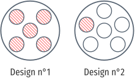
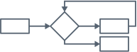
Le second design est aussi plus facile à développer et plus facile à comprendre. Les modules du premier design correspondent aux étapes de traitement du système: Parnas nous dit qu’il suffit de dessiner le logigramme pour obtenir les 5 modules. Le résultat c’est que tous ces modules ont de nombreuses dépendances entre eux, ce qui pousse les programmeurs à avoir une compréhension globale du système pour pouvoir le développer. En revanche, il a élaboré le second design en suivant le principe d’encapsulation: les modules ne correspondent plus à des étapes de traitement, mais plutôt à des décisions de design, des responsabilités:
Every module in the second decomposition is characterized by its knowledge of a design decision which it hides from all others. Its interface or definition was chosen to reveal as little as possible about its inner workings.
Si l’on suit ce critère pour décomposer un système en modules, alors on peut qualifier le système de modulaire. Parnas liste les trois avantages attendus d’un système modulaire:
(1) managerial—development time should be shortened because separate groups would work on each module with little need for communication: (2) product flexibility—it should be possible to make drastic changes to one module without a need to change others; (3) comprehensibility—it should be possible to study the system one module at a time.
Le premier design a beau comporter des modules, il n’a pas ces avantages. Il n’est donc pas modulaire. Sur un second exemple de système, un compilateur et interpréteur pour le même langage, il conclut là encore qu’une décomposition suivant le critère d’encapsulation est supérieure à une décomposition qui suit les étapes de traitement. Un interpréteur et un compilateur résolvent en partie les mêmes problèmes, et la décomposition préconisée par Parnas permet de réutiliser les modules d’un système à l’autre.
Néanmoins, il y a un obstacle à utiliser une décomposition dont les modules adhèrent strictement à l’encapsulation: l’efficacité du système. Dans une telle décomposition, les appels de procédures sont plus nombreux et comportent davantage d’instructions. Là où le design qui suit le logigramme peut accéder directement à la mémoire pour modifier les données utilisées par un autre module, dans la décomposition suivant Parnas chaque module est responsable de ses propres données; il faut forcément passer par les procédures d’accès et de modification du module. Ces procédures peuvent en plus effectuer des vérifications sur leurs paramètres, qui ne sont peut-être pas nécessaires dans tous les cas, ce qui rajoute encore des instructions que la machine devra effectuer.
Parnas reconnaît ce problème d’efficacité, et suggère de concevoir un outil qui transforme le code de la décomposition modulaire en code qui suit davantage le fil d’exécution. Le concepteur peut travailler sur la représentation modulaire, et l’outil se charge de générer du code efficace. Dans le code généré par cet outil, les appels de procédures inutiles sont supprimés, et l’efficacité n’est pas sacrifiée. En revanche, la décomposition modulaire ne serait plus apparente. Il propose donc de conserver le programme sous ses plusieurs formes et de développer des outils pour passer d’une forme à l’autre.
Parnas met donc en avant le critère d’encapsulation pour concevoir un système modulaire. Mais surtout, il insiste sur l’importance de la phase de conception du système, indépendamment de son implémentation en code. Parnas ne croit d’ailleurs pas que le choix du langage de programmation puisse rendre un système modulaire. Un point qu’il développe dans “Why Software Jewels are Rare” [Par96].
Un “logiciel joyau” est un programme “bien structuré écrit dans un style homogène, sans bidouilles, développé tel que chaque composant est simple et organisé, et conçu pour que le produit soit facile à changer”. Parnas donne plusieurs raisons qui explique, selon lui, la rareté de ces joyaux: le logiciel existe pour répondre à un besoin, et la structure interne du programme n’est pas un besoin du client; un logiciel est plus utile à l’utilisateur s’il répond à plusieurs besoins, ce qui implique d’enrichir ses fonctionnalités, au détriment de la simplicité du programme. Les contraintes matérielles ne laissent que peu de place à l’élégance structurelle du code. Parnas rapporte notamment son échec à vouloir mettre à jour un système d’ordinateur de vol pour l’armée américaine; la machine ciblée possédait un matériel très limité qui demandait une optimisation manuelle de l’utilisation des registres, mais Parnas et son équipe désiraient s’abstraire de ces détails matériels:
Near-optimal register allocation was essential to fitting the program into a very small memory. One of our design goals had been to achieve hardware independence for most of our code. To achieve hardware independence on the specified processor, we needed an effective register allocation algorithm. The previous software for this task had been sucessful because none of the code was portable and register allocation was done by hand. We never found the necessary register allocation algorithm.
Et contrairement à ce que l’on pourrait penser, la loi de Moore ne résout pas le problème. Si les machines possèdent deux fois plus de registres et sont deux fois plus rapides, alors on leur demandera de faire deux fois plus de calculs (ou de les faire deux fois plus rapidement). Parnas le note:
Although today’s machines are far better than the one we were using, goals have expanded and competitive pressures often limit the resources available. Few of today’s designers are free to ignore performance requirements and hardware limitations.
Mais surtout, il faut se méfier des marchands de panacée:
Sometimes new languages are used in the design of jewels, and authors may attribute a product’s success to the use of a particular language or type of language. Here, I have grave doubts. I have lost count of the number of languages that have been introduced to me as the solution to the software problems that everyone experiences. First, I was told to use Fortran instead of an assembler language. Later, others advocated Algol-60 and its derivatives as the cure to the ugly software resulting from Fortran. Of course, NPL, later known as PL/I, was going to provide an even better solution. The list goes on. Wirth promotes Oberon while hundreds of people are telling me that an object-oriented language must be used to get clean software. I no longer believe such claims. The issue is design, not programming language.
[…]
We should not ignore the fact that most modern languages have inherent disadvantages. A language that supports certain approach to software design often compels us to use a particular implementation of a design principle, one that may be inappropriate for the task at hand. For example, many languages that support modules, abstract data types, and object classes require the use of subroutines where macro expansion might be a better choice. Moreover, languages that prevent programming errors, a goal advanced by some inveterate language designers, are as feasible as knives that can cut meat but not hands. We need sharp tools to do good work.
Un langage de programmation est un outil parmi d’autres, et aucun outil ne peut résoudre tous les problèmes. C’est au concepteur de choisir l’outil adapté qui est le plus à même de résoudre le problème qu’il a en vue. Choisir un langage n’affranchit pas le concepteur d’avoir à se poser des questions difficiles sur la structure du système. En 2003, Parnas déplore cette tendance [DBB+03]:
To a man with a hammer, everything looks like a nail. To a Computer Scientist, everything looks like a language design problem. Languages and compilers are, in their opinion, the only way to drive an idea into practice.
My early work clearly treated modularisation as a design issue, not a language issue. A module was a work assignment, not a subroutine or other language element. Although some tools could make the job easier, no special tools were needed to use the principal, just discipline and skill. When language designers caught on to the idea, they assumed that modules had to be subroutines, or collections of subroutines, and introduced unreasonable restrictions on the design. They also spread the false impression that the important thing was to learn the language; in truth, the important thing is to learn how to design and document. We are still trying to undo the damage caused by the early treatment of modularity as a language issue and, sadly, we still try to do it by inventing languages and tools.
Parnas réitère: le langage de programmation seul ne rend pas le programme modulaire. C’est aussi facile de créer un programme non-modulaire dans un langage de haut niveau qu’en assembleur. On ne pourra donc pas rendre les programmes modulaires simplement en fournissant de meilleurs languages ou outils.
Alors, quelle est la bonne direction à suivre? D’après Parnas, il faut insister sur la phase de conception du système; c’est là où les limites entre modules apparaissent, et là où les décisions de design doivent être prises:
My engineering teacher laid down some basic rules:
- Design before implementing.
- Document your design.
- Review and analyze the documented design.
- Review implementation for consistency with the design.
There rules apply to software as least as much as they do to circuits or machines.
Conclusions
Parnas est souvent cité pour ses travaux sur la modularité, à juste titre, mais son message principal n’est pas toujours bien entendu. On trouve dans l’article séminal de 1972 les avantages d’un système modulaire, et un critère pour les concevoir: le critère d’encapsulation. Quelles parties du système ont besoin de pouvoir être changées? D’une machine à l’autre, ou en réponse à des besoins futurs? Ces parties déterminent les modules du système selon le critère d’encapsulation. De ce critère découlent des notions de séparation des préoccupations et de type de données abstrait (qu’il ne nomme pas). L’encapsulation est un critère supérieur à la façon usuelle de découper les programmes selon le processus de traitement des données, en suivant un logigramme.
Parnas nous permet donc de qualifier la modularité d’un système. Un système simplement découpé en modules arbitraires n’est pas modulaire. Mais si pour changer la base de données utilisée par le système il suffit de modifier le code d’un seul module, alors ce système est modulaire par rapport à la base de donné utilisée. La base de donnée initiale est un choix de conception, mais un choix qui peut être changé ultérieurement sans demander la refonte totale du système. Le système est modulaire par rapport à un ensemble de choix qui peuvent être altérés ultérieurement.
On peut donc voir la modularité comme une des fonctionnalités du système; une fonctionnalité à destination des programmeurs chargés de la maintenance du système, plutôt qu’une fonctionnalité destinée aux utilisateurs. Et comme toute fonctionnalité, la modularité impose un coût de complexité au système. Si le programme est flexible, s’il permet de changer la base de donnée utilisée, alors il faut que le reste du système soit capable de fonctionner non plus avec une seule base de donnée, mais avec plusieurs bases différentes. Gérer cette compatibilité impose de traiter plus de cas, ce qui inévitablement se traduit en code. De plus, pour implémenter un système modulaire, on fera souvent appel à des interfaces, des indirections, des appels de procédures qui encapsulent les décisions de conception. Et ces interfaces ont souvent un impact négatif sur l’efficacité du programme. Ces compromis modularité/complexité et modularité/efficacité me semblent inévitables.
2.2.2 STABLE La théorie de Naur derrière le programme
Un point de vue qui complémente celui de Parnas est celui de Peter Naur. Dans “Programming as Theory Building” [Nau85] il attache, comme Parnas, beaucoup d’importance à la réflexion du programmeur dans l’élaboration d’un système. Et il s’intéresse également à la modification de programmes, aux difficultés qui apparaissent quand on essaye d’ajouter des fonctionnalités non prévues initialement.
Pour Naur, la tâche principal du programmeur n’est pas de produire du code source. Un programmeur avant tout construit une théorie du problème que le programme doit résoudre. Lors de la conception et de l’implémentation, le programmeur construit sa connaissance du problème, du domaine d’application, et des outils. Cette connaissance est naturellement interne, et toute production externe (code source, documentation, diagrammes) ne fait la refléter qu’en partie.
Ce point de vue, Naur le tire de sa propre expérience à construire de larges systèmes. Il donne l’exemple d’un compilateur développé par un groupe A pour une machine X. Le compilateur fonctionne très bien, et un autre groupe de programmeurs, le groupe B, souhaite étendre légèrement le langage, et réutiliser ce compilateur pour une machine Y. Le groupe B planifie les changements à apporter au compilateur après avoir étudié sa structure, et vient discuter des changements avec le groupe A qui offre son soutient:
In several major cases it turned out that the solutions suggested by group B were found by group A to make no use of the facilities that were not only inherent in the structure of the existing compiler but were discussed at length in its documentation, and to be based instead on additions to that structure in the form of patches that effectively destroyed its power and simplicity. The members of group A were able to spot these cases instantly and could propose simple and effective solutions, framed entirely within the existing structure.
Le groupe B avait le code source et la documentation, et du temps pour les étudier. Malgré cela, les modifications du compilateur qu’il envisage sont jugées inadéquates par le groupe A, qui est capable de proposer rapidement des modifications plus simples et directes. Naur en conclut que la documentation et le code source n’ont pas été suffisants pour communiquer toutes les décisions de conception au groupe B, pour communiquer la théorie du compilateur.
“Théorie” ici n’a pas un sens abstrait; si un programmeur du groupe A possède la théorie du compilateur, c’est que non seulement il sait comment le compilateur fonctionne dans le détail, mais il est aussi capable de l’expliquer à quelqu’un du groupe B, de répondre à des questions sur le compilateur, de débattre sur les choix d’implémentation. Avoir la théorie du programme, c’est avoir internalisé une connaissance pratique, et être capable d’appliquer cette connaissance à d’autres problème connexes:
The notion of theory employed here is explicitly not confined to what may be called the most general or abstract part of the insight. For example, to have Newton's theory of mechanics as understood here it is not enough to understand the central laws, such as that force equals mass times acceleration. In addition, as described in more detail by Kuhn, the person having the theory must have an understanding of the manner in which the central laws apply to certain aspects of reality, so as to be able to recognize and apply the theory to other similar aspects.
Pourquoi s’intéresser à cette notion de théorie? Parce qu’elle permet de mieux comprendre comment modifier un programme. Naur commence par constater que modifier des programmes est une pratique courante, motivée par l’économie. Si on a déjà un programme qui fait à peu près ce qu’on veut obtenir, c’est raisonnable de penser que modifier ce programme sera plus rapide que d’en recréer un complètement nouveau. Naur remarque que ce raisonnement ne considère que la facilité de modifier le texte du programme. En effet, le code source d’un programme sous forme texte est facilement modifiable; bien plus qu’une construction physique comme un immeuble, un pont, ou une voiture. Si l’on considère plutôt le point de vue de Naur — que le programmeur manipule avant tout une théorie — on ne peut pas modifier le programme sans prendre en compte la théorie sous-jacente:
What is needed in a modification, first of all, is a confrontation of the existing solution with the demands called for by the desired modification. In this confrontation the degree and kind of similarity between the capabalities of the existing solution and the new demands has to be determined. The point is that the kind of similarity that has to be recognized is accessible to the human beings who possess the theory of the program, although entirely outside the reach of what can be determined by rules, since even the criteria on which to judge it cannot be formulated.
Si l’on se contente de modifier le code source sans considérer la théorie, on se retrouve dans le cas du groupe B; à étendre le compilateur de façon tarabiscotée, sans tirer partie de sa structure:
For a program to retain its quality it is mandatory that each modification is firmly grounded in the theory of it. Indeed, the very notion of qualities such as simplicity and good structure can only be understood in terms of the theory of the program, since the characterize the actual program text in relation to such program texts that might have been written to achieve the same execution behaviour, but which exist only as possibilities in the programmer’s understanding.
Donc, si l’on souhaite modifier le programme, il faut vraiment tenter de modifier la théorie. Pour cela, il faut d’abord avoir accès à cette théorie. Si on n’a pas accès aux développeurs du programme, les possesseurs de sa théorie, il faut tenter de la recréer à partir de code source et de la documentation. Naur appelle cela la “résurrection de programme”. À ses yeux, c’est un acte sans espoir:
A very important consequence of the Theory Building View is that program revival, that is re-establishing the theory of a program merely from the documentation, is strictly impossible.
[…] building a theory to fit and support an existing program text is a difficult, frustrating, and time consuming activity. The new programmer is likely to feel torn between loyalty to the existing program text, with whatever obscurities and weaknesses it may contain, and the new theory that he or she has to build up, and which, for better or worse, most likely will differ from the original theory behind the program text.
Il concède que revivre un programme de cette façon peut être utile dans des circonstances particulières, mais en étant bien conscient de l’effort à fournir pour obtenir un résultat probablement de qualité inférieure.
L’alternative qu’il conseille, est de toujours recréer le programme:
In preference to program revival, the existing program text should be discarded and the new-formed programmer team should be given the opportunity to solve the given problem afresh. Such a procedure is more likely to produce a viable program than program revival, and at a no higher, and possibly lower, cost.
Modifier le code source du programme n’est facile qu’en apparence; car modifier la fonctionnalité du programme demande de reconstruire sa théorie, afin de s’assurer que les changements envisagés auront bien les effets voulus. Puisqu’il faut reconstruire la théorie du problème initial, puis l’adapter au problème qui intéresse le programmeur, l’effort sera moindre en construisant une théorie directement adaptée au nouveau problème.
Naur attaque une autre idée populaire du génie logiciel: qu’une méthode de programmation, un ensemble de règles à observer, peut être supérieure à une autre. Une méthode préconise les étapes du processus de développement, ou les documents à produire et dans quel ordre. Mais pour Naur, le seul point qui importe c’est le développement de la théorie du programme, et aucune méthode ne peut garantir une construction correcte:
A method implies a claim that program development can and should proceed as a sequence of actions of certain kinds, each action leading to a particular kind of documented result. In the Theory Buiding View what matters most is the building of the theory, while production of documents is secondary. In buiding the theory there can be no particular sequence of actions, for the reason that a theory held by a person has no inherent division into parts and no inherent ordering. Rather, the person possessing a theory will be able to produce presentations of various sorts on the basis of it, in response to questions or demands.
Pour les mêmes raisons, le choix du langage de programmation, ou d’un formalisme particulier ne peut remplacer la construction de la théorie:
As to the use of particular kinds of notation or formalization, again this can only be a secondary issue since the primary item, the theory, is not, and cannot be, expressed, and so no question of the form of its expression arises.
Quoi dire alors aux programmeurs novices? Comment leur faire comprendre ces notions, comment les amener à construire d’élégantes théories pour créer des programmes flexibles et efficaces? Naur recommande de les former principalement de façon organique: en travaillant avec des programmeurs chevronnés, ils absorberont les connaissances nécessaires par osmose.
What remains is the effect of methods in the eduction of programmers. Indeed, on this view the quality of the theory built by the programmer will depend to a large extent on the programmer’s familiarity with model solutions of typical problems, with techniques of description and verification, and with principles of structuring systems consisting of many parts in complicated interactions.
While skills such as the mastery of notations, data representations, and data processes, remain important, the primary emphasis would have to turn in the direction of furthering the understanding and talent for theory formation. To what extent this can be taught at all must remain an open question. The most hopeful approach would be to have the student work on concrete problems under guidance, in an active and constructive environment.
Conclusions
Naur établit une distinction importante entre le source code d’un programme, et la connaissance que le programmeur a de son fonctionnement. C’est une distinction intuitive pour quiconque a une expérience même modeste de programmation. Cette distinction nous permet notamment de comprendre pourquoi modifier un programme n’est pas simplement modifier du texte, modifier son code source. Il faut prendre en compte les choix faits au moment du design du programme, et considérer comment les changements que l’on souhaite apporter affectent ces choix. Comprendre la théorie.
Naur estime que la théorie n’est pas communicable; qu’elle reste toujours interne au programmeur qui la construit. Mais à l’évidence le programmeur est toujours capable de la communiquer en partie. La théorie, c’est savoir comment le programme fonctionne, pourquoi telle partie est nécessaire, comment étendre le programme… Naur dit lui-même plusieurs fois qu’un programmeur qui possède la théorie est capable de répondre à ces questions sur le programme, c’est bien qu’il y a une personne qui doit interpréter ces réponses et reconstruire la théorie. Quand bien même la théorie ne peut être communiquée exactement comme telle d’un programmeur à l’autre, il suffit d’en communiquer une partie suffisante pour satisfaire les besoins de l’autre.
Le message général est proche de Parnas: l’important dans la programmation ce ne sont pas les formalismes, les langages ou les outils; c’est de réfléchir, de comprendre le problème, et construire une solution qui satisfait les contraintes données. Et c’est cette aptitude à résoudre le problème qui devraient être enseignée principalement aux novices. En cela, la programmation n’est pas différente d’autres activités:
This problem of education of new programmers in an existing theory of a program is quite similar to that of the educational problem of other activities where the knowledge of how to do certain things dominates over the knowledge that certain things are the case, such as writing and playing a music instrument. The most important educational activity is the student's doing the relevant things under suitable supervision and guidance. In the case of programming the activity should include discussions of the relation between the program and the relevant aspects and activities of the real world, and of the limits set on the real world matters dealt with by the program.
2.2.3 Notion of modularity
Notion of modularity [OGK+11]. Modularity is rooted in classical logic thinking. Classical logic is inflexible, incompatible with the realities of software. Especially, information hiding is not the silver bullet. Approaches to software development that seem to break information hiding, and even oppose modular reasoning, have their virtues. Those can be thought of using nonclassical logics.
2.3 UNSTABLE Moyens techniques pour l’instrumentation
2.3.1 BARE Le problème d’expression
Wadler, Odersky, Krishnamurthi, Oliveira (expression families) …
2.3.2 BARE Dynamic binding
Introduced by McCarthy’s LISP [McC60] as a bug. Can be emulated by passing a dynamic environment in lexical binding [Que03].
Implicit parameters [LLM+00] provide dynamic scoping for Haskell (though they lose their first-class privileges).
[Mor98] gives a syntactic theory of dynamic binding, and prove that dynamic binding adds expressiveness to a purely functional language. They give examples in Perl, TeX, Common Lisp and Bash.
[�T09a] generalizes dynamic and static binding by making explicit the two dimensions of propagation of bindings (call stack and delayed lambdas), and offering a filter function to toggle the activation of a propagated binding.
Some use-cases are mentioned, but none are demonstrated in the paper. The proposal is not motivated enough by concrete applications that would be difficult to solve using existing mechanisms. Also, the work is really focused on the binding semantics of Scheme, which reduce its applicability.
2.3.3 TRANSLATE Reflection
[�T09b] gives a nice survey of reflection and its uses. Useful distinctions are made between introspection, introcession, structural reflection, and behavioral reflection; also between a program (a textual description) and a computational system (a running process described by a program).
A interesting observation on binding is quoted from [MJD96]:
The general trend in the evolution of programming languages has been to postpone formal binding times towards the running of programs, but to use more and more sophisticated analysis and implementation techniques to bring actual times back to the earlier stages.
Later binding = more runtime flexibility, but also less guarantees and less performance. The DLS submission is a perfect example.
[DS01] give a general method to reify selected parts of a meta-circular interpreter.
[Ste94] studies object-oriented languages which support open implementation. The open implementation of a language (the interpreter) is itself written in one language called the implementation language, and its meta-level interface allows the system to interpret a range of engendered languages.
[SW96] describe three approaches to code non-functional requirements while preserving the separation of concerns: systems-based, language-based, and MOP-based. They find that MOP-based solutions are more flexible, especially as they can be applied to other domains without modifying the code. However, they consider non-functional requirements like persistence and atomicity.
Reflection for dynamic adaptation [DSC+99]. Dynamic adaptation echoes the motivation of open implementation: an application should adapt dynamically to the need of the users, thereby enhancing performance. This is mostly a concern in systems software, operating systems and middlewares. They use a memory allocator example and compare using design patterns, DLLs and reflection. Essentially, reflection is more flexible, but also less efficient.
[RC02] illustrates how unanticipated dynamic adaptation can be achieved using MOPs in Java.
Unifying AOP and OOP [RS09].
[ADF11] proposes a proxy protocol for values. A virtual value is wrapped by a proxy which has a handful of traps that are useful to override: when the value is called as a function, when the value is used as a record, when the value is used as an index in an array, when the value is used in a binary operation …
They exhibit several scenarios where virtual values are useful: lazy evaluation, revocable membranes, and tainting. They modified Narcissus (again!) to add their virtual values extension, but the implementation seems incomplete regarding all operations available in JavaScript.
They motivate virtual values as a nice way to extend languages without having to
touch the interpreter. Though they do not talk at all of the limitations of
this approach: can you write any extension that you would write by modifying the
interpreter with virtual values? The only downsides they acknowledge are
performance hits and potential breakage of JS invariants (‘x*x’ returning a
negative number, or ‘x = x’ returning false).
It seems evident that virtual values are only hooks for values. So you cannot override any other part of the module which is not explicitly given by a trap. Getting a trace of the interpreter execution is out. Also, you need to specify your analysis from the point of view of handler on values, not by altering the interpreter semantics.
[KT13] implements access control on JS objects through ES6 proxies. Improves a previous implementation which used code transformation; better performance, less maintenance.
2.3.4 BARE Building from modules
Findler & Flatt, Newspeak
2.3.5 BARE Building with monads
Wadler, Steele, Spinoza, Swierstra, Rúnar, …
Free algebras, free monads. Basically reify data in a way that is accepted by the type system of the underlying language to allow unanticipated extension.
[dSOC12] gives Java code with generics for solving the expression problem using object algebras. Object algebras are akin to a free algebra. Instead of locking down the actual objects used as expressions too early, they leave them open using abstract factories. Providing a factory when evaluating the expression gives you either integer evaluation, or pretty-printing.
Their solution is applicable to Java with generics, without significant syntactic overhead (less than related work). And, they leverage the type system to capture erroneous composition.
2.3.6 BARE Bytecode instrumentation
Ansaloni. Targets bytecode, which is low-level code.
Jinliner [TSN+02] can insert code into the bytecode of a Java program. Allows to alter the behavior of a program with no access to its source code. Inserts code after/before point of interest.
[BRG+14] instruments the bytecode interpreter of WebKit to enable information flow tracking. Bytecode instrumentation is difficult, because you lose high-level details of the source code like “when does an if block ends”. They have to build a control-flow graph to know when to discard program counters used by the information flow analysis. Also, instrumenting the bytecode is specific to the bytecode compiler of WebKit (there is no standard, unlike Java).
2.4 UNSTABLE Travaux connexes concernant l’instrumentation
2.4.1 BARE Domain-specific languages
Greater control for language designer. Gives a constrained playground for programmers.
Downsides include tooling, development time, unfamiliarity and competition with general-purposes languages.
Monads can be seen as DSLs (but this is an insight better saved for later).
2.4.2 BARE Scripting languages
Tcl 1988, Python 1991, Lua 1993, VBA 1993, JS 1995. Scripting languages are an early ‘90s phenomenon. Dealing with low-level languages was deemed too heavy, but writing your whole system in a high-level language was too costly. The compromise was to write the kernel in C, and the rest in a scripting language.
With sufficiently efficient high-level languages, the kernel+configuration approach might be unneeded.
JavaScript being a scripting language for the browser, as well as an object used in the Core, it might be adequate to have a dedicated background section to it.
2.4.3 TRANSLATE Emacs
See Emacs Manual, [Sta81], [Hal88]. Emacs is an example of an extensible system. The mechanisms: global namespace, dynamic scoping, and a simple aspect system.
In [Sta81], it is said that the TECO language was instrumental for the extensibility of the EMACS system. An interpreter should be available all the time, and compiled languages often lack this functionality.
A system written in PL/I or PASCAL can be modified and recompiled, but such an extension becomes a separate version of the entire program. The user must choose, before invoking the program, which version he wants. Combining two independent extensions requires comparing and merging the source files. These obstacles usually suffice to discourage all extension.
Especially they list “Language features for extensibility”:
- Global variables. They can be queried, referred to, and redefined.
- 2.3.2. Useful for redefining binding on the fly.
- File-local variables. Good for customization, but really they give a file-local value for a global variable.
- Hooks. They give points in the control flow to insert extension code. Especially when redefining assembly or C functions, which cannot be reinterpreted.
- Error handling. Throwing the debugger helps discover and recover from unexpected situations.
- Non-local transfers. Gives an example to exit an infinite loop.
In the related work, Multics EMACS [Gre80] is mentioned as being more flexible, as it is written in MacLisp directly. Smalltalk [Ing78] is also said to be “oriented toward writing extensible programs”.
(The Augment editor demoed by Engelbart [EE68] is also mentioned, though nothing is said of its extensibility.)
[NS01] proposes a dynamic scope analysis, to translate Emacs Lisp code using dynamic binding to lexical binding.
Mechanisms for extension
Global variables, dynamic binding, hooks.
Though hooks are more a convention than a first-class mechanism.
2.4.4 TRANSLATE Eclipse and other IDEs
As noted by [Ler11], the Eclipse platform is extensible, and built using plugins. Each plugin states its dependencies (the hooks needed to function), and its extension points (for other plugins).
Eclipse plugins are compiled, though they can be loaded dynamically (if they are written properly). Symptomatically of Java, writing plugins needs lot of boilerplate code and XML (which Eclipse can generate for you, I understand).
Mechanisms for extension
The mechanisms for extension seems to revolve around the observer pattern: a host plugin raises events which can be intercepted by extensions [Bol03].
So, a lot of convention.
2.4.5 BARE Web browsers
Many extensions are written for web browsers. The mechanisms are heavy, comparable to the effort of writing an Eclipse plug-in.
In fact, ZaphodFacets was an extension to change the JavaScript interpreter used by the browser.
Mechanisms for extension
Convention. Write manifest, and define the agreed-upon functions (install, startup).
2.4.6 TRANSLATE Lua
An extensible extension language [IdFF96].
Extensible systems comprise of a kernel and a configuration. The kernel is the core of the system, the parts that cannot change, and is usually compiled for speed and efficiency. The configuration part is written in an interpreted, flexible language, which can interact with the kernel.
Another take, in the conclusion, is that the kernel is a virtual machine for programs written in the configuration language.
Note that if performance can suffer, writing the whole system as a configuration gives even greater flexibility.
Configuration languages can be simple: .ini files, X11 resource files, but they can have more features (scripting languages). Also called extension languages.
Five requirements for extension languages:
- good data structures (key-value maps for configuration)
- simple syntax for amateur programmers
- lightweight
- not static type checking or exception handling, as only small programs are written in them
- should be extensible
Requirement 4 is actually an absence of requirement. Unfortunately, people will write large systems in it, especially if the language is easy to pick up. Arguably, the cost of such features may conflict with requirement 3. Otherwise, this list looks more like a checklist for Lua.
On a related note, [Bla82] devotes a whole thesis against exceptions.
Extension programs have no main.
Associative arrays are a powerful data structure which make plenty of algorithms trivial (free hashtables), and more efficient to implement than lists.
Amusingly, the associative array syntax was inspired by BibTeX.
Associative arrays + first-class functions = classes.
No error handling, but errors can be raised. To catch them, we can define fallback functions.
Setting a fallback on the “index” event allows to define a custom delegation mechanism between tables.
Compared to Lisp, Lua is portable and has easier syntax. Tcl is slow and has strange syntax. Python is not embeddable, and is already too complex (modules and exception handling).
At the time of writing, Lua is 20 times slower than C (this factor is said to be “typical for interpreted languages”, and cites “Java, The Language” for this assertion).
The latest numbers on the benchmarks game show Lua being 5 to 79 times slower, while consuming more memory.
In the conclusion, they allude at extending web browsers with Lua. A follow-up seems to be [HBI98], which proposes Lua as a target for CGI on web servers.
[IdFF07] goes over the history of Lua, up to version 5.1 released in 2006.
One tenet of Lua is “Mechanisms, not policy”: provide language mechanisms and let programmers code the way they want to with them. An example is message dispatch: rather than using a class construct, Lua programmers can use fallbacks.
Though they regret not stating a policy when it comes to modules, since everyone is doing its thing, without agreeing on a common protocol.
Mechanisms for extension
The kernel+configuration, as seen in EMACS. Mechanisms over policy shares our philosophy and provides programmers with tools to solve their problems in their own way.
To extend Lua, bindings from C can be added, and custom data structure as well. Changing the interpreter does not seem possible, even from C.
2.4.7 BARE Context-Oriented Programming
Expressive separation of concerns when behavior can change depending on the context in which the program is executed. Composition of programs by layers.
2.4.8 BARE Feature-Oriented Programming
Promise of high-level programming, where features are built standalone, and interaction between them are dealt with separately.
2.4.9 BARE Model-driven development
You build meta-models that encompass all variations of the solution space.
[HT06] makes some good points about the promises and reality of MDD (in 2006). The distinction between the three categories of sketchers, blueprinters and model programmers in the modeling community is relevant in order to not amalgamate different intentions.
2.4.10 TRANSLATE Software product lines
[ABK+13] provides a well-rounded survey of the field.
An engineering methodology to create and maintain variants of a software product, with optional features (analogy with car assembly lines, which allow for adding optional features while reusing the same assembly process).
Inspired by the similar evolution in the mass production of consumer goods. From handcrafting to mass production, to mass customization: product lines that cover a spectrum of variations. Examples abound: cars, multi-flavored detergent, phones, Subway sandwiches … Software product lines are the realization of mass customization for software products (yeah!).
A product line engineering platform combines all the artifacts, documentation and methodologies of a family of products. The goal of PLE is to manage the commonality and variability of a product family. PLE is not specific to software.
Properties of a SPL:
- binding time (composition can happen at compile-time, load-time or run-time)
- language solution vs. tool based
- annotation (think C preprocessor) vs. composition (features in their own unit)
- preplanning effort (can you add features without designing for it?)
- feature traceability (mapping between feature model to solution space)
- separation of concerns
- information hiding
- uniformity
Software product lines mechanisms include:
- global parameters
- design patterns (observer, strategy, decorator)
- frameworks
- components
Using version control branches to manage variability is also discussed. Each branch correspond to a product, and code sharing is provided by the version control tool. However, version control manages products rather than features. Features are not apparent independently of the base code, except when looking at diffs.
Feature-oriented programming allows the decomposition of a program into features
first. Jak is a Java extension that supports FOP [BSR04]. A feature corresponds
to a layer, and each layer can contain multiple classes that implement the
feature. Further layers can refine the classes of previous layer, and refer
to their implementation via the original keyword.
FeatureHouse [AKL13] is akin to 2.4.11, in that it uses a reduced
syntax tree in order to transform code. One writes a base program, then another
program can be superimposed on it by matching their reduced syntax trees. The
base program code can be called using the original keyword. Three-way merges
are also possible, and resolved like in version control systems. The model of
reduced syntax trees of FeatureHouse is language independent, as are the
composition mechanisms. Language plugins can be written to tell
FeatureHouse how to generate, compose, and pretty-print reduced syntax trees.
public class A {
private int foo() { return 0; }
}
public class A {
private int foo() { original(); return 1; }
}
FeatureHouse also supports quantification. Mixins and traits mechanisms are essentially instances of superimposition.
FOP is well-suited to implementing heterogeneous concerns (one variation per join point), while AOP is better for homogeneous concerns (one variation, multiple join points). [MO04] illustrates the compromises of each approaches (and presents 2.1.9 as the superior solution).
If you cannot maintain a separation of concerns in the code itself, you can emulate it through views. Virtual separation of concerns is using tools to provide coherent views of features that are scattered in the code [AK09].
Virtual separation of concerns has few downsides and many benefits: simplicity and flexibility being the chief advantages.
Handling feature interactions is an open problem. Detecting them also.
Mechanisms for instrumentation
FOP implementations presented here are static organization of code into features. Much like design patterns or frameworks, they require the programmer to design for extensibility beforehand. AspectJ allows extending an existing code base (unlike the original AOP vision, which emphasized the design decision of separating components from aspects).
The notion of superimposition is nice. Recognizing that inheritance, mixins and traits are all instances of superimposition is a powerful insight.
Virtual separation of concerns makes some good points. If the primary decomposition is tyranny, then we have no hope of organizing the physical code into features. However, we can leverage editing tools to re-arrange and view the code in any way we like. One physical representation, many views. Each view can provide different information about the system.
The motivation behind all such mechanisms is a desire to organize snippets of code, to structure modules, and avoid repetitions. The ultimate conclusion of that trend is a language-agnostic manipulation syntax based on hypertext. Each snippet has a name, and tags (for marking membership of a feature, but mostly for non-hierarchical organization). Any snippets can be referenced by another (for documentation), and can be included for execution. Snippets can be referenced to by name, or by tags. Tags and wildcards allow quantification.
Tags also allow to view the program through different lenses. Snippets can have parameters, hence are a form a macros.
Links are two way, and kept in sync by the programming system (editor): this prevents obliviousness.
2.4.11 TRANSLATE Semantic patches
[PLM07]. A solution to collateral evolution. When a library function changes name, or gains an argument, client code must makes the necessary changes. The changes in client code are collateral.
In a semantic patch, one describes the pattern of collateral changes needed to adapt client code.
@ rule2 @
identifier proc_info_func;
identifier hostptr;
@@
proc_info_func (
+ struct Scsi_Host *hostptr,
- int hostno
) {
...
- struct Scsi_Host *hostptr;
...
- hostptr = scri_host_hn_get(hostno);
...
- if (!hostptr) { ... return ...; }
...
- scsi_host_put(hostptr);
...
}
Identifiers are declared in the header with a syntactic class. They are matched in the target code according to the context where they appear in the body of the semantic path.
The dots ... are an operator to match any sequence of code between two lines.
There is a mention of the dots matching the control-flow of the code, though
nothing indicates that spatch interprets the target code in any way.
[JH07] demystifies the tool by giving a denotational semantics. Indeed, the dots only match the syntax.
The related work section of [JH07] has a few surveys on software evolution, and in particular the Journal of Software Maintenance and Evolution.
All around a nice idea, though you still have to write the semantic patches from scratch for every change.
The (unintended) idea of source transformation based on dynamic control flow is interesting. See Shapes of computation.
Mechanisms for extension
It’s another approach, transforming code to alleviate the maintenance cost.
However, it’s a crutch. We would prefer not having to have to make those changes in the first place, even if the kernel libraries are updated.
The concept of collateral evolution is certainly related. When interpreters evolve, collateral changes are needed on the analyses. Previous work [PLM06] was more focused on introducing the collateral evolution problem, with plenty of examples from the Linux kernel.
3 UNSTABLE Étude de cas: extension ad-hoc de Narcissus
Narcissus est un interpréteur JavaScript écrit et maintenu par Mozilla
[Nar]. Narcissus est écrit en JavaScript, et est meta-circulaire: il
utilise l’environnement hôte pour son implémentation (p.ex., l’objet String
exposé au code client n’est pas réimplémenté par Narcissus, mais est une simple
façade de l’objet String hôte). Narcissus est une implémentation relativement
légère (environ 6000 lignes de code) du standard ECMAScript [ECM99], qui permet
de rapidement prototyper des fonctionnalités expérimentales pour le langage.
En 2012, Austin et Flanagan se sont servi de Narcissus pour implémenter leur analyse d’évaluation multi-facettes [AF12], une analyse dynamique de flot d’information qui permet à une valeur d’être étiquetée par une autorité qui a des droits d’écriture et de lecture pour cette valeur. Lorsqu’une valeur étiquetée est utilisée dans une expression, son étiquette est propagée au résultat de l’expression, ce qui préserve les permissions de l’autorité sur le résultat. Dans l’analyse multi-facettes, chaque valeur étiquetée a deux facettes: une facette contient la valeur “privée” à destination de l’autorité, une autre facettes contient la valeur “publique” destinée à des observateurs tiers non autorisés. Dans une expression, les facettes sont toutes deux évaluées en même temps afin de produire les deux facettes du résultat. Afin de suivre les étiquettes même lors de branchements (des flots indirects), l’évaluation multi-facettes maintient une liste des embranchements suivis lors de l’exécution; cette liste est appelée program counter (PC).
Par exemple, dans le code suivant, si le paramètre x est true, alors la
fonction f retourne true. En revanche, si on fait de x une valeur à
facettes avec une valeur privée true et une valeur publique false (qu’on
écrit true:false), alors le premier if sera exécuté deux fois: une fois pour
chaque facette de la condition. Après le second if, la fonction retourne la
valeur true:false. Un observateur non autorisé n’a accès qu’à la valeur
publique du résultat, et n’est donc pas capable d’inférer la valeur privée de
x, même à travers un flot indirect d’information.
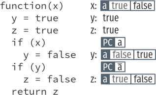
Pour donner une idée de l’échelle du projet, Narcissus fait 6000 lignes de code, et les deux plus gros fichiers sont le parseur (1600 lignes) et le fichier principal de interpréteur, “jsexec” (1300 lignes). Ce fichier principal contient la logique pour interpréter des arbres de syntaxe abstraits, et pour mettre en place l’environnement d’exécution des programmes clients. Les changements effectués pour l’implémentation de l’évaluation multi-facettes sont restreints à ce fichier principal; 640 lignes sont affectées, soit la moitié.
Pour réaliser l’instrumentation de Narcissus pour l’évaluation multi-facettes, les auteurs ont modifié directement le code source de l’interpréteur Narcissus. On peut obtenir l’ensemble des changements effectués en extrayant un diff des deux versions. La figure 13 donne une vue d’ensemble des changements.
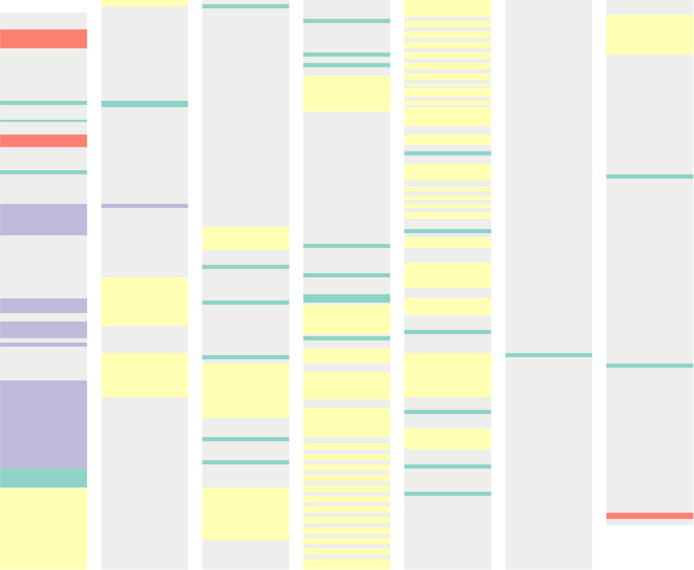
On constate immédiatement que les changements effectués par l’instrumentation touchent de nombreuses parties du code de l’interpréteur, sans être restreints à une ou deux régions particulières. Les changements sont éparpillés dans le code. De plus, les changements de même nature—appartenant à la même catégorie—ne sont pas regroupés. Résultat, il devient difficile de comprendre les effets de l’instrumentation à l’œil nu, ou de s’assurer de sa justesse par rapport à une spécification formelle. Il devient difficile également, sans connaissances avancées de Narcissus et de l’évaluation multi-facettes, de savoir si une ligne de code de l’interpréteur instrumenté concerne l’interprétation décrite par le standard ECMAScript, ou si elle concerne l’évaluation multi-facettes. Le code de l’interpréteur instrumenté ne comporte aucune information qui permet de les distinguer.
Autre point important: l’instrumentation duplique tout le code de l’interpréteur. C’est une solution simple pour créer un interpréteur qui supporte l’évaluation multi-facettes. En revanche, la duplication de code a un impact important sur la maintenance à long terme: plus de double du code doit être maintenu. Les changements requis dans le code source pour corriger un bug dans Narcissus, ou pour ajouter une fonctionnalité doivent désormais être répétés dans l’instrumentation. Le coût de maintenance devient prohibitif lorsque plusieurs instrumentations sont envisagées.
En observant le diff de plus près, on peut distinguer quatre catégories de
changements: les imports/exports, l’ajout du paramètre program counter,
séparer l’évaluation des valeurs à facettes, et les ajouts à l’objet global.
De nouvelles définitions ont besoin d’être importées dans le module de l’interpréteur, et une nouvelle fonction est exportée. Ce sont de simples ajouts qui sont localisés en début et en fin de fichier respectivement. Voici comment ils se présentent dans le code:
+ var FacetedValue = Zaphod.facets.FacetedValue; + var ProgramCounter = Zaphod.facets.ProgramCounter; ... - test: test + test: test, + getPC: getGC
Les changements effectués pour accommoder le program counter utilisé par
l’analyse. D’abord, le constructeur de l’objet ExecutionContext est étendu
pour accepter un argument supplémentaire: la valeur courante du program
counter, pc. Voici un extrait du diff qui illustre ce
changement:
- function ExecutionContext(type, version) {
+ function ExecutionContext(type, pc, version {
+ this.pc = pc;
Dans Narcissus, une instance de l’objet ExecutionContext est créée lorsque le
contrôle est transféré à du code client exécutable: lors de l’entrée dans une
fonction, lors d’un appel à eval, ou lors de l’exécution d’un programme
entier. L’objet ExecutionContext contient les variables importantes pour
l’exécution du code; en particulier l’environnement lexical utilisé pour
résoudre les noms de variables du code exécuté par ce contexte. L’objet
ExecutionContext est une réification du concept éponyme de la spécification
ECMAScript.
Puisque la signature du constructeur d'ExecutionContext est étendue, tous ses
appels doivent être modifiés en conséquence pour fournir une valeur correcte
pour le paramètre program counter. Il y a plus de 80 instances de ce simple
changement dans l’instrumentation. En voici deux exemples:
- x2 = new ExecutionContext(MODULE_CODE); + x2 = new ExecutionContext(MODULE_CODE, x.pc); - getValue(execute(n.children[0], x)); + getValue(execute(n.children[0], x), pc);
Les changements effectués dans l’exécution de l’arbre de syntaxe abstrait (AST)
pour propager les étiquettes sur les valeurs à facettes. Par exemple,
additionner deux valeurs à facettes devrait produire une nouvelle valeur à
facettes. Dans l’implémentation, plutôt que de simplement additionner les deux
opérandes, l’interpréteur doit maintenant d’abord inspecter l’opérande gauche,
et si c’est une valeur à facettes, il faudra ajouter la valeur de l’opérande
droite à chaque facette. Bien sûr, l’opérande droite peut également être une
valeur à facettes, et il faut alors séparer l’évaluation à nouveau.
L’interpréteur Narcissus ne contient aucun code pour gérer l’addition de deux
valeurs à facettes, donc l’instrumentation doit ajouter la logique nécessaire.
Pour ce faire, chaque évaluation d’une opération est enrobée dans un appel à la
fonction evaluateEach qui teste si une valeur est à facettes, et appelle
récursivement la fonction d’évaluation sur chaque facette si c’est le cas. 25
appels à evaluateEach ont été ainsi ajoutés dans l’instrumentation. Le code
suivant donne la forme générale de ces changements:
- var v = getValue(node.a)
+ evaluteEach(getValue(node.a), function(v,x) {
... do something with v ...
+ }
À la première ligne on récupère une valeur d’un nœud de l’AST (p.ex., l’opérande
gauche d’une assignation, ou la condition d’un if) puis on fait quelque chose
avec cette valeur. Sur la seconde ligne, on récupère la même valeur, mais cette
fois on sépare l’évaluation en appelant evaluateEach avec cette valeur comme
premier argument, et comme second une fonction qui opère sur une valeur simple.
Les changements effectués sur l’environnement d’exécution de code client. Dans
un programme JavaScript, l’environnement d’exécution fournit un objet global
qui contient les définitions de base comme Array, Math, String et
Object. Puisque Narcissus est métacirculaire, il réutilise l’objet global de
son environnement hôte pour construire l’objet global de l’environnement client.
Ceci est fait en trois étapes. Premièrement, Narcissus crée un objet
globalBase avec les propriétés qui surchargeront celle de l’environnement
hôte. Deuxièmement, il crée un objet global client à partir de l’objet
global de son environnement hôte, et met toutes les propriétés de globalBase
dans cet objet global client. Troisièmement, il ajoute à cet objet global
client les versions réfléchies de certains objets de base (Array, String,
Function).
L’instrumentation de l’évaluation multi-facettes enrichit l’objet global
client en ajoutant 50 propriétés à globalBase, comme la suivante:
var globalBase = {
...
+ isFacetedValue: function(v) {
+ return (v instanceof FacetedValue);
+ },
L’instrumentation change également la propriété String de globalBase pour
suivre les valeurs étiquetées passées en argument du constructeur de chaînes de
caractères.
Le fait que la plupart des changements appartiennent à une de ces quatre catégories indique qu’il y a un potentiel de factorisation. Si l’on souhaite rendre Narcissus extensibles, afin de pouvoir définir l’évaluation multi-facettes sans duplication de code, il faut trouver des façons d’exprimer les changements de ces quatre catégories. Mais si nous souhaites exprimer d’autres analyses, et étendre d’autres interpréteurs, il faut tenter des trouver des mécanismes génériques qui pourront être réemployés pour ces autres cas.
Pour prendre un peu de recul par rapport à l’instrumentation de Narcissus, on
peut s’intéresser à la définition formelle de l’évaluation multi-facettes.
Celle-ci est donnée sous forme d’une sémantique opérationnelle d’un langage
proche du lambda-calcul: λfacet. La sémantique de ce langage est d’abord donnée
sans considérer l’évaluation multi-facettes, et suit une définition usuelle d’un
lambda-calcul en call-by-value; λfacet contient en plus des constantes, des
références mutables, et une valeur absorbante pour faire écho au undefined de
JavaScript.
Dans un second temps, une sémantique alternative est présentée qui introduit les changements nécessaires pour l’évaluation multi-facettes. Il s’agit d’une copie de la première sémantique, avec quelques changements et ajouts. On y retrouve les deux des quatre catégories de changements dégagées du diff. Le program counter accompagne chaque règle d’évaluation, et de nouvelles règles sont ajoutées pour séparer l’évaluation de valeurs à facette en deux parties.
Les règles de la sémantique instrumentées tiennent sur une page; un interpréteur pour cette sémantique est donc considérablement plus petit qu’un interpréteur JavaScript complet, ce qui en fait un excellent choix pour tester des mécanismes d’extensibilité.
4 UNSTABLE Variations sur un interpréteur de lambda-calcul extensible
Essayons d’abord d’écrire un interpréteur pour chaque sémantique de λfacet, sans anticiper l’instrumentation; c’est à dire sans se préoccuper de pouvoir étendre l’interpréteur facilement.
Nous appellerons λstandard le langage décrit par la première sémantique d’Austin et Flanagan, qui correspond à un lambda-calcul avec références, et λfacet le langage étendu pour l’évaluation multi-facettes.
Puisque Narcissus est en JavaScript, et suit le patron module, écrivons un interpréteur de λstandard dans le même style.
var interpreter = (function(){ var bottom = {...} function Address() {...} function FunctionObject() {...} function ExecutionContext(parent) { ... this.scope = {} this.store = new Store() } function execute(node, context) { switch (node.type) { case 'CONST': ... case 'VAR': ... case 'FUN': ... case 'APP': ... ... } } return { run: run, } }())
Ce simple interpréteur reflète la structure de Narcissus, mais est bien plus
succinct. Comme dans Narcissus, le gros de la logique de l’interpréteur réside
dans la fonction execute. Les définitions qui précèdent réifient des objets
de la spécification: Address, bottom, FunctionObject. On réutilise le nom
ExecutionContext pour indiquer l’objet qui contient l’environnement de
variable et qui est passé au fil des appels récursifs à execute. En bas ce
sont les fonctions exportées par le module.
On peut maintenant modifier cet interpréteur pour implémenter la seconde sémantique de λfacet. Comme pour l’instrumentation de Narcissus, on part de l’interpréteur du langage standard, qu’on modifie par endroits suivant les besoins de la nouvelle sémantique. L’idée ici n’est pas de construire un interpréteur extensible, mais d’identifier les points qui vont varier en définissant cette variation. Pour cela, on s’intéresse surtout aux différences entre les deux versions.
+ function Facet() {...}
+ function evaluateEach() {...}
function ExecutionContext() {
+ this.pc = []
}
function execute(...) {
...
case CALL:
- v = f._call(a, context)
+ v = evaluateEach(f, context, (f, x) => f._call(a, x))
case REF:
+ v = constructFacet(context.pc, v, bottom)
case DEREF:
- v = a.deref(context)
+ v = evaluateEach(a, context, (a, x) => a.deref(x))
...
}
return {
...
+ runWithPC: runWithPC,
}
Il y a moins de différences que pour l’instrumentation de Narcissus, mais on
retrouve trois des mêmes catégories. D’abord, il y a de nouvelles définitions
pour les valeurs à facettes et leur évaluation (Facet et evaluateEach). La
fonction evaluateEach est utilisée, comme dans l’instrumentation de Narcissus,
pour évaluer les deux parties d’une valeur à facettes récursivement. Le program
counter est présent, et rajouté à l’objet ExecutionContext pour pouvoir être
utilisé dans execute. Enfin, une nouvelle fonction est exportée par le
module. La seule catégorie non représentée est l’extension de l’objet client
global, car il n’y a pas d’équivalent à l’objet global dans λfacet.
Puisqu’on retrouve les mêmes catégories de changement sur cet exemple plus restreint, on peut supposer que si l’on trouve des moyens d’instrumenter l’interpréteur de λstandard pour l’évaluation à facettes sans duplication de code, ces moyens seront applicables à Narcissus également.
Il est clair que les choix d’implémentation de l’interpréteur standard sont la cause de la duplication de code dans l’instrumentation. Si l’interpréteur possédait une interface pour être étendu, nous n’aurions pas besoin de dupliquer le code pour changer ces quelques lignes. Comment aurions nous dû construire l’interpréteur pour que l’extension requise par λfacet puisse être écrite en minimisant le code dupliqué ? Ou encore, est-il possible de modifier l’interpréteur standard pour le rendre extensible ? Ce sont les deux questions que nous explorons par la suite.
5 TRANSLATE Construire un interpréteur extensible
Le style de l’interpréteur du chapitre précédent n’est pas extensible. L’interpréteur suit le patron module en JavaScript, qui a pour intention de verrouiller les définitions du module contre toute extension future; qu’elles soient intentionnelles ou accidentelles (le chapitre ?? décrit en détail le fonctionnement de ce patron).
Mais ce n’est pas la seule façon d’écrire l’interpréteur en JavaScript. On peut
très bien suivre un style inspiré de la programmation objet. Le patron
interpréteur [GHJ+94] est d’ailleurs un bon candidat: chaque nœud de l’arbre de
syntaxe est un objet, et contient une méthode interpret. Le switch de la
fonction execute de Narcissus est donc séparé en morceaux indépendants: chaque
nœud possède le code qui permet d’évaluer sa valeurs et ses effets.
Écrivons un interpréteur pour λstandard dans ce style. D’abord, les objets qui réifient les nœuds de l’AST:
var stdInterp = { CONST: { new(e) {...}, execute(context) {...}}, VAR: { new(e) {...}, execute(context) {...}}, FUN: { new(argName, body) {...}, execute(context) {...}}, APP: { new(fun, arg) {...}, execute(context) {...}},
Chaque objet a deux méthodes: une pour l’instancier, et une pour évaluer le nœud
de l’AST. Les méthodes execute contiennent la même logique que les case du
switch de l’interpréteur dans le style de Narcissus.
Les objets de l’exécution subissent la même transformation:
Address: {
new(a) {...},
deref(context) {...},
},
ExecutionContext: {
new(scope, store) {...},
},
Store: {
new() {...},
add(value) {...},
retrieve(addr) {...},
},
FunctionObject: {
new(node, scope) {...},
_call(arg, x) {...},
},
Et enfin, la fonction d’entrée de l’interpréteur, run, peut simplement appeler
la méthode execute sur la racine de l’AST.
run(node) {
return node.execute(this.ExecutionContext.new())
},
})
L’intérêt de cette décomposition c’est qu’on peut maintenant facilement créer une variante de l’interpréteur grâce à la délégation par prototype de JavaScript:
var fctInterp = derive(stdInterp, { APP: derive(stdInterp.APP, { execute(context) { ... return evaluateEach(...) }}) REF: derive(stdInterp.REF, { execute(context) { ... return constructFacet(...) }}), DEREF: derive(stdInterp.DEREF, { execute(context) { return evaluateEach(...) }}), ExecutionContext: derive(stdInterp.ExecutionContext, { new(scope, store, pc) {...} }), runWithPC(node, pc) {...}, })
Ici, fctInterp a pour prototype stdInterp, donc toute propriété non présente
sur fctInterp sera prise de stdInterp. Inversement, la propriété APP est
définie sur fctInterp, donc elle “surcharge” la propriété APP de
stdInterp. La délégation par prototype est un mécanisme bien adapté à notre
problème, car on souhaite que le code de fctInterp exprime la différence de
l’évaluation de λfacet, et seulement cette différence. Dans un langage à
prototype, un objet n’est pas instancié à partir d’une classe, mais dérivé
d’un prototype. Un objet dérivé n’a besoin que de définir en quoi il diffère de
son prototype. C’est donc un mécanisme de langage idéal pour notre scénario
avec deux interpréteurs.

fctInterp possède une unique propriété propre: APP. Les autres propriétés sont déléguées à son prototype, stdInterp.
L’interpréteur de λfacet peut donc être défini uniquement en codant les
différences entre ces deux modes d’interprétation. Les deux objets stdInterp
et fctInterp coexistent à l’exécution, ce qui permet de pouvoir choisir entre
l’une ou l’autre interprétation pour un même programme.
5.0.1 Finding a core example
Looking at the operational semantics for faceted evaluation, we can
see the patterns mentioned previously (pc parameter, new cases for
FacetedValues). They are based on a lambda calculus variant, with
references and a “Bottom” value. Let’s try to write an interpreter
for this lambda calculus without anticipating the later
instrumentation.
We’ll drop the read/write rules since they only add noise to this example. We’ll also leave out error handling.
Set.prototype.union = function(elem) { let n = new Set(this); n.add(elem); return n; } function interpretNode(σ, θ, node) { return rules[node.type](σ, θ, node); } let ↆ = interpretNode; let bottom = {type: 'bottom'}; function closure(x, e, θ) { return {type: 'closure', x, e, θ}; } function address(a) { return {type: 'address', a}; } function eval_apply(σ, v1, v2) { return application_rules[v1.type](σ, v1, v2); } let application_rules = { bottom(σ) { return [σ, bottom]; }, closure(σ, {x, e, θ}, v) { let θ1 = Object.create(θ); θ1[x] = v; return ↆ(σ, θ1, e); }, }; function eval_deref(σ, v) { return deref_rules[v.type](σ, v); } let deref_rules = { bottom() { return bottom; }, address(σ, {a}) { return σ[a]; }, }; function eval_assign(σ, v1, v2) { return assign_rules[v1.type](σ, v1, v2); } let assign_rules = { bottom(σ) { return σ; }, address(σ, {a}, v) { let σ2 = Object.create(σ); σ2[a] = v; return σ2; }, }; let rules = { c(σ, θ, {e}) { return [ σ, e ]; }, v(σ, θ, {e}) { return [ σ, θ[e] ]; }, fun(σ, θ, {x, e}) { return [ σ, closure(x, e, θ) ]; }, app(σ, θ, {e1, e2}) { let [σ1, v1] = ↆ(σ, θ, e1); let [σ2, v2] = ↆ(σ1, θ, e2); return eval_apply(σ2, v1, v2); }, ref(σ, θ, {e}) { let [σ1, v] = ↆ(σ, θ, e); let a = Object.keys(σ1).length; let σ2 = Object.create(σ1); σ2[a] = v; return [ σ2, address(a) ]; }, deref(σ, θ, {e}) { let [σ1, v] = ↆ(σ, θ, e); return [ σ1, eval_deref(σ1, v) ]; }, assign(σ, θ, {e1, e2}) { let [σ1, v1] = ↆ(σ, θ, e1); let [σ2, v2] = ↆ(σ1, θ, e2); return [ eval_assign(σ2, v1, v2), v2 ]; }, }; function interpretProgram(AST, env = {}, store = {}) { return interpretNode(env, store, AST); } // Test function app(e1, e2) { return {type: 'app', e1, e2}; } function fun(x, e) { return {type: 'fun', x, e}; } function ref(e) { return {type: 'ref', e}; } function deref(e) { return {type: 'deref', e}; } function c(e) { return {type: 'c', e}; } function v(e) { return {type: 'v', e}; } interpretProgram( app(fun('x', deref(v('x'))), ref(c(42))) );
We used destructuring from ES6 and Unicode identifiers to approximate
the appearance of the big-step semantics. To effect the operational
rules, we use an ad-hoc pattern matching. Each AST node is an object
with a type field, and the interpNode function dispatches to the
function in the rules object corresponding to the value of this type
field. The same pattern matching mechanism is used to distinguish
between an address, a closure or a bottom value.
We can easily instrument this base interpreter by following the operational semantics from Austin and Flanagan.
Set.prototype.union = function(elem) { let n = new Set(this); n.add(elem); return n; } function interpretNode(σ, θ, pc, node) { return rules[node.type](σ, θ, pc, node); } let ↆ = interpretNode; let bottom = {type: 'bottom'}; function mk_facet(pc, v1, v2) { if (pc.size === 0) return v1; let [k, ...rest] = pc; rest = new Set(rest); if (k > 0) return facet(k, mk_facet(rest, v1, v2), v2); else return facet(k, v2, mk_facet(rest, v1, v2)); } function facet(k, vh, vl) { return {type: 'facet', k, vh, vl}; } function closure(x, e, θ) { return {type: 'closure', x, e, θ}; } function address(a) { return {type: 'address', a}; } function eval_apply(σ, pc, v1, v2) { return application_rules[v1.type](σ, pc, v1, v2); } let application_rules = { bottom(σ) { return [σ, bottom]; }, closure(σ, pc, {x, e, θ}, v) { let θ1 = Object.create(θ); θ1[x] = v; return ↆ(σ, θ1, pc, e); }, facet(σ, pc, {k, vh, vl}, v2) { if (pc.has(k)) { return eval_apply(σ, pc, vh, v2); } else if (pc.has(-k)) { return eval_apply(σ, pc, vl, v2); } else { let [σ1, vh1] = eval_apply(σ, pc.union(k), vh, v2); let [σ2, vl1] = eval_apply(σ1, pc.union(-k), vl, v2); return [ σ2, mk_facet(k, vh1, vl1) ]; } }, }; function eval_deref(σ, v, pc) { return deref_rules[v.type](σ, v, pc); } let deref_rules = { bottom() { return bottom; }, address(σ, {a}, pc) { return σ[a]; }, facet(σ, {k, vh, vl}, pc) { if (pc.has(k)) return eval_deref(σ, vh, pc); else if (pc.has(-k)) return eval_deref(σ, vl, pc); else return mk_facet(k, eval_deref(σ, vh, pc), eval_deref(σ, vl, pc)); }, }; function eval_assign(σ, pc, v1, v2) { return assign_rules[v1.type](σ, pc, v1, v2); } let assign_rules = { bottom(σ) { return σ; }, address(σ, pc, {a}, v) { let σ2 = Object.create(σ); σ2[a] = mk_facet(pc, v, σ[a]); return σ2; }, facet(σ, pc, {k, vh, vl}, v) { let σ1 = eval_assign(σ, pc.union(k), vh, v); return eval_assign(σ1, pc.union(-k), vl, v); }, }; let rules = { c(σ, θ, pc, {e}) { return [ σ, e ]; }, v(σ, θ, pc, {e}) { return [ σ, θ[e] ]; }, fun(σ, θ, pc, {x, e}) { return [ σ, closure(x, e, θ) ]; }, app(σ, θ, pc, {e1, e2}) { let [σ1, v1] = ↆ(σ, θ, pc, e1); let [σ2, v2] = ↆ(σ1, θ, pc, e2); return eval_apply(σ2, pc, v1, v2); }, ref(σ, θ, pc, {e}) { let [σ1, v] = ↆ(σ, θ, pc, e); let a = Object.keys(σ1).length; let σ2 = Object.create(σ1); σ2[a] = mk_facet(pc, v, bottom); return [ σ2, address(a) ]; }, deref(σ, θ, pc, {e}) { let [σ1, v] = ↆ(σ, θ, pc, e); return [ σ1, eval_deref(σ1, v, pc) ]; }, assign(σ, θ, pc, {e1, e2}) { let [σ1, v1] = ↆ(σ, θ, pc, e1); let [σ2, v2] = ↆ(σ1, θ, pc, e2); return [ eval_assign(σ2, pc, v1, v2), v2 ]; }, }; function interpretProgram(AST, env = {}, store = {}, pc = []) { let pc = new Set(pc); return interpretNode(env, store, pc, AST); } // Test function app(e1, e2) { return {type: 'app', e1, e2}; } function fun(x, e) { return {type: 'fun', x, e}; } function ref(e) { return {type: 'ref', e}; } function deref(e) { return {type: 'deref', e}; } function c(e) { return {type: 'c', e}; } function v(e) { return {type: 'v', e}; } interpretProgram( app(fun('x', deref(v('x'))), ref(c(42))), {}, {}, [1] );
The interesting story is told by looking at the differences between
these two versions. We see patterns 1 and 2 reappear from our
analysis of the Narcissus instrumentation. The pc parameter must be
passed around in nearly every function, and new cases must be added to
handle facet values.
diff js/lab/lamfa-es6-standard.js js/lab/lamfa-es6-facets.js; exit 0
7,8c7,8 < function interpretNode(σ, θ, node) { < return rules[node.type](σ, θ, node); --- > function interpretNode(σ, θ, pc, node) { > return rules[node.type](σ, θ, pc, node); 14a15,28 > function mk_facet(pc, v1, v2) { > if (pc.size === 0) > return v1; > > let [k, ...rest] = pc; > rest = new Set(rest); > > if (k > 0) > return facet(k, mk_facet(rest, v1, v2), v2); > else > return facet(k, v2, mk_facet(rest, v1, v2)); > } > > function facet(k, vh, vl) { return {type: 'facet', k, vh, vl}; } 18,19c32,33 < function eval_apply(σ, v1, v2) { < return application_rules[v1.type](σ, v1, v2); --- > function eval_apply(σ, pc, v1, v2) { > return application_rules[v1.type](σ, pc, v1, v2); 27c41 < closure(σ, {x, e, θ}, v) { --- > closure(σ, pc, {x, e, θ}, v) { 30c44,60 < return ↆ(σ, θ1, e); --- > return ↆ(σ, θ1, pc, e); > }, > > facet(σ, pc, {k, vh, vl}, v2) { > if (pc.has(k)) { > return eval_apply(σ, pc, vh, v2); > } > > else if (pc.has(-k)) { > return eval_apply(σ, pc, vl, v2); > } > > else { > let [σ1, vh1] = eval_apply(σ, pc.union(k), vh, v2); > let [σ2, vl1] = eval_apply(σ1, pc.union(-k), vl, v2); > return [ σ2, mk_facet(k, vh1, vl1) ]; > } 34,35c64,65 < function eval_deref(σ, v) { < return deref_rules[v.type](σ, v); --- > function eval_deref(σ, v, pc) { > return deref_rules[v.type](σ, v, pc); 43c73 < address(σ, {a}) { --- > address(σ, {a}, pc) { 45a76,84 > > facet(σ, {k, vh, vl}, pc) { > if (pc.has(k)) > return eval_deref(σ, vh, pc); > else if (pc.has(-k)) > return eval_deref(σ, vl, pc); > else > return mk_facet(k, eval_deref(σ, vh, pc), eval_deref(σ, vl, pc)); > }, 48,49c87,88 < function eval_assign(σ, v1, v2) { < return assign_rules[v1.type](σ, v1, v2); --- > function eval_assign(σ, pc, v1, v2) { > return assign_rules[v1.type](σ, pc, v1, v2); 57c96 < address(σ, {a}, v) { --- > address(σ, pc, {a}, v) { 59c98 < σ2[a] = v; --- > σ2[a] = mk_facet(pc, v, σ[a]); 61a101,105 > > facet(σ, pc, {k, vh, vl}, v) { > let σ1 = eval_assign(σ, pc.union(k), vh, v); > return eval_assign(σ1, pc.union(-k), vl, v); > }, 65c109 < c(σ, θ, {e}) { --- > c(σ, θ, pc, {e}) { 69c113 < v(σ, θ, {e}) { --- > v(σ, θ, pc, {e}) { 73c117 < fun(σ, θ, {x, e}) { --- > fun(σ, θ, pc, {x, e}) { 77,80c121,124 < app(σ, θ, {e1, e2}) { < let [σ1, v1] = ↆ(σ, θ, e1); < let [σ2, v2] = ↆ(σ1, θ, e2); < return eval_apply(σ2, v1, v2); --- > app(σ, θ, pc, {e1, e2}) { > let [σ1, v1] = ↆ(σ, θ, pc, e1); > let [σ2, v2] = ↆ(σ1, θ, pc, e2); > return eval_apply(σ2, pc, v1, v2); 83,84c127,128 < ref(σ, θ, {e}) { < let [σ1, v] = ↆ(σ, θ, e); --- > ref(σ, θ, pc, {e}) { > let [σ1, v] = ↆ(σ, θ, pc, e); 87c131 < σ2[a] = v; --- > σ2[a] = mk_facet(pc, v, bottom); 91,93c135,137 < deref(σ, θ, {e}) { < let [σ1, v] = ↆ(σ, θ, e); < return [ σ1, eval_deref(σ1, v) ]; --- > deref(σ, θ, pc, {e}) { > let [σ1, v] = ↆ(σ, θ, pc, e); > return [ σ1, eval_deref(σ1, v, pc) ]; 96,99c140,143 < assign(σ, θ, {e1, e2}) { < let [σ1, v1] = ↆ(σ, θ, e1); < let [σ2, v2] = ↆ(σ1, θ, e2); < return [ eval_assign(σ2, v1, v2), v2 ]; --- > assign(σ, θ, pc, {e1, e2}) { > let [σ1, v1] = ↆ(σ, θ, pc, e1); > let [σ2, v2] = ↆ(σ1, θ, pc, e2); > return [ eval_assign(σ2, pc, v1, v2), v2 ]; 103,104c147,149 < function interpretProgram(AST, env = {}, store = {}) { < return interpretNode(env, store, AST); --- > function interpretProgram(AST, env = {}, store = {}, pc = []) { > let pc = new Set(pc); > return interpretNode(env, store, pc, AST); 117c162,163 < ref(c(42))) --- > ref(c(42))), > {}, {}, [1]
Our ad-hoc pattern matching is perhaps not the most straightforward way to write such an interpreter in JavaScript. Another, maybe more familiar way is to use object-oriented dispatching.
let bottom = { eval_apply(σ) { return [ σ, bottom ]; }, eval_deref() { return bottom; }, eval_assign(σ) { return σ; } }; function address(a) { return { eval_deref(σ) { return σ[a]; }, eval_assign(σ, v) { let σ2 = Object.create(σ); σ2[a] = v; return σ2; } }; } function closure(x, e, θ) { return { eval_apply(σ, v) { let θ1 = Object.create(θ); θ1[x] = v; return e.eval(σ, θ1); } }; } function c(e) { return { eval(σ, θ) { return [ σ, e ]; } }; } function v(e) { return { eval(σ, θ) { return [ σ, θ[e] ]; } }; } function fun(x, e) { return { eval(σ, θ) { return [ σ, closure(x, e, θ) ]; } }; } function app(e1, e2) { return { eval(σ, θ) { let [σ1, v1] = e1.eval(σ, θ); let [σ2, v2] = e2.eval(σ1, θ); return v1.eval_apply(σ2, v2); } }; } function ref(e) { return { eval(σ, θ) { let [σ1, v] = e.eval(σ, θ); let a = Object.keys(σ1).length; let σ2 = Object.create(σ1); σ2[a] = v; return [ σ2, address(a) ]; } }; } function deref(e) { return { eval(σ, θ) { let [σ1, v] = e.eval(σ, θ); return [ σ1, v.eval_deref(σ1, v) ]; } }; } function assign(e1, e2) { return { eval(σ, θ) { let [σ1, v1] = e1.eval(σ, θ); let [σ2, v2] = e2.eval(σ1, θ); return [ v1.eval_assign(σ2, v2), v2 ]; } }; } function interpretProgram(AST, env = {}, store = {}) { return AST.eval(env, store); } // Test interpretProgram( app(fun('x', deref(v('x'))), ref(c(42))) );
Set.prototype.union = function(elem) { let n = new Set(this); n.add(elem); return n; } function mk_facet(pc, v1, v2) { if (pc.size === 0) return v1; let [k, ...rest] = pc; rest = new Set(rest); if (k > 0) return facet(k, mk_facet(rest, v1, v2), v2); else return facet(k, v2, mk_facet(rest, v1, v2)); } function facet(k, vh, vl) { return { eval_apply(σ, pc, v2) { if (pc.has(k)) { return vh.eval_apply(σ, pc, v2); } else if (pc.has(-k)) { return vl.eval_apply(σ, pc, v2); } else { let [σ1, vh1] = vh.eval_apply(σ, pc.union(k), v2); let [σ2, vl1] = vl.eval_apply(σ1, pc.union(-k), v2); return [ σ2, mk_facet(k, vh1, vl1) ]; } }, eval_deref(σ, pc) { if (pc.has(k)) return vh.eval_deref(σ, pc); else if (pc.has(-k)) return vl.eval_deref(σ, pc); else return mk_facet(k, vh.eval_deref(σ, pc), vl.eval_deref(σ, pc)); }, eval_assign(σ, pc, v) { let σ1 = vh.eval_assign(σ, pc.union(k), v); return vl.eval_assign(σ1, pc.union(-k), v); } }; } let bottom = { eval_apply(σ) { return [ σ, bottom ]; }, eval_deref() { return bottom; }, eval_assign(σ) { return σ; } }; function address(a) { return { eval_deref(σ) { return σ[a]; }, eval_assign(σ, v) { let σ2 = Object.create(σ); σ2[a] = v; return σ2; } }; } function closure(x, e, θ) { return { eval_apply(σ, pc, v) { let θ1 = Object.create(θ); θ1[x] = v; return e.eval(σ, θ1, pc); } }; } function c(e) { return { eval(σ, θ, pc) { return [ σ, e ]; } }; } function v(e) { return { eval(σ, θ, pc) { return [ σ, θ[e] ]; } }; } function fun(x, e) { return { eval(σ, θ, pc) { return [ σ, closure(x, e, θ) ]; } }; } function app(e1, e2) { return { eval(σ, θ, pc) { let [σ1, v1] = e1.eval(σ, θ, pc); let [σ2, v2] = e2.eval(σ1, θ, pc); return v1.eval_apply(σ2, pc, v2); } }; } function ref(e) { return { eval(σ, θ, pc) { let [σ1, v] = e.eval(σ, θ, pc); let a = Object.keys(σ1).length; let σ2 = Object.create(σ1); σ2[a] = mk_facet(pc, v, bottom); return [ σ2, address(a) ]; } }; } function deref(e) { return { eval(σ, θ, pc) { let [σ1, v] = e.eval(σ, θ, pc); return [ σ1, v.eval_deref(σ1, pc, v) ]; } }; } function assign(e1, e2) { return { eval(σ, θ, pc) { let [σ1, v1] = e1.eval(σ, θ, pc); let [σ2, v2] = e2.eval(σ1, θ, pc); return [ v1.eval_assign(σ2, pc, v2), v2 ]; } }; } function interpretProgram(AST, env = {}, store = {}, pc = []) { let pc = new Set(pc); return AST.eval(env, store, pc); } // Test interpretProgram( app(fun('x', deref(v('x'))), ref(c(42))), {}, {}, [1] );
But here again, the pattern appears when looking at the diff.
diff js/lab/lamfa-oo-standard.js js/lab/lamfa-oo-facets.js; exit 0
0a1,53 > Set.prototype.union = function(elem) { > let n = new Set(this); > n.add(elem); > return n; > } > > function mk_facet(pc, v1, v2) { > if (pc.size === 0) > return v1; > > let [k, ...rest] = pc; > rest = new Set(rest); > > if (k > 0) > return facet(k, mk_facet(rest, v1, v2), v2); > else > return facet(k, v2, mk_facet(rest, v1, v2)); > } > > function facet(k, vh, vl) { > return { > eval_apply(σ, pc, v2) { > if (pc.has(k)) { > return vh.eval_apply(σ, pc, v2); > } > > else if (pc.has(-k)) { > return vl.eval_apply(σ, pc, v2); > } > > else { > let [σ1, vh1] = vh.eval_apply(σ, pc.union(k), v2); > let [σ2, vl1] = vl.eval_apply(σ1, pc.union(-k), v2); > return [ σ2, mk_facet(k, vh1, vl1) ]; > } > }, > > eval_deref(σ, pc) { > if (pc.has(k)) > return vh.eval_deref(σ, pc); > else if (pc.has(-k)) > return vl.eval_deref(σ, pc); > else > return mk_facet(k, vh.eval_deref(σ, pc), vl.eval_deref(σ, pc)); > }, > > eval_assign(σ, pc, v) { > let σ1 = vh.eval_assign(σ, pc.union(k), v); > return vl.eval_assign(σ1, pc.union(-k), v); > } > }; > } > 31c84 < eval_apply(σ, v) { --- > eval_apply(σ, pc, v) { 34c87 < return e.eval(σ, θ1); --- > return e.eval(σ, θ1, pc); 41c94 < eval(σ, θ) { --- > eval(σ, θ, pc) { 49c102 < eval(σ, θ) { --- > eval(σ, θ, pc) { 57c110 < eval(σ, θ) { --- > eval(σ, θ, pc) { 65,68c118,121 < eval(σ, θ) { < let [σ1, v1] = e1.eval(σ, θ); < let [σ2, v2] = e2.eval(σ1, θ); < return v1.eval_apply(σ2, v2); --- > eval(σ, θ, pc) { > let [σ1, v1] = e1.eval(σ, θ, pc); > let [σ2, v2] = e2.eval(σ1, θ, pc); > return v1.eval_apply(σ2, pc, v2); 75,76c128,129 < eval(σ, θ) { < let [σ1, v] = e.eval(σ, θ); --- > eval(σ, θ, pc) { > let [σ1, v] = e.eval(σ, θ, pc); 79c132 < σ2[a] = v; --- > σ2[a] = mk_facet(pc, v, bottom); 87,89c140,142 < eval(σ, θ) { < let [σ1, v] = e.eval(σ, θ); < return [ σ1, v.eval_deref(σ1, v) ]; --- > eval(σ, θ, pc) { > let [σ1, v] = e.eval(σ, θ, pc); > return [ σ1, v.eval_deref(σ1, pc, v) ]; 96,99c149,152 < eval(σ, θ) { < let [σ1, v1] = e1.eval(σ, θ); < let [σ2, v2] = e2.eval(σ1, θ); < return [ v1.eval_assign(σ2, v2), v2 ]; --- > eval(σ, θ, pc) { > let [σ1, v1] = e1.eval(σ, θ, pc); > let [σ2, v2] = e2.eval(σ1, θ, pc); > return [ v1.eval_assign(σ2, pc, v2), v2 ]; 104,105c157,159 < function interpretProgram(AST, env = {}, store = {}) { < return AST.eval(env, store); --- > function interpretProgram(AST, env = {}, store = {}, pc = []) { > let pc = new Set(pc); > return AST.eval(env, store, pc); 111c165,166 < ref(c(42))) --- > ref(c(42))), > {}, {}, [1]
Hence, these patterns appear regardless of the instrumented language (lambda calculus or JavaScript), and regardless of the language features used by the implementation (pattern matching or dynamic dispatch). Therefore, the problem of finding a way to describe the instrumentation as a module and minimizing coupling is not specific to Narcissus or JavaScript interpreters.
We will now exhibit variations in writing the instrumentation as a separate module with minimal code duplication.
5.0.2 The expression problem
First, let’s list the additions brought by our extension to the interpreter:
- we add a new constructor
Coupleto the data typeTerm - we add a new constructor
Pairto the data typeValue - we add a new case
Coupleto the functioninterp - we add two new (symmetric) cases
Pairto the functionplus
Now, what would a differential description of the extension to our interpreter look like?
extend data Term = Couple Int Int extend data Value = Pair Int Int extend interp (Couple i1 i2) = (Pair i1 i2) extend plus (Number a) (Pair i1 i2) = (Pair (a + i1) (a + i2)) extend plus (Pair i1 i2) (Number a) = (Pair (a + i1) (a + i2))
These are all the additions brought by the extension to the original
interpreter. The new extend keyword allows us to:
- Extend data types with new constructors.
- Extend function definitions with new cases.
How to extend both data types and functions in a program, without
sacrificing modularity, is a problem known as the expression problem
[Wadler]. This (imaginary) extend keyword is a solution; there are
real solutions [Open Data Types and Open Functions] (Instead of an
extend keyword, they provide an open keyword to prefix to initial
declarations of data types and functions. One could also require both
extended and original codes to include keywords.)
5.0.3 The expression problem, with a twist
The expression problem is only concerned with adding data types and functions, but when we instrument an interpreter, we will often want to modify its behavior rather than just extend it.
When we take modification into account, what does a differential description look like?
First, let’s go back to the original interpreter, and modify its behavior.
data Term = Plus Term Term | Constant Int data Value = Number Int interp :: Term -> Value interp (Plus t1 t2) = plus (interp t1) (interp t2) interp (Constant i) = (Number i) plus :: Value -> Value -> Value plus (Number a) (Number b) = (Number (a + b))
Say we need to change the value returned by the interpretation of the term ‘Constant’. We want to return a ‘Pair’ value instead of a single number, the second value being a default zero. We would write the full version, with replication as:
data Term = Plus Term Term | Constant Int data Value = Number Int | Pair Int Int interp :: Term -> Value interp (Plus t1 t2) = plus (interp t1) (interp t2) interp (Constant i) = (Pair i 0) plus :: Value -> Value -> Value plus (Number a) (Number b) = (Number (a + b))
What would be the differential description of this change?
extend data Value = Pair Int Int modify interp (Constant i) = (Pair i 0)
The keyword modify replaces the definition for the targeted case of
interp.
[What if we want to combine multiple modifications to the same case function? A: You’d have to have a clue about the precedence order to make sense of the result, but these problems are shared by other AOP applications.]
5.0.4 The modular instrumentation problem
We have an interpreter I for a language L, and the source code for I. We want to instrument the interpreter I, by extending and modifying its behavior. Namely, the instrumentation can:
- add terms to the base language
- add values to the base language
- add new operations
- alter the behavior of existing operations, or even suppress them entirely.
We constrain the instrumentation by imposing the following restrictions:
- The instrumented interpreter I’ must still be able to execute programs written in the language L. The instrumentation cannot remove or modify existing terms of the language.
- The instrumentation must modify only a part of the original interpreter operations. Otherwise, the instrumented interpreter may end up with semantics so different from the original interpreter that it does not qualify as “instrumentation” anymore; it might as well be another interpreter in its own right.
The implementation of this instrumentation will give a new interpreter I’. Ideally, this implementation should be as modular as possible; it should:
- promote isolated reasoning,
- minimize code replication and accidental complexity. We should be able to map the differential description of the instrumentation and the code for its implementation.
The modular instrumentation problem is then: how to implement the instrumentation with the above constraints of modularity?
Note that the changes may bring only additional side effects, and leave the original behavior unaltered. How to recognize or enforce “side-effects only” instrumentation is an interesting question. [“Recognize” I don’t know how. “Enforce” you can do with monads, if you have a monadic interpreter.]
5.1 Variations
5.1.1 JavaScript
See js/aoping.html.
See also lassy15.html for a way to build interpreters incrementally.
Split OO-style instrumented interpreter into modules
Let’s try to separate the object-oriented instrumented interpreter in two modules: one for the base interpreter, ‘base.js’, and one for the instrumentation, ‘facets.js’. The ‘base.js’ file should not contain any instrumentation-specific code, and be as close as possible to the standard interpreter.
Looking at the diff, we can put mk_facet, facet and the extension
to Set.prototype in a separate file right away.
- Handling the extra PC parameter
The second, more pervasive change is the addition of the program counter context in every call. There are at least two solutions to this problem:
- Using a global variable.
- Using a context object.
- Using a global variable
js/lab/oo-split-global/base.js js/lab/oo-split-global/facets.js
We can use a global variable for the ‘pc’. This eliminates the need to pass the ‘pc’ as a formal parameter to most functions, and to pass it down to tail calls. However, we then need to save the previous value of this global pc when temporarily changing the current pc to evaluate branches in
facet.eval_assignandfacet.eval_apply.With the ‘pc’ argument:
let [σ1, vh1] = vh.eval_apply(σ, pc.union(k), v2); let [σ2, vl1] = vl.eval_apply(σ1, pc.union(-k), v2);
With a global variable ‘pc’:
let pc_old = pc; pc = pc.union(k); let [σ1, vh1] = vh.eval_apply(σ, v2); pc = pc.union(-k); let [σ2, vl1] = vl.eval_apply(σ1, v2); pc = pc_old;
This temporary rewriting of a variable is essentially emulating a dynamic binding of the ‘pc’ variable. There are no built-ins constructs or syntactic sugar for dynamic binding in JavaScript, but we can add one for this particular variable.
function with_pc(new_pc, thunk) { let old_pc = pc; pc = new_pc; let ret = thunk(); pc = old_pc; return ret; }
Now the
facet.eval_applyfunction is cleaner:let [σ1, vh1] = with_pc(pc.union(k), () => vh.eval_apply(σ, v2)); let [σ2, vl1] = with_pc(pc.union(-k), () => vl.eval_apply(σ1, v2)); return [ σ2, mk_facet(k, vh1, vl1) ];
The ‘pc’ parameter is thus part of the closure of all facet-related functions. The
with_pcconstruct require mutability in order to change the current program counter referenced in the closure. Mutability can be waived as a requirement if the language supports dynamic scoping [Art of Interp]. - Using a context object
js/lab/oo-split-context/base.js js/lab/oo-split-context/facets.js
Using a global variable for just the ‘pc’ and not the store or environment seems heterogeneous. We can adopt the position that the ‘pc’ is an extension to the state of the interpreter, and bundle all this state in a ‘context’ objet passed around in function calls. Then we profit from the dynamic nature of JavaScript objects: we can add any property at runtime. Rather than hiding the ‘pc’ away, it makes the state passing explicit, and removes the need for
with_pc.This solution has the benefit of homogenizing the order of formal parameters: the context object will always be the first one, and the
evalfunctions will always return a context object rather than just the store.Here is what the third branch of
facet.eval_applylooks like:let [C1, vh1] = vh.eval_apply(with_pc(C, C.pc.union(k)), v2); let [C2, vl1] = vl.eval_apply(with_pc(C1, C.pc.union(-k)), v2); return [ C2, mk_facet(k, vh1, vl1) ];
The evaluation of functions now explicitly deals with contexts:
function app(e1, e2) { return { eval(C) { let [C1, v1] = e1.eval(C); let [C2, v2] = e2.eval(C1); return v1.eval_apply(C2, v2); } }; }
The signatures are simpler, though we lose a bit in legibility, as
Cis opaque: we do not see what the context made is of by looking at the formal parameters. Only looking at the entry point (interpretProgram) reveals its contents.The context object bundles all the state needed by the interpreter, and its extensions. Adding another piece of state is modular since the base interpreter already passes down this context object.
This solution does not require mutability, but it benefits from dynamic typing. In the case of the base interpreter, the context object has type (Store * Environment), while in the faceted interpreter, it has type (Store * Environment * PC).
Note that we could combine both methods, and avoid passing the context object explicitly in all functions by using a global variable. In that case, both mutability and dynamic typing are leveraged.
- Handling the change in the reference rule
js/lab/oo-split-global/base.js js/lab/oo-split-global/facets.js
With the extra ‘pc’ out of the way, the only change remaining is the
mk_facetcall in the reference rule. This is how runtime faceted values are effectively created.79c79 < σ2[a] = mk_facet(pc, v, bottom); --- > σ2[a] = v;
We can solve this by creating two different versions of the
reffunction, one with the standard behavior, and one suited for the instrumentation.function ref(e) { return { eval(σ, θ) { let [σ1, v] = e.eval(σ, θ); let a = Object.keys(σ1).length; let σ2 = Object.create(σ1); σ2[a] = v; return [ σ2, address(a) ]; } }; }
function ref(e) { return { eval(σ, θ) { let [σ1, v] = e.eval(σ, θ); let a = Object.keys(σ1).length; let σ2 = Object.create(σ1); σ2[a] = mk_facet(pc, v, bottom); // this line changes return [ σ2, address(a) ]; } }; }
But how do we differentiate which version of
refto use when callinginterpretProgram? We need namespaces. Using objects as namespaces, both versions ofrefcan coexist.this.base = { interpretProgram, c, v, fun, app, ref, deref, assign, _innards: { bottom, address, closure} };The base interpreter exports both public interface and a “restricted” one intended for extension purposes.
this.facets = { __proto__: this.base, interpretProgram, ref };
The instrumented interpreter exports the same interface as the base, only overriding definitions for
refandinterpretProgram.Both interpreters can then be tested independently.
with (base) { console.log('std', interpretProgram( app(fun('x', deref(v('x'))), ref(c(42))), {}, {} )); } with (facets) { console.log('facets', interpretProgram( app(fun('x', deref(v('x'))), ref(c(42))), {}, {}, [1] )); }
Finally, both base interpreters (with a global ‘pc’, and with a context object) are free of instrumentation-specific concerns. In fact, the base interpreter with the global ‘pc’ is identical to the base object-oriented interpreter.
- Summary
We split the object-oriented interpreter into two modules:
- The base interpreter which contains no concerns pertaining to faceted evaluation.
- The facet interpreter which extends the context of the base
interpreter, either by using a (delimited) global, or by extending
the context object. The facet interpreter then selects and
overrides the entry point (
interpretProgram) and the reference rule (ref).
We used two different mechanisms to handle the extra ‘pc’ parameter:
- A ‘pc’ variable in the closure of all facet-related functions. This solution works if the language provides mutable variables or dynamic scoping.
- Modifying the base interpreter to use a context object for the store and environment. We then leveraged the ability to add properties to existing objects and included the program counter in this context. Mutability is not required, but dynamic typing allows us to use a context object with two incompatibles types.
Overriding the
reffunction required only delegation using the prototype chain.
Split pattern-matching instrumented interpreter into modules
js/lab/es6-split-global/base.js js/lab/es6-split-global/facets.js
We can handle the extra ‘pc’ parameter in the same ways we did with the object-oriented interpreter.
However, when we try to extend the ref rule, two things are
different.
- The facet-specific rules are scattered
The
eval_apply,eval_derefandeval_assigncode for facet values is split across the threeapplication_rules,deref_rulesandassign_rulesobjects. In the object-oriented approach, they were regrouped under the samefacetobject.function facet(k, vh, vl) { return { eval_apply(σ, v2) {...}, eval_deref(σ) {...}, eval_assign(σ, v) {...} }; }
base.application_rules.facet = (σ, {k, vh, vl}, v2) => {...}; base.deref_rules.facet = (σ, {k, vh, vl}) => {...}; base.assign_rules.facet = (σ, {k, vh, vl}, v) => {...};This is a manifestation of the expression problem, or the “tyranny of the primary decomposition”: in the object-oriented approach, adding a term is just adding an object with all its evaluation functions; while adding evaluation functions requires modifying all the objects. Note that since in JavaScript objects can be extended at runtime, the primary decomposition has a lower impact.
However, here we have to add the
facetrules to the base objects directly. A more modular approach would be to create new rules objects that extends (by prototype links) the base rules objects. But this is not an option here because the base rules objects are enclosed by the evaluation functions. If we create afacet_application_rulesobject like so:facet_application_rules = { __proto__: base.application_rules, facet(σ, {k, vh, vl}, v2) => {...} };Then we have to redefine the
eval_applyfunction to call this new object instead of thebase.application_rules.function eval_apply(σ, v1, v2) { return facet_application_rules[v1.type](σ, v1, v2); }
But
eval_applyis in the closure of therules.appfunction, so we have to redefine it as well just to be able to update its closure.app(σ, θ, {e1, e2}) { ... return eval_apply(σ2, v1, v2); },And we would have to do the same for every rules object, and for every function that refer to these rules object. In the end, we are back to copy-pasting the base interpreter just to update the closures of its functions.
It is clear that the lexical scoping of the rules object is the issue. Being able to refer to these object from a dynamic scope would resolve it.
- Extending the ref function
In the object-oriented approach, we redefined the
reffunction in the facets module and delegated the other rules to the base interpreter. Here we cannot do so.In the object-oriented interpreter, the
reffunction returns an object which contains its own evaluation method. Thus, by overriding thisreffunction we can change the wayrefnodes are evaluated. In the client code, a call torefis dynamically dispatched to either the base or facet version.In the pattern matching interpreter, the
reffunction returns an object without an evaluation function – only bearing a type used byinterpretNodeto dispatch to the correct evaluation function. The evaluation function is in therulesobject, separated from the object created byref. To change the evaluation ofrefnodes, we need to change thereffunction inside therulesobject, but we also need to update the dispatching function.The
rulesobject is in the closure ofbase.interpretNode. Extending therulesobject with a newreffunction would not change the behavior ofbase.interpretNode.let rules = { __proto__: base.rules, ref(σ, θ, {e}) { let [σ1, v] = ↆ(σ, θ, e); let a = Object.keys(σ1).length; let σ2 = Object.create(σ1); σ2[a] = mk_facet(pc, v, bottom); return [ σ2, address(a) ]; } };
Trying to redefine a new
interpretNodefunction in the facets module to close over this newrulesobject is not a solution. Rules from the base interpreter will still call thebase.interpretNodefunction which refer to thebase.rulesobject. Redefining every function that callsbase.interpretNodeto callfacets.interpretNodewould work, but that’s basically duplicating the base interpreter.What does work is to ‘fluid-let’ the
rulesobject insidefacets.interpretProgram.function interpretProgram(AST, env = {}, store = {}, default_pc = []) { let old_ref = base._innards.rules.ref; base._innards.rules.ref = (σ, θ, {e}) => { let [σ1, v] = ↆ(σ, θ, e); let a = Object.keys(σ1).length; let σ2 = Object.create(σ1); σ2[a] = mk_facet(pc, v, bottom); return [ σ2, address(a) ]; }; let r = with_pc(new Set(default_pc), () => base.interpretProgram(AST, env, store)); base._innards.rules.ref = old_ref; return r; }
Note that, again, this construct is emulating a dynamic scoping of the
rules.reffunction. We could define a function similar towith_pcand write the following instead:function interpretProgram(AST, env = {}, store = {}, default_pc = []) { return with_ref((σ, θ, {e}) => { ... }, () => with_pc(new Set(default_pc), () => base.interpretProgram(AST, env, store))); }
But at this point, having to write several ‘with’ functions becomes a pattern we would like to abstract away once and for all.
Furthermore, this emulation is a brittle way of extending the functionality. First we add coupling by using the
base._innardsinterface; secondly we disallow any opportunity for combining extensions (since we do not extend but replace the base functionality). A proper dynamic scoping of therulesobject has none of these downsides.As a compromise, we can recognize that the pattern matching done for AST nodes is trivial: the objects returned by
app,ref, etc. only have one method,eval. Instead of returning objects, we can return closures directly and eliminate the need for therulesobject.js/lab/closures/base.js js/lab/closures/facets.js
function ref(e) { return (σ, θ) => { ... }; }
This allows us to override the functionality of
refusing a namespace, as we did in the object-oriented approach. - Summary
The two solutions (global variable and context object) for dealing with the extra ‘pc’ parameter can be applied here as well. The same remarks apply.
However, extending the
reffunction requires the ability to modify values inside the closures of the evaluation functioninterpretNode. This ability is not provided by the language, but shadowing thereffunction (or the rules object, or theinterpretNodedispatcher) by using dynamic scoping achieves the same effects.
Summary of JavaScript variations
It appears that, the more the interpreter rely on dynamic features,
the easier it is to instrument. The dynamic dispatching of the
object-oriented interpreter allows the effortless addition of the
facet value. In all the other cases, dynamic scoping was
prescribed. We also saw that dynamic typing was required at least
in the ‘context object’ solution to the extra ‘pc’ argument.
Intuitively, it makes sense. We want different instances of the same
names (interpretProgram, ref, rules) to have different
behaviors, depending on context. This is exactly what dynamic
dispatching is for: the same method slot can refer to different
implementations, depending on the actual instance of the receiver.
This is also the difference between lexical and dynamic scoping: the
former binds free names to their static surrounding context at
definition time, while the latter binds free names to their caller’s
context at runtime.
In a language with dynamic scoping the interpreter should be a breeze to instrument. That is the focus of the Lisp variations.
5.2 Lisp
Common Lisp offers both lexical and dynamic scoping of variables. We
implement the pattern-matching standard interpreter by defining the
*rules* object to be dynamically scoped (by using defparameter).
We follow the Common Lisp convention of using stars to surround a
dynamically-scoped name.
(defparameter *rules* `((c . ,(lambda (s env node) ...)) (ref . ,(lambda (s env node) ...)))) (defun eval-node (store env node) (let ((f (lookup (car node) *rules*))) (funcall f store env node))) (defun eval-program (AST env store) (eval-node store env AST)) (eval-program '(app (fun "x" (deref (v "x"))) (ref (c 42))) '() '())
Instrumentation is then effortless. First we define facet-specific
rules by extending the basic rules objects (append ... *rules*).
(defparameter *facets/rules* (append `((ref . ,(lambda (s env node) ... (mk-facet *pc* v1 bottom) ...))) *rules* )) (defparameter *facets/application-rules* ...) (defparameter *facets/deref-rules* ...) (defparameter *facets/assign-rules* ...)
Note the reference to the free dynamic variable *pc*. In the entry
point to facet evaluation, we override the standard rules with the new
ones. We also declare the *pc* argument to be dynamically scoped
inside this call, using (declare (special *pc*)).
(defun facets/eval-program (AST env store *pc*) (declare (special *pc*)) (let ((*rules* *facets/rules*) (*application-rules* *facets/application-rules*) (*deref-rules* *facets/deref-rules*) (*assign-rules* *facets/assign-rules*)) (eval-program AST env store))) (facets/eval-program '(app (fun "x" (deref (v "x"))) (ref (c 42))) '() '() '(1))
So as anticipated, dynamic scoping is an adequate solution to the issues we ran into in the JavaScript variations. But dynamic scoping is not available in all languages. As a fallback, we saw that a language with mutable global variables could emulate dynamic scoping. This begs the question: in an immutable language without dynamic scoping, how do we deal with the problem of modular instrumentation?
Furthermore, we also saw that dynamic typing was useful in the ‘context’ object case. What if we want to benefit from the guarantees provided by static types? Is the modular instrumentation still feasible? Is it cumbersome to write? That is the focus of the Haskell variations.
5.3 Haskell
Building scaffolding with languages features has the following advantages:
- No extra syntax or rewriting program required
- In statically-typed Haskell, the scaffolding is type-checked
Downsides:
- The scaffolding might is seldom straightforward
- Extension + overriding of existing definitions leads to very complex code
Extending the syntax is the same, with pros and cons inversed:
- Extra syntax and rewriting program required
- Rewritten program is type-checked, but transformation must be proven correct
Advantages:
- Lightweight syntax is straightforward to use
- Overriding it still awkward to read
5.3.1 Building scaffolding with language features
Monadic interpreters
The monadic interpreter is mostly taken from Wadler.
Either data type
See hs/extend-types/Extension.fail.1.hs. Types are extended like so:
data FacetTerm = Facet Principal FacetTerm FacetTerm | BaseTerm Term
- What does work
- Maximum reuse from the file ‘Base.hs’
- Able to execute `term0` and `term1`
- What fails
- `term2` gives a type error: “Couldn't match expected type `Term' with actual type `FacetTerm'”
term2 = (Lam "y" (Facet 0 (BaseTerm (Lam "x" Bot)) (BaseTerm Bot)))
- Also, have to wrap Base.Term values with the BaseTerm constructor
- What I wanted
- `eval term2` gives the same result as when using Extended.eval.
- The raw term1 and term2 should type without wrapping values.
- Why it doesn’t work
A FacetTerm is either a Facet or a BaseTerm. A Facet can contain FacetTerms (and hence BaseTerms), but since BaseTerms are just Terms, they cannot contain Facets.
- Conclusion
What we really want is to insert the constructor `Facet` into the existing data type `Term`.
Type classes
Another suggestion by Rémi.
interp :: Dom d => Term -> d interp (Add l r) = myAdd (interp l) (interp r) class Dom d where myAdd :: d -> d -> d instance Dom Int where myAdd = + instance Dom OddOrEven where myAdd = xor
Here you must generalize the interpreter, to accomodate multiple domains. But at least the generalization is done using types: the overhead is minimal. Though you still need to have indirect calls.
> Ismael: Some disadvantages of this approach are discussed in the Open Data Types paper, in Section 6.4.
Data types à la carte
From Swierstra, 2008.
Lambda calculus with references and bottom
Lambda calculus with faceted evaluation
Lambda calculus with faceted evaluation and FlowR tainting
Overview of this scaffolding:
Pros:
- Allows type-checked extension of terms
Cons:
- Quite hairy
- Cannot change the resulting value with using the same approach for the value type, which would be even hairier.
See also my my second attempt at Swierstra, in 2015.
Implicit arguments
A simple idea: implicit arguments can replace global variables.
Unfortunately, describing an override of the base eval function is still an issue. Maybe use type classes?
See implicit.
Facets as a monad
The faceted evaluation strategy requires a new state global: the program counter. It makes sense to add this state in a state monad to a monadic interpreter. This can be done using monad transformers, or monad views, or whatever is more convenient.
But maybe we can also view facet values themselves as a specific case of the list monad.
See list-monad.
5.3.2 Extending the syntax
Lambda calculus with FlowR instrumentation
- Cannot override existing definitions (like one would do with aspects)
- Extending the monadic stack is best done with scaffolding, though obliviousness is lost
5.4 Modular monadic interpreters
5.4.1 The giants
There’s a body of work on monadic interpreters in functional programming languages built around monads, dating from the ‘90s.
Starting with Eugenio Moggi lectures at Edinburgh in 1990, then followed by Wadler, Steele, Hudak and Jones.
- Eugenio Moggi. An abstract view of programming languages. 1990
- Philip Wadler. The essence of functional programming. 1992
- Guy Steele. Building interpreters by composing monads. 1994
- Sheng Liang, Paul Hudak, Mark Jones. Monad Transformers and Modular Interpreters. 1995
- Luc Duponcheel. Using catamorphisms, subtypes and monad transformers for writing modular functional interpreters. 1995
- David Spinoza. Semantic Lego (thesis). 1995
Then there is the, more recent, use of the free monad to build DSLs and interpreters in functional languages. Swierstra reports that free monads were well-known in category theory, but unfamiliar to functional programmers.
- Wouter Swierstra. Data types à la carte. 2008
- Tom Schrijvers, Bruno C.d.S. Oliveira. Functional Pearl: The Monad Zipper. 2010
- Oleg Kiselyov, Amr Sabry, Cameron Swords. Extensible Effects – An Alternative to Monad Transformers. 2013
- Rúnar Óli. Compositional application architecture with reasonably-priced monads (Scala Days talk). 2014
On the other side of the fence, in OO-land, the go-to solution is a mix of modules and design patterns.
- Robert Bruce Findler and Matthew Flatt. Modular Object-Oriented Programming with Units and Mixins. 1998
- Bruno C.d.S. Oliveira. Modular Visitor Components – A practical Solution to the Expression Families Problem. 2009
- Brudo C.d.S. Oliveira, William R. Cook. Extensibility for the Masses – Practical Extensibility with Object Algebras. 2012
Data types à la carte (2015)
Re-reading Swiestra in 2015, my brain parses it much better.
- Coproduct is just disjoint-union.
Construction of values of the coproduct type are unwieldy, hence the recourse to type classes that will automatically call the right injection into the coproduct based on the type of the expression. Expression types are required, otherwise the compiler cannot find the right injection.
The use class constraints and instances to automatically figure out the right injection is quite clever.
- Can’t we derive functors, for the coproduct, since they seem rather straightforward? We can. Probably `deriving Functor` was not available in Haskell in 2008, when Swierstra wrote it.
- We can give a larger type signature than necessary, since the compiler cannot
infer it for us.
Add :+: Val :+: Add :+: Valis perfectly acceptable. In practice, this is harmless. - While we can easily extend the language and compose languages using this approach, modifying behavior requires defining a new algebra. Can we re-use parts of a previous algebra? There is no clue as to how to achieve that in this paper.
- Having terms appear in the signature to programs gives you guarantees for
free. As illustrated in the paper, a program of type
Term Recall Int(§6) will never modify the value of the memory cell. Also the topic of §7, and related work on type systems for effects.
Wadler — The essence of functional programming
How to build a monadic interpreter. Also serves as a tutorial on monads.
An interpreter just creates computations inside a monad M. By changing the definition of M (its type, unit and bind) and other small changes, one is able to change the evaluation order of arguments (from call-by-value to call-by-name), or give a non-deterministic interpreter.
Plugging the identity monad reduces the monadic interpreter to a straightforward lambda-calculus interpreter, showing that the monadic interpreter is a generalization.
Variation one already requires changes in addition to redefining the monad.
This is inevitable to be able to distinguish between calls of unitM that
signal errors from calls that produce ground values.
Variation two requires to extend the interp function. The current position is
saved in the P monad, which is akin to a “forgetful” state monad.
One important observation on monadic interpreters is that if the interpreter
code needs to interact with the monad (e.g., for resetting the current
position), then the interp code needs to make a call to resetP. Monads are
not oblivious at all in this case. But if the interpreter code does not need to
interact with the monad, then changes to the monad can affect the meaning of the
interpreter in an oblivious fashion.
5.4.2 The bigger picture
In the solutions from the functional programming world, the idea seems to revolve around reifying the computation (the target program of an interpreter), and write different interpreters. In other words, to achieve modularity, one must turn behavior into data: data has no effect unless it is executed by some interpreter and turned into an actual computation.
So, essentially we are writing programs in a DSL of which we know one interpreter (hopefully). This is high-level, programming the specification. Then we are free to write other interpreters for the same program, to change its meaning slightly.
The connection to DSLs of course brings works from other communities to the table.
Viewing the interpreter as data is something that is free in Lisps. The code can always be seen as a data structure that is easily parsed. If turning your code to data gives you the greatest modularity, then homoiconic languages have a clear advantage of not requiring a parser.
6 TRANSLATE Construire un interpréteur par modules
Contenu principalement tiré d’un papier présenté à l’atelier LASSY’15 [MdKNS15b].
Étendre un interpréteur peut être vu comme une extension du problème de l’expression [Wad98]. Wadler définit le problem de l’expression ainsi:
The Expression Problem is a new name for an old problem. The goal is to define a datatype by cases, where one can add new cases to the datatype and new functions over the datatype, without recompiling existing code, and while retaining static type safety (e.g., no casts).
Mais là où le problème de l’expression ne s’intéresse qu’à étendre un langage par de nouveaux termes, dans notre cas on cherche également à modifier des termes existants.
Suivons l’exemple du langage minimal proposé par Wadler (mais également utilisé par Odersky et Zenger [OZ05]), un langage d’expressions arithmétiques qu’on va augmenter par morceaux.
6.1 Ajouter des termes
Le premier langage a un terme unique pour représenter des constantes, et une opération pour évaluer cette constante vers sa valeur. Pour implémenter ce terme, on utilise une décomposition objet en JavaScript, qui rappelle le patron Interpreter de [GHJ+94].
var num = { new(n) { return {__proto__: this, n} }, eval() { return this.n } } var e1 = num.new(3) e1.eval() //: 3
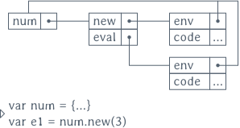
num, mais avant la création de e1.
L’objet num comporte deux fonctions: new pour retourner un objet qui pour
prototype this et contient la valeur n de la constante; et eval pour
retourner cette constante ultérieurement. À la dernière ligne, on appelle
eval sur l’instance e1 de la constante 3, et c’est bien le résultat
obtenu.
Le second terme représente l’addition entre deux constantes. Dans notre
implémentation par objets, un nouveau terme est simplement ajouté en créant un
objet plus avec une fonction eval. L’évaluation de plus appelle
récursivement la fonction eval sur les opérandes de l’addition.
var plus = { new(l, r) { return {__proto__: this, l, r } }, eval() { return this.l.eval() + this.r.eval() } } var e2 = plus.new(num.new(1), num.new(2)) e2.eval() //: 3
6.2 Ajouter des opérations
Maintenant on souhaite ajouter une seconde opération au langage: afficher une expression plutôt que l’évaluer. Dans certains langages objets, ajouter une opération ne serait pas aussi simple que d’ajouter un terme. La tension entre ces deux axes d’extension (ajouter des termes / ajouter des opérations) est au cœur du problème de l’expression. En JavaScript, ajouter une opération se fait simplement:
num.show = function() { return this.n.toString() } plus.show = function() { return this.l.show() + '+' + this.r.show() } plus.new(num.new(1), num.new(2)).show() //: “1+2” e1.show() //: “3” e2.show() //: “1+2”
Les deux premières lignes étendent les objets num et plus avec l’opération
show. Comme l’attestent les lignes suivantes, cette nouvelle opération est
disponible sur de nouvelles instances de termes, mais également sur des
instances créées avant l’ajout de l’opération. Cette flexibilité du langage
est pratique pour étendre un interpréteur sans avoir à le relancer, ni
reconstruire l’AST d’un programme. On peut ainsi étendre un système pendant
qu’il s’exécute, et évaluer un même programme avec différentes version de
l’interpréteur.
En revanche, dans certains cas on peut vouloir préserver les versions
antérieures de num et plus, et créer des dérivés qui possèdent l’opération
show. On ne peut pas donner à ces dérivés les même noms que les objets
originaux, donc on utilise un nouvel objet en tant qu’espace de nom. On ne
souhaite pas non plus coupler prématurément les dérivés de num et plus aux
objets dont ils dérivent; on abstrait donc ces objets parents à l’aide d’une
fonction.
var show = function(base) { var num = {__proto__: base.num, show() { return this.n.toString() }} var plus = {__proto__: base.plus, show() { return.this.l.show() + '+' + this.r.show() }} return {num, plus} } var s = show({num, plus}) e2.show //: undefined s.plus.new(s.num.new(1), s.num.new(2)).show() //: “1+2” s.plus.new(num.new(1), s.num.new(2)).eval() //: 3
Le code émule un système de module: la fonction show prend un objet qui
contient les noms importés en argument et retourne les noms exportés dans un
autre objet. Après la définition de show, une expression déjà construite,
comme e2, ne fait pas référence à l’opération show. Mais une opération
construire à partir des nouveaux termes s.plus et s.num peut être évaluée
avec eval ou affichée avec show.
À la dernière ligne on voit qu’il est même possible de mixer des termes qui
supportent l’opération show et ceux qui ne la supportent pas: le premier
argument de s.plus.new est num.new et le second s.num.new. Puisqu’on
appelle eval sur l’expression retournée, et que tous les termes supportent
cette opération, ça ne pose aucun problème. Mais puisque JavaScript n’est pas
typé statiquement, rien ne nous empêche d’appeler l’opération show sur une
expression de termes mixés, ce qui déclencherait une erreur à l’exécution.
C’est possible d’empêcher l’écriture de telles expressions en rendant les
références vers les num et plus originaux inaccessibles. En utilisant la
construction with de JavaScript sur un objet, toutes les propriétés de cet
objet sont mises dans l’environnement du code délimité par with.
with (show({num,plus})) { plus.new(num.new(1), num.new(2)).show() //: “1+2” }
L’expression construite à l’intérieur du bloc délimité par with fait référence
simplement à num et plus. Mais ici, comme nous somme dans le corps du
with, num et plus font référence aux objets retournés par l’appel de
show. Les objets num et plus originaux sont en revanche inaccessibles car
les noms des dérivés cachent les définitions initiales dans l’environnement. Un
autre aspect de cette construction est que les dérivés de num et plus
existent uniquement dans le corps du with, on peut donc restreindre
l’activation de l’opération show.
Utiliser with ne nous permet de choisir quels noms importer du module show:
toutes les propriétés de l’objet passé en argument à with sont mises dans la
portée du code délimité par with. Si on doit plutôt importer un sous-ensemble
de ces propriétés, alors on peut utiliser une fonction invoquée immédiatement
pour sélectionner les noms qui nous intéressent. Par exemple, pour importer
juste le nouveau terme num:
(function({num}) { num.new(1).show() //: “1” }(show({num,plus}))
Cet exemple montre que le with n’est pas strictement nécessaire, car une
fonction peut le remplacer. Néanmoins, c’est une des rares situations où il est
légitime d’utiliser cette construction controversée. Puisque les exemples sont
plus lisibles avec with qu’avec une fonction, on continuera de l’utiliser dans
les extraits de code qui suivent.
Jusqu’ici, on a vu comment:
- ajouter de nouveaux termes au langage en définissant un objet,
- ajouter de nouvelles opérations,
et cela sans modifier du code écrit au préalable. Essentiellement, on a montré comment résoudre le problème de l’expression comme il s’applique à JavaScript; c’est à dire sans garantie de typage statique.
En passant, on a vu comment ajouter des opérations de deux façons différentes:
soit en modifiant directement le prototype des objets représentants les termes
pour y ajouter les opérations, soit en dérivant les prototypes. Dans la
première solution, tous les objets obéissent aux mêmes opérations. Dans la
seconde solution, on peut mixer des termes qui ne supportent pas toutes les
opérations, ce qui peut causer une erreur à l’exécution. C’est alors qu’on peut
restreindre les termes utilisables dans un bloc de code en utilisant with, ou
une fonction.
6.3 Modifier des opérations
On va maintenant s’intéresser à modifier des opérations. Par exemple, en
changeant le comportement de l’opération eval pour renvoyer le double d’une
constante.
Ça reste simple à exprimer en JavaScript, puisque les fonctions contenues dans
des objets sont comme les autres propriétés: remplaçables à tout moment par
simple assignation. On a utilisé l’assignation pour ajouter show, maintenant
on s’en sert pour écraser la définition de eval et la remplacer par une
nouvelle:
num.eval = function() { return this.n * 2 } num.new(1).eval() //: 2 plus.new(num.new(1), num.new(2)).eval() //: 6
Maintenant, une variante. Plutôt que de retourner le double de n,
l’évaluation d’un num doit retourner le double du résultat de l’évaluation
d’origine. Pour implémenter cette variante, il nous faut pouvoir faire
référence à l’évaluation d’origine dans la nouvelle version de num.eval. On
peut sauvegarder la version d’origine dans une fermeture:
(function(previous_eval) { num.eval = function() { return previous_eval.call(this) * 2 } }(num.eval)) num.new(1).eval() //: 2 plus.new(num.new(1), num.new(2)).eval() //: 6
Il ne reste plus qu’à appeler cette version antérieure en lui passant l’objet
courant comme receveur à l’aide de l’appel call(this).
Mais modifier l’objet num d’origine de cette façon est destructif: la fonction
num.eval d’origine n’est sauvegardée que dans la fermeture, et inaccessible
par la suite. C’est un mauvais choix si on souhaite rendre l’interpréteur
extensible. Dans ce cas, on peut plutôt créer un nouveau terme qui fait
référence à la fonction num.eval pour éviter la duplication de code. Pour
cela, on crée une fonction qui sert de module, paramétrée par l’objet num
d’origine:
var double = function(base) { var num = {__proto__: base.num, eval() { return base.num.eval.call(this) * 2 }} return {num} } with (double({num})) { plus.new(num.new(1), num.new(2)).eval() //: 6 }
Dans le module double, on redéfinit eval à partir de l’évaluation
précédente. Ceci nous permet de composer les modifications d’opérations en
passant une base modifiée comme paramètre au module double. L’exemple qui
suit illustre comment combiner ces extensions avec des appels de with en
cascade:
with (double({num})) { with (double({num})) { with (double({num})) { plus.new(num.new(1), num.new(2)).eval() //: 24 }}}
6.4 Passer de l’état aux opérations
Dans l’instrumentation de Narcissus pour l’évaluation à facettes, on a vu que de
l’état était passé récursivement dans l’interpréteur: le program counter.
Pour simuler cette situation dans notre interpréteur de langage arithmétique, on
va compter le nombre d’appels à eval.
Pour cela, on écrit une fonction state qui dérive des termes num et plus
et incrémente une variable locale lors d’un appel à num.eval ou plus.eval.
L’évaluation est ensuite déléguée aux prototypes de ces termes. La valeur du
compteur est accessible via la fonction getCount.
var state = function(base, count = 0) { var num = {__proto__: base.num, eval() { count++; return base.num.eval.call(this) }} var plus = {__proto__: base.plus, eval() { count++; return base.plus.eval.call(this) }} var getCount = function() { return count } return {num, plus, getCount}} with (state({num,plus})) { getCount() //: 0 plus.new(num.new(1), num.new(2)).eval() //: 3 getCount() //: 3 }
Lors du premier appel à getCount, le compteur est bien à zéro, puisqu’aucune
instruction n’a été évaluée. Le second appel retourne 3, après l’évaluation de
l’expression, ce qui correspond bien aux 3 appels de eval: un pour plus, et
un pour chaque num.
Dans la définition de state, les nouvelles versions de eval sont définies à
partir des termes passés en argument dans l’objet base, ce qui permet encore
une fois la composition d’extensions. Par exemple, on peut ajouter l’extension
double:
with (double({num})) { with (state({num, plus})) { getCount() //: 0 plus.new(num.new(1), num.enw(2)).eval() //: 6 getCount() //: 3 }}
Le résultat de l’évaluation est 6, ce qui indique que la modification double
est bien active. En même temps, le compteur fonctionne également. Notons que
l’ordre d’activation des modules n’importe pas ici:
with (state({num, plus})) { with (double({num})) { ... }}
donnerait le même résultat. La commutativité dépend de la définition des modules, bien entendu. Dans le cas présent, le compteur peut être vu comme un effet de bord qui n’interfère pas avec l’évaluation.
Enfin, on peut ajouter le module show sans avoir à modifier une seule des
définitions précédentes. Ici encore, l’ordre d’activation des modules n’a pas
d’incidence sur le résultat:
with (state({num, plus})) { with (double({num})) { with (show({num, plus})) { getCount() //: 0 var n = plus.new(num.new(1), num.new(2)) n.eval() //: 6 getCount() //: 3 n.show() //: “1+2”
7 Dynamic scoping to build interpreters
From the LASSY’15 paper.
An arithmetic expression language, the example taken by Wadler and Odersky as a base to propose solutions to the expression problem.
7.1 The base datatype
var num = { new: function(n) { return {__proto__: this, n} }, eval: function() { return this.n }};
<<num>> var e1 = num.new(3); print(e1.eval());
<<num>> <<svg>> redirect('img/num.svg') svg(ref(name('e1'), proto(obj(num.new(3)), ref(obj(num), name('num'), {reversed:true}))))
7.2 Adding a data variant
var plus = { new: function(l, r) { return {__proto__: this, l, r,} }, eval: function() { return this.l.eval() + this.r.eval() }};
<<num>> <<plus>> var e2 = plus.new(num.new(1), num.new(2)); print(e2.eval());
7.3 Adding an operation
num.show = function() { return this.n.toString() } plus.show = function() { return this.l.show() + '+' + this.r.show() }
<<num>> <<plus>> var e2 = plus.new(num.new(1), num.new(2)); <<show-invasive>> print(e2.show()); // Dynamic extension, without recreating the expression print(plus.new(num.new(1), num.new(2)).show());
This extension is invasive: it modifies the prototypes of num and
plus. If we want, we can extend safely both objects.
7.4 Adding an operation as a module
var show = function(base) { var num = {__proto__: base.num, show() { return this.n.toString() }}; var plus = {__proto__: base.plus, show() { return this.l.show() + '+' + this.r.show() }}; return {num, plus}; };
<<num>> <<plus>> <<show>> var s = show({num, plus}); print(s.plus.new(s.num.new(1), s.num.new(2)).show());
Works, but can mix languages in unsafe ways:
<<num>> <<plus>> <<show>> var s = show({num, plus}); try { print(s.plus.new(num.new(1), s.num.new(2)).show()); } catch (e) { print(e) }
7.4.1 A use-case for with
<<num>> <<plus>> <<show>> with(show({num, plus})) { print(plus.new(num.new(1), num.new(2)).show()) }
Cannot mix languages anymore because of name shadowing: only one num
and one plus is known in the body of with, and they are both from
the same language.
Inside with, here is what we see:
Outside with, the show module is out of scope:
7.4.2 Selective imports with an IIFE
<<num>> <<plus>> <<show>> (function({num}) { print(num.new(1).show()) }(show({num, plus})))
Of course, here plus is in context, but we would actually put it in
a base module as well.
The two forms have a subtle difference: in a with we can modify the
values of the scope object by assigning to them, but in the IIFE,
assigning to the arguments has no effect outside the function. In our
two examples, we always pass a fresh module so there is no issue.
7.5 Modifying an operation
<<num>> <<plus>> num.eval = function() { return this.n * 2 } print(num.new(1).eval()) print(plus.new(num.new(1), num.new(2)).eval())
Previous version of num.eval is lost: we have no reference to it
anymore.
7.5.1 Non-destructive modification
<<num>> <<plus>> var double = function(num_orig) { var num = {__proto__: num_orig, eval() { return num_orig.eval.call(this) * 2 }} return {num} }
<<double>> with(double(num)) { with(double(num)) { print(plus.new(num.new(1), num.new(2)).eval()) } }
Inside the inner-most with, the objects in scope are the modified
num, and the original plus.
While after the with, num refers to the original, unmodified object.
7.6 Passing state
Add a program counter incremented each time a data variant calls
eval.
var state = function(base, pc = 0) { var num = {__proto__: base.num, eval() { pc++; return base.num.eval.call(this) }} var plus = {__proto__: base.plus, eval() { pc++; return base.plus.eval.call(this) }} var getPC = () => pc return {num, plus, getPC} }
<<num>> <<plus>> <<state>> with (state({num, plus})) { print(getPC()) print(plus.new(num.new(1), num.new(2)).eval()) print(getPC()) }
7.7 All in one
Combine all the extensions without effort.
<<num>> <<plus>> <<show>> <<state>> <<double>> with (state({num,plus})) { with (double(num)) { with (show({num,plus})) { print(getPC()) let n = plus.new(num.new(1), num.new(2)) print(n.eval()) print(getPC()) print(n.show()) }}}
8 TRANSLATE Étendre un interpréteur par manipulation de portée
Chapitre principalement tiré d’un papier rejeté à DLS’15 et à SAC’16 [MdKNS15a].
The whole purpose of this work is to be able to modify the original interpreter in the less possible intrusive way, and this appears to be the case, so I find this work interesting, and since it is self-contained and properly grounded into existing work, it is certainly worthy of publication. – Relecteur DLS n°1
Readers not familiar with evaluation contexts and scoping will find that the paper provides a didactic introduction to the concepts, but familiarised readers will find the paper rather dull. – Relecteur DLS n°2
The pattern is either elegant JavaScript hacking or severe abuse of modularity. I can't tell which! I guess I like it. It illustrates how using language constructs to implement your own module system, rather than having a built-in one, enables it to be modified to allow extensibility. – Relecteur DLS n°3
I like the simplicity of the approach and the clever use of the “with” statement semantics to achieve the dynamic extension of the scope from the outside code. – Relecteur SAC n°1
Nous avons vu dans l’étude de cas que Narcissus n’était pas étendu de façon modulaire. Dans ce chapitre, on propose une façon simple d’étendre cet interpréteur, en se basant uniquement sur les fonctionnalités présentes dans le langage JavaScript.
8.1 Manipuler la portée des variables pour l’instrumentation
L’ingrédient clé de cette section est la notion de portée de variable, et comment manipuler cette portée. Une variable déclarée dans une fonction n’est pas accessible depuis une autre fonction; on dit alors que la portée de cette variable est la fonction dans laquelle elle est définie, ou encore que la variable est locale à la fonction. À l’inverse, une variable déclarée globale sera accessible par tout point d’exécution du programme.
En JavaScript typiquement, on peut considérer que l’ensemble des variables accessibles à un point d’exécution donné est déterminé par un objet qu’on appelle l’environnement. Un environnement associe chaque nom de variable à une valeur (valeur primitive comme un nombre, ou une référence vers un objet), et possède un lien vers un environnement parent. Pour nos besoins, un environnement est donc très similaire à un objet JavaScript.
Les programmes donnés en exemple de cette section sont volontairement triviaux, puisque ce sont les mécanismes de manipulation de l’environnement qui nous intéressent, et non le code métier. À la fin du chapitre, on applique ces mécanismes à un cas concret, Narcissus.
Les exemples de code sont écrits en suivant un sous-ensemble du standard ECMAScript 5.1, que l’on va enrichir avec la possibilité de manipuler des environnements. On ne donnera pas de sémantique de ce langage étendu, mais ces manipulations seront expliquées à l’aide de diagrammes qui parsèment ce chapitre. Les diagrammes reflètent le modèle qu’on cherche à atteindre; ce modèle est inspiré du fonctionnement de JavaScript, mais n’est pas forcément lié à ce langage. Néanmoins, la seconde section montre comment implémenter ce modèle en JavaScript.
8.1.1 La portée dans le motif module
L’interpréteur Narcissus est construit à partir du motif module. Il n’y a pas de système de module en JavaScript, et c’est ce motif simple qui est souvent utilisé à la place. Le motif utilisé par Narcissus se présente ainsi:
1: var Narcissus = (function(){ 2: var globalBase = { ... } 3: 4: function ExecutionContext(type, version) { ... } 5: function getValue(v) { ... } 6: function putValue(v, w) { ... } 7: function evaluate(code) { ... } 8: 9: return { 10: globalBase: globalBase, 11: evaluate: evaluate, 12: ... 13: } 14: }())
Le but de ce motif est de créer un environnement pour toutes les définitions du
module. En JavaScript, une définition faite à la racine d’un fichier (un
déclaration de variable avec var ou une définition de function) créée une
entrée dans l’environnement global. Les entrées du l’environnement global sont
accessibles en lecture et écriture par n’importe quel point du code, et même par
du code d’autres fichiers chargés dynamiquement. Mettre ses définitions dans
l’environnement global a deux désavantages immédiats: 1) n’importe quel code
peut écraser ces définitions, et 2) vos propres définitions peuvent écraser les
définitions faites précédemment par d’autres fichiers, et même écraser des
parties de l’API standard du langage. Écraser une définition ne lève pas
d’erreur ou d’avertissement en JavaScript; donc utiliser l’environnement global
peut facilement casser du code chargé précédemment, et rend votre propre code
fragile pour les mêmes raisons. En outre, les différents moteurs d’exécution de
JavaScript peuvent proposer différentes extensions à l’API standard, ce qui se
traduit par différents noms supplémentaires dans l’environnement global. Pour
toutes ces raisons, les programmeurs JavaScript apprennent rapidement à enrober
leurs définitions dans un environnement séparé. Cet environnement est crée en
enrobant les définitions dans une fonction, ouverte à la ligne 1
et fermée à la ligne 14. Toutes les définitions de variables et
fonctions des lignes 2 à 7 sont ainsi protégées de
tout code extérieur au module, car inaccessibles.
Si le module est là pour fournir une fonctionnalité spécifique, ce qui est le cas de l’interpréteur qui fournit une fonction d’évaluation, alors il doit exposer au moins une définition au monde extérieur, les exporter. Exporter des définitions se fait à travers un objet JavaScript (un simple dictionnaire, qui associe des chaînes de caractères à des valeurs), aux lignes 9 à 13. Cet objet, appelons-le l’objet exporté, est la valeur de retour de la fonction qui créée l’environnement du module.
Enfin, l’objet exporté est assigné à la variable Narcissus (ligne
1), une définition faite à la racine et qui peut être utilisée
par n’importe quel code chargé dynamiquement, pour accéder à la fonctionnalité
proposée par le module. La fonction qui crée l’environnement du module est
appelée juste après sa définition (les () ligne 14 appellent la
fonction), on la nomme donc une fonction immédiatement appelée, ou FIA.
Essayons de comprendre exactement les mécanismes du langage en jeu dans ce module. D’abord, on va construire un exemple minimal de module qui a un comportement observable:
1: var m = (function(){ 2: var a = 1 3: function f(x) { return x + a } 4: function g(x) { return f(x) } 5: return {g: g} 6: }()) 7: 8: m.g(0) //: 1
On a ici un simple module qui retourne une seule fonction, g. Cette fonction
appelle la fonction f et retourne sa valeur, et f à son tour retourne
l’addition de son argument et de a, une variable interne au module. Quand on
appelle m.g(0) à l’extérieur du module, on obtient 1, qui est la valeur de
a.
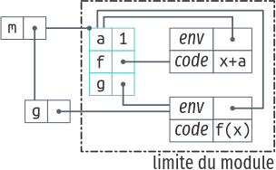
Le diagramme illustre les environnements les objets crées après l’appel de le la
FIA et avant l’appel de la ligne m.g à la ligne 8. Les objets
JavaScript sont représentés par des boîtes qui contiennent des paires. Une
paire est une propriété, avec à gauche le nom de la propriété et à droite sa
valeur. Lorsque la valeur de la pair est une référence, la case contient une
puce d’où part un trait qui finit sur l’objet référencé. Par exemple, on peut
voir l’objet exporté à gauche, qui a une propriété g qui pointe vers la
fonction g.
On représente les environnements avec des boîtes également, et l’environnement parent est relié par le trait qui part de la puce du coin supérieur gauche de l’environnement. Lorsqu’un nom est recherché dans un environnement et que ce nom n’est pas présent dans les propriétés de cet environnement, la recherche continue dans l’environnement parent, et récursivement jusqu’à ce que soit le parent n’existe pas, soit la propriété est trouvée. L’environnement global est en haut à gauche.
On peut expliquer le motif module en regardant le diagramme qui accompagne le
code. Avant d’exécuter la code de l’exemple, l’environnement global est vide.
Lorsque la FIA est appelée, elle crée l’environnement en ▬.
Puisque la FIA est définie à la racine, l’environnement parent est l’objet
global. À l’intérieur de la FIA, trois noms sont définis: une variable a et
deux fonctions f et g (lignes 2 à 4).
Lorsqu’une fonction est définie, un objet fonction est crée qui contient son
code et son environnement lexical. Cet environnement sera utilisé pour exécuter
le corps de la fonction lorsqu’elle sera invoquée. Avant que la FIA ne
retourne, elle crée l’objet exporté (ligne 5) qui contient la
propriété g. Cette propriété réfère la fonction g définie à l’intérieur du
module. Notons qu’il y a deux références à la fonction g à l’exécution.
Enfin, la FIA retourne l’objet exporté, qui devient la valeur de la variable
globale m.
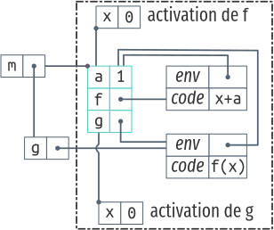
On peut aussi suivre le flot de contrôle suscité par l’appel à la ligne
8 sur ce second diagramme. D’abord, la référence m.g est résolue en
cherchant la propriété m dans l’environnement courant, c’est à dire,
l’environnement global. m existe et pointe vers un objet, donc l’interpréteur
cherche maintenant la propriété g dans cet objet. g existe, et réfère un
objet fonction, on peut donc procéder à l’appel m.g(0). Lorsque la fonction
est appelée dans l’environnement global, l’interpréteur crée un environnement
pour le corps de la fonction qu’on appelle l’objet d’activation de g. Cet
objet associe les noms des paramètres déclarés par la fonction aux valeurs
passées par l’appel; ici, il y a donc une seule entrée x : 0. L’objet
d’activation de g est un environnement, et il a comme environnement parent
l’objet référencé par la propriété env de l’objet fonction de g. Puis, le
contrôle est transféré au corps de la fonction g, qui contient f(x).
L’interpréteur résout les noms f et x en cherchant à travers la chaîne
d’environnement: d’abord dans l’environnement courant (l’objet d’activation de
g). f n’existe pas dans cet objet, mais il existe dans son objet parent.
x existe, et sa valeur est utilisée pour continuer l’exécution de l’appel
f(x). Lorsque f est appelée, l’interpréteur crée un nouvel objet
d’activation pour les paramètres formels, qui a l’environnement de la FIA comme
environnement parent. Après ça, l’interpréteur continue l’exécution avec le
corps de f, x+a. La propriété x se trouve dans l’objet d’activation de
f (0), et la propriété a dans l’environnement parent (1). L’interpréteur
somme les deux valeurs et retourne le résultat.
Le second diagramme sert à illustrer deux points importants sur le motif module:
- La seul façon que du code extérieur au module a d’accéder aux définitions
faites à l’intérieur du module est de passer par l’objet retourné. Dans
l’exemple que l’on a suivi,
gest la seule référence exportée, mais c’est un alias. Remarquons que si on essayait de changer la valeur dem.gpar une autre fonction,m.g = function() { ... }, seule la référencem.gserait affectée, mais la propriétégdans l’environnement de la FIA ferait toujours référence à la fonctiongdéfinie dans le module. Si l’on veut modifie les références internes au module, il faut accéder directement à l’environnement de la FIA. - Toutes les fonctions créées à l’intérieur du module utilisent l’environnement de la FIA comme environnement parent. Autrement dit, les fonctions se referment sur leur environnement de définition (leur environnement lexical), et c’est pourquoi on appelle ces fonctions des fermetures. Si l’on a accès à l’environnement de la FIA, on peut changer le comportement des fonctions internes au module en changeant les références de cet environnement.
On voit alors que l’environnement de la FIA est le point central du module, là où tous les noms utilisés par le module sont recherchés. On voit aussi que le motif module ne permet pas, en l’état, d’accéder à ces noms de l’extérieur du module.
8.1.2 Ouvrir le motif module
On cherche maintenant à accéder à l’environnement de la FIA de l’extérieur du
module; c’est à dire obtenir une référence vers cet environnement. En regardant
les diagrammes précédents, on pourrait penser que m.g.env suffit: il s’agit
bien d’une référence à l’environnement qui nous intéresse depuis l’extérieur du
module. Malheureusement, cette référence est interne au moteur d’exécution du
langage, donc n’est pas accessible par le code exécuté. Mais même si on
modifiait le moteur d’exécution pour rendre cette référence publique, elle n’est
pas fiable. Suivant la construction de g, l’environnement qu’elle retourne
pourrait très bien être différent de celui de la FIA.
1: var m = (function(){ 2: var mkG = function() { 3: return function(x) { return x } 4: } 5: return {g: mkG()} 6: }())
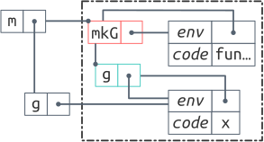
Dans cet exemple, la fonction g exportée par le module ne capture pas
l’environnement de la FIA. À la ligne 5 on exporte la valeur de
retour de la function mkG sous le nom g. La fonction mkG retourne
exactement la même fonction g que dans l’exemple précédent, avec une
différence notable: cette fonction g capture l’environnement de l’appel à
mkG. Le diagramme qui l’accompagne illustre cette différence par l’apparition
d’un nouvel objet d’activation pour mkG qui est référencé comme environnement
de g. On a m.g.env qui pointe vers l’environnement crée par mkG
(▬), et non l’environnement crée par la FIA (▬).
On voit alors que la propriété env d’une fonction n’est pas garantie de
pointer vers l’environnement dont nous avons besoin.
On va maintenant s’éloigner du comportement standard de JavaScript que nous avons suivi jusqu’ici. Supposons que nous pouvons accéder à l’environnement crée par la FIA grâce à une nouvelle propriété E qui serait automatiquement ajoutée sur l’objet exporté par le module. Supposons également que cet environnement se comporte comme un objet JavaScript régulier; on peut lire et changer ses propriétés.
1: var m = (function(){ 2: var a = 1 3: function f(x) { return x + a } 4: function g(x) { return f(x) } 5: return {g: g} 6: }()) 7: 8: m.g(0) //: 1 9: m.E.a = 2 10: m.g(0) //: 2
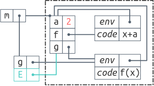
Reprenons le module du début, mais avec l’addition de cette nouvelle propriété
E. Si on exécute m.g(0) à la ligne 8, on obtient toujours 1.
Par contre, cette fois on a accès à l’environnement interne au module via la
propriété m.E. Si on change la valeur de a dans cet environnement (ligne
9), alors l’appel m.g(0) qui suit utilise cette nouvelle valeur, et
c’est pourquoi le même appel donne le résultat différent, 2, à la ligne
10. Le diagramme qui accompagne l’exemple donne une autre façon de
voir ce qui se passe. On y voit la nouvelle propriété E en ▬
sur l’objet exporté et référencé par la propriété globale m. Cette propriété
m.E donne un accès en lecture et écriture sur l’environnement de la FIA.
Ainsi, l’affectation de la ligne 9 modifie la valeur de a dans le
module; dans le diagramme a a la valeur 2 en conséquence.
En ajoutant cette référence directe à l’environnement interne du module, on est
déjà capable de changer les résultats de l’appel m.g, juste en changeant la
valeur de la variable a. Mais on peut aussi changer les fonctions. Si l’on
souhaite changer la fonction f pour qu’elle retourne x + 2 * a au lieu de
x + a, la ligne 4 de l’exemple suivant nous indique comment:
1: var m = (function() { ... }()) 2: 3: m.g(0) //: 1 4: m.E.f = function(x) { return x + 2 * m.E.a } 5: m.g(0) //: 2 6: m.E.a = 2 7: m.g(0) //: 4
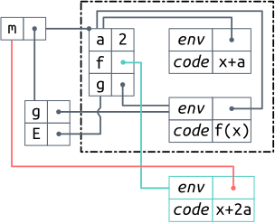
Notons qu’on ne peut pas simplement écrire x + 2 * a. Si on changeait la
définition de f à l’intérieur du module, on pourrait référencer a
directement. Mais ici, on crée une fonction à l’extérieur du module, qui doit
faire référence au a qui n’est déclaré que dans l’environnement du module. Si
on écrit juste a, ce sera une variable libre pour cette fonction. Mais
puisqu’on a une référence à l’environnement du module via m.E, on peut accéder
au a à travers elle.
Le diagramme illustre clairement le problème: la nouvelle fonction f
(▬) n’a pas le même environnement que l’ancienne. Puisqu’elle est
créée en dehors du module, son environnement est l’objet global (lien
▬). Le diagramme nous indique aussi une autre solution: modifier
la propriété env de la fonction qui vient remplacer f. Si l’on modifie
cette propriété pour pointer vers l’environnement de la FIA, la variable a ne
sera recherchée dans le même environnement que pour la fonction f d’origine;
c’est comme si l’on créait une fermeture dans le module, mais définit de
l’extérieur:
m.E.f = function(x) { return x + 2 * a } m.E.f.env = m.E
Les deux approches pour référencer a sont des compromis différents. Utiliser
m.E est plus explicite, et permet à la nouvelle fonction de capturer
l’environnement dans lequel elle est définie. Modifier l’environnement de
définition permet d’écrire le code de la fonction comme si on l’écrivait à
l’intérieur du module, ce qui rend les différences de code plus lisibles.
Dans les deux cas, on peut voir que l’appel m.g(0) qui suit la redéfinition de
f est bien affecté par le changement. Qui plus est, puisque cette nouvelle
version de f fait référence au a du module, on peut changer a (ligne
6) et constater que le dernier appel m.g(0) utilise à la fois la
nouvelle fonction f et la nouvelle valeur de a. On peut donc modifier le
comportement de la fonction g en manipulant les variables et les fonctions
définies à l’intérieur du module, mais en écrivant ces changements de
l’éxtérieur du module. On n’a pas à toucher le code du module pour pouvoir
changer les résultats des appels à m.g.
Mais les changements que l’on a apporté au module sont destructifs. En
changeant la valeur de a, on détruit sa valeur initiale. En changeant la
fonction f aussi. Dans les deux cas, on modifie la valeur directement dans
l’environnement de la FIA. Comme ces redéfinitions sont de simples
affectations, on peut sauvegarder la valeur initiale dans une variable pour
pouvoir les réutiliser après:
var a_orig = m.E.a var f_orig = m.E.f
Il y a une solution plus élégante qui tire partie du mécanisme de résolution des noms de variable dans une chaîne d’environnements.
8.1.3 Disposer les environnements en couches
On a vu que tout environnement a un environnement parent. Si un nom n’est pas
trouvé dans un environnement, la recherche se poursuit dans l’environnement
parent. La recherche continue ainsi jusqu’à ce que le nom soit trouvé, ou que
la chaîne d’environnement s’arrête car le lien vers l’environnement parent est
à null. On peut profiter de ce mécanisme pour construire une façon élégante
de changer les définitions internes au module.
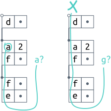
a commence par en bas, et retourne la valeur de la première cellule qui contient une propriété “a”; ici c’est le second objet. La recherche de g échoue. Notons que le f du second objet est caché par le f de l’objet en tête de la chaîne.
Nous allons faire une seconde addition à notre variante de JavaScript. On
suppose que lorsqu’un module est crée, un nouvel environnement vide, appelé
l’environnement frontal est crée également. L’environnement frontal a pour
parent l’environnement de la FIA, mais les fonctions définies à la racine du
module capturent l’environnement frontal plutôt que celui de la FIA. La
propriété m.E est modifiée également pour pointer vers cet environnement
frontal.
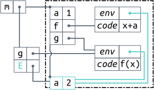
Si l’on reprend exactement le code du module, sans modifications, mais qu’on
l’exécute avec cette modification sémantique, on obtient la situation de la
figure suivante. La redéfinition de a à 2 est enregistrée par
l’environnement frontal (▬), plutôt que l’environnement de la FIA.
Puisque les deux fonctions f et g capturent l’environnement frontal, elles
utilisent bien la valeur redéfinie de a quand elles sont appelées. Le
mécanisme de résolution des noms de variable examine les environnements de bas
en haut, en suivant les liens des coins des objets. On voit donc que n’importe
quelle propriété présente dans l’environnement frontal a priorité sur les
propriétés de l’environnement de la FIA. C’est pourquoi la redéfinition de a
affecte bien l’appel m.g(0) de la même manière que dans les exemples
précédents. Mais on a maintenant la possibilité d’annuler cette redéfinition
en supprimant la propriété m.E.a de l’environnement frontal. Puisque
l’environnement frontal ne contient que notre redéfinition, la valeur originale
n’est jamais altérée. Lorsque l’on supprime m.E.a, on vide l’environnement
frontal, et l’appel final m.g(0) va trouver la propriété a dans
l’environnement de la FIA, où la valeur est restée à 1.
1: var m = (function() { ... }()) 2: 3: m.g(0) //: 1 4: m.E.a = 2 5: m.g(0) //: 2 6: delete m.E.a 7: m.g(0) //: 1
Avec cet environnement frontal, on peut surcharger et masquer les définitions du module sans toucher au code à l’intérieur du module. Dans la pratique, on ne se contenterait pas de changer une seule valeur mais plusieurs, et on voudrait pouvoir les injecter dans le module et les supprimer d’un coup. En outre, si on souhaite expérimenter différents ensembles de changements, on voudrait pouvoir activer un premier ensemble, puis un second, puis désactiver le premier. L’environnement frontal n’est pas suffisant pour ce scénario, mais on peut en utiliser plusieurs.
Pour cela, il faut faire une dernière addition à la sémantique du langage: on
suppose que l’on peut récupérer et modifier le parent de n’importe quel
environnement à travers la propriété parent. Avec cette propriété, on peut
étendre la chaîne d’environnements utilisée par les fonctions définies dans le
module avec un nombre quelconque d’environnements. Puisque tout environnement a
un parent, et que l’on a une référence vers l’environnement par lequel débute la
résolution de noms (m.E), la chaîne d’environnement a une structure similaire
à une liste chaînée, où l’environnement frontal serait la tête de la liste. Et
puisqu’on peut modifier le parent d’un environnement, on peut insérer de
nouveaux environnements à n’importe quel point dans cette chaîne.
Le plus utile pour nos besoins est d’insérer un environnement juste après
l’environnement frontal. Supposons que l’on dispose d’une fonction
pushEnv(e, chain) qui insère l’environnement e dans la chaîne juste après
l’environnement frontal; et une fonction removeEnv(e, chain) qui retire
l’environnement de la chaîne (quelque soit sa position). Alors on peut écrire:
1: var m = (function() { ... }()) 2: 3: m.g(0) //: 1 4: 5: var e1 = { a:2, f: function(x) { return x + 2 * m.E.a }} 6: pushEnv(e1, m.E) 7: m.g(0) //: 4 8: 9: var e2 = { f: function(x) { return -m.E.a }} 10: pushEnv(e2, m.E) 11: m.g(0) //: -2 12: 13: removeEnv(e1, m.E) 14: m.g(0) //: -1
Sans changer le module, on ajoute toutes les redéfinitions de e1 en appelant
pushEnv (ligne 6). On change à nouveau le comportement de f dans
l’environnement e2 qu’on insère dans le module grâce au second appel à
pushEnv. On voit que l’appel m.g(0) qui suit utilise la fonction f de
e2, puisque le résultat est négatif, et la valeur de a de l’environnement
e1, puisque la valeur est -2. Puis, on retire les changements de e1 grâce
à removeEnv. L’appel m.g(0) utilise encore le f de e2, mais la valeur
de a est la valeur initiale du module, 1.
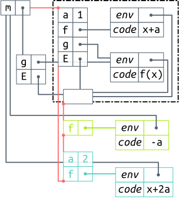
Le diagramme illustre la chaîne d’environnements quand l’exécution atteint la
ligne 11. L’environnement frontal (vide) a pour parent l’environnement
e2 (▬), qui lui a comme parent e1 (▬), qui
délègue à l’environnement de la FIA. Chaque ensemble de changements est isolé
des autres, ce qui permet de les supprimer sans toucher aux autres, et tous sont
ordonnés linéairement (le fil ▬), comme les couches d’un gâteau.
Ainsi, la priorité de redéfinition est toujours déterministe: les définitions
qui se trouvent le plus en tête (plus proches de l’environnement frontal) ont
toujours priorité sur celles des environnements du bout de la chaîne.
On a donc une façon de modifier le comportement d’un module sans toucher au code qui le définit. Les changements sont écrits à l’extérieur du module, et peuvent même être déclarées dans des fichiers séparés. De plus, on peut dynamiquement activer ou désactiver des ensembles de changements d’un seul coup. Mais pour l’instant rien de ce qu’on a définit n’est exécutable. Il s’agissait d’illustrer le modèle de fonctionnement dans le cadre d’un langage inspiré de JavaScript. Ce faisant, on a dévié de JavaScript en supposant:
- que les environnements se comportent comme des objets JavaScript standards, comme des dictionnaires auxquels on peut ajouter des propriétés, récupérer leur valeur;
- qu’un environnement frontal est crée lors d’un appel à une fonction immédiatement appelée (FIA) sur laquelle repose le motif module, et qu’une référence vers cet environnement est retournée par la FIA;
- que l’on pouvait obtenir et modifier le parent de n’importe quel environnement.
Aucune de ces suppositions n’est valide en JavaScript. Cependant, il y a moyen de réaliser ce modèle en utilisant des constructions JavaScript standard. C’est l’objet de la section suivante.
8.2 Ouvrir le motif module en JavaScript
Pour réaliser le modèle illustré dans la section précédente, on peut tirer
partie de deux ingrédients de JavaScript que sont with et la délégation par
prototype. On va utiliser with pour créer un environnement manipulable, puis
répliquer les exemples de composition d’environnement par couches grâce aux
prototypes.
L’expression with est grammaticalement similaire à un if. Elle prend une
expression entre parenthèses, qui est évaluée pour constituer son objet de
liaison, et un bloc de code entre accolades. Voici un exemple d’utilisation de
with:
1: var o = { a: 42 } 2: with (o) { 3: function f() { return a } 4: } 5: f() //: 42
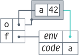
with entoure l’objet de liaison. Notons que les deux sont distincts: o pointe vers l’objet de liaison, tandis que f.env pointe vers l’environnement.
On définit une fonction f dans le corps de with à la ligne 3. La
fonction va simplement retourner la valeur de la variable a. Notons que a
est libre dans ce contexte, mais pourtant l’appel de f à la ligne 5
retourne 42. Quand f est définie, elle capture l’environnement lexical, et il
se trouve que with crée un environnement lexical pour le code qu’il entoure;
cet environnement est basé sur l’objet de liaison, o. Puisque o associe le
nom a à 42, l’appel de f va trouver cette association et renvoyer 42.
En voyant cet exemple, on peut se demander si l’effet de with sur le bloc de
code qu’il entoure n’est pas simplement de la liaison dynamique. Dans un
langage qui permet la liaison dynamique des fonctions, les variables libres sont
résolues en parcourant les environnements de la pile d’appel, plutôt que de
parcourir l’environnement lexical. Or, ce n’est pas ce qui se passe ici. Dans
l’exemple ci-dessous, on crée la fonction f à la racine, puis on l’appelle à
l’intérieur d’un with, de façon à ce que with crée un environnement sur la
pile lorsque f est appelée. L’appel échoue, car la résolution de noms ne
trouve aucune occurrence de a. La fonction f n’est donc pas dynamiquement
liée si elle est appelée dans un with.
function f() { return a } var o = { a: 42 } with (o) { f() } //: ReferenceError: a is undefined
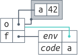
Ce qui se passe dans le premier exemple, c’est que lorsque la fonction f est
définie dans with elle capture l’environnement lexical crée par with; f
suit donc une liaison statique. Mais l’environnement généré par with est
particulier car la résolution de noms dans cet environnement est déléguée à
l’objet de liaison. Et l’objet de liaison peut être dynamique: on peut y
ajouter ou y supprimer des propriétés. Donc, on dira que la fonction f
capture statiquement un environnement dynamique. L’environnement ne peut être
capturé qu’à la définition de f, mais cet environnement peut être modifié par
la suite. Les deux diagrammes illustrent clairement la différence de
comportement: dans le premier, f.env pointe vers l’environnement crée par
with, et dans le second cas, f.env pointe vers l’environnement global; cette
propriété f.env ne peut pas être changée dynamiquement, donc l’appel de f
dans with n’a aucun effet. Ce comportement des fonctions définies à
l’intérieur d’un with est exactement ce qu’il nous faut pour ouvrir le motif
module.
Dans le code qui suit, on utilise with pour créer l’environnement capturé par
f et g, et obtenir une référence vers cet environnement. On commence par
créer un objet vide E ligne 2. Puis on passe cet objet à with,
pour qu’il devienne son objet de liaison. Dans le corps de with, on déclare
la variable a et les deux fonctions g exactement comme dans le module qui
nous intéressait dans la section précédente. Ligne 7 en revanche on
retourne une propriété supplémentaire: l’objet E. Le premier appel m.g(0)
retourne encore 1, indiquant que g appelle bien f, qui fait bien référence
au a défini dans le module.
1: var m = (function(){ 2: var E = Object.create(null) 3: with (E) { 4: var a = 1 5: function f(x) { return x + a } 6: function g(x) { return f(x) } 7: return { g: g, E: E } 8: } 9: }()) 10: 11: m.g(0) //: 1 12: 13: m.E.a = 2 14: m.g(0) //: 2
Comme on a une référence vers l’objet de liaison E, on redéfinit la valeur de
a ligne 13. L’appel m.g(0) qui suit retourne 2, ce qui montre que la
fonction f va bien prendre la valeur de a dans l’objet E.
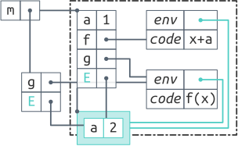
On peut se demander pourquoi la valeur de m.E.a est préférée à la déclaration
de a, alors que cette dernière est plus proche lexicalement de la fonction
f que le début du with. On a vu que with crée un environnement pour le
code qu’il entoure, mais cet environnement ne capture pas les déclarations.
Les déclarations de variables et fonctions sont capturées par l’environnement
crée par la fonction qui enrobe le module—la FIA. Le diagramme illustre la
situation. L’environnement crée par with est mis en évidence; il contient
l’objet de liaison. Dans l’objet de liaison il n’y a que la propriété a
associée à 2. Les déclarations de a, f et g faites dans le module
n’existent que dans l’environnement crée par la FIA. On voit par contre que f
et g capturent l’environnement crée par with, puisque leur propriété env
pointe dessus. C’est pourquoi la valeur de m.E.a est trouvée en premier par
la résolution de nom lors de l’exécution de f.
D’après le diagramme, il est clair que si l’objet de liaison est vide, le module
se comportera exactement comme si with n’était pas utilisé, puisque
l’environnement de with a pour parent l’environnement de la FIA. La seule
différence observable serait un léger surcoût dû à l’objet supplémentaire sur la
chaîne de résolution de noms.
Une différence cruciale entre le modèle annoncé dans la section précédente et ce
qu’on obtient ici, c’est qu’ci l’environnement crée par with et l’objet de
liaison sont deux objets distincts, alors que dans le modèle il ne sont qu’un
seul et même objet. En particulier, la propriété m.E pointe vers l’objet de
liaison, tandis que les propriétés env des fonctions f et g pointent vers
l’environnement. La conséquence de cette distinction est qu’on si peut se
servir de m.env pour surcharger les définitions faites dans le module, on ne
peut pas s’en servir pour accéder aux valeurs de ces définitions de
l’extérieur du module. Par exemple, m.E.f ne fait pas référence au f de
l’environnement de la FIA; m.E.f n’est pas défini.
Pour remédier à cette déviation du modèle, on peut créer un objet parent à E.
Cet objet contiendra une référence pour chaque déclaration faite dans le module.
On assigne ensuite cet objet parent au prototype de l’objet de liaison, E.
JavaScript est un objet à prototypes: chaque objet a un lien de prototype vers
un autre objet, ou vers null. Lorsque la résolution de nom cherche la
propriété p sur un objet qui ne la contient pas, la recherche continue sur le
prototype, et s’arrête si le prototype est nul. La recherche de nom dans la
chaîne de prototype d’un objet se comporte donc exactement comme la résolution
de noms de variable dans les environnements. La solution se présente donc
ainsi:
1: var m = (function(){ 2: var E = Object.create(null) 3: with (E) { 4: var a = 1 5: function f(x) { return x + a } 6: function g(x) { return f(x) } 7: 8: Object.setPrototypeOf(E, 9: { a: a, f: f, g: g } 10: ) 11: return { g: g, E: E } 12: } 13: }()) 14: 15: m.g(0) //: 1 16: 17: m.E.f = function(x) { return x + 2 * m.E.a } 18: m.g(0) //: 2 19: 20: m.E.a = 2 21: m.g(0) //: 4 22: 23: delete m.E.f 24: m.g(0) //: 2 25: 26: delete m.E.a 27: m.g(0) //: 1
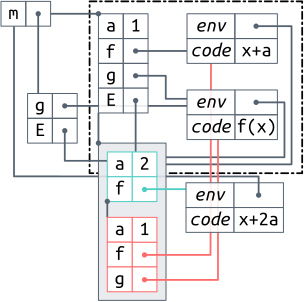
with.
On crée un objet parent ligne 9 qui contient une référence pour
chaque déclaration du module, et on assigne cet objet au prototype de E.
Grâce à cet objet, on peut faire référence à a à travers m.E.a lors de la
redéfinition de f ligne 17. Puis, lorsqu’on redéfinit a à travers
m.E.a, cette nouvelle valeur a priorité sur la valeur initiale du module, et
est bien capturée par la nouvelle fonction f. Tout cela est illustré par le
diagramme. La propriété m.E pointe sur l’objet de liaison (▬),
qui contient les redéfinitions de a et f. Si l’objet de liaison est vide,
alors on recherche les propriétés sur l’objet parent (▬) avant de
les chercher dans l’environnement de la FIA. Ainsi, lorsque l’on supprime les
propriétés a et f, le dernier appel m.g(0) retourne la même valeur que le
premier, avant les modifications.
On peut se demander si l’objet parent n’apporte que de la redondance de code. Principalement oui. Mais cette redondance nous apporte aussi une flexibilité supplémentaire par rapport au modèle. Seules les propriétés mentionnées dans l’objet parent seront accessibles de l’extérieur du module, ce qui nous permet de contrôler quelles propriétés sont exposées. Mais surtout, les valeurs exposées par l’objet parent ne sont pas forcément celles de l’environnement de la FIA, ce qui permet encore une fois de contrôler ce que le code externe au module peut voir.
Enfin, puisque la chaîne de prototype d’un objet JavaScript peut être vue comme
une liste chaînée, on peut directement implémenter l’idée des couches
d’environnements du modèle de la section précédente. Dans le code suivant, on
définit la fonction pushEnv(e, head) qui insère l’objet e comme parent de
head; la fonction removeEnv(e, head) retire l’objet e de la chaîne,
quelque soit sa position. Si on reprend le module m définit dans l’exemple
précédent, on peut maintenant utiliser des objets JavaScript pour grouper les
modifications que l’on souhaite apporter au module (e1 et e2), et utiliser
pushEnv et removeEnv pour activer ou désactiver ces changements
dynamiquement.
var m = (function(){ ... }()) function pushEnv(e, head) { Object.setPrototypeOf(e, Object.getPrototypeOf(head)) Object.setPrototypeOf(head, e) } function removeEnv(e, head) { while (Object.getPrototypeOf(head) != null && Object.getPrototypeOf(head) !== e) head = Object.getPrototypeOf(head) if (Object.getPrototypeOf(head) === e) { Object.setPrototypeOf(head, Object.getPrototypeOf(e)) Object.setPrototypeOf(e, null) } } m.g(0) //: 1 var e1 = { a: 2, f: function(x) { return x + 2 * m.env.a }} pushEnv(e1, m.env) m.g(0) //: 4 var e2 = { f: function() { return -m.env.a }} pushEnv(e2, m.env) m.g(0) //: -2 removeEnv(e1, m.env) m.g(0) //: -1
Donc with permet de réaliser l’idée de l’environnement frontal, et la chaîne
de prototype de l’objet de liaison de with permet de disposer les
environnements en couches. Et grâce à ces mécanismes, on parvient à ouvrir le
motif module; on peut changer les définitions internes au module par du code
écrit à l’extérieur. Mais les exemples que l’on a utilisés sont restés très
simples. Il serait plus intéressant de voir comment on peut ouvrir un module
plus complexe, et quels sont les problèmes qui apparaissent. Dans la section
suivante, on applique ces mécanismes à Narcissus.
8.3 Étendre Narcissus par manipulation de portée
Dans cette section, on reprend une version non instrumentée de Narcissus, à
laquelle on va ajouter plusieurs analyses en essayant de minimiser les
changements de code à l’intérieur du module de Narcissus. Pour ouvrir le module
de Narcissus, il suffit d’ajouter with autour du corps du code ainsi que
l’objet parent:
Narcissus.interpreter = (function() {
+ var _env = Object.create(null);
+ with (_env) {
...
// 1500 lines later
...
+ var _parent = {
+ globalBase: globalBase,
+ execute: execute,
+ getValue: getValue,
+ ...
+ };
+ Object.setPrototypeOf(_env, _parent);
return {
evaluate: evaluate,
...
+ _env: _env,
};
+ }
}());
Les changements n’affectent que le début et la fin du fichier. Puisque le
module exporte déjà des propriétés dans le return, on y ajoute juste la
propriété _env. Les analyses qui nous intéressent nécessitent également
d’exposer des propriétés internes au module à travers l’objet _parent (nous en
avons utilisé 14 en tout dans notre version instrumentée de Narcissus). Notons
au passage que les propriétés _env et _parent sont préfixées d’un tiret bas
pour éviter une collision de nom avec les variables déclarées à la racine par
Narcissus. Mais ces lignes sont les seules modifications nécessaires à apporter
au module pour pouvoir commencer l’instrumentation.
8.3.1 Ajouter l’analyse d’évaluation multi-facettes
On a vu dans l’étude de cas que l’implémentation de l’évaluation multi-facettes
sur Narcissus pouvait être répartie en trois catégories de changements. La
première catégorie était l’ajout du program counter par extension de l’objet
ExecutionContext et d’arguments supplémentaires à la fonction getValue. On
peut maintenant effectuer ce changement de l’extérieur du module:
1: var N = Narcissus.interpreter._env 2: 3: var EC = N.ExecutionContext 4: function ExecutionContext(type, version) { 5: EC.call(this, type, version) 6: 7: this.pc = getPC() || new ProgramCounter() 8: } 9: 10: ExecutionContext.prototype = Object.create(EC.prototype) 11: 12: function getPC() { 13: var x = EC.current 14: return x && x.pc 15: } 16: 17: var GV = N.getValue 18: function getValue(v, pc) { 19: pc = pc || getPC() 20: 21: if (v instanceof FacetedValue) 22: return derefFacetedValue(v, pc) 23: 24: return GV(v) 25: } 26: 27: N.ExecutionContext = ExecutionContext 28: N.getValue = getValue
On commence par définir un nom raccourci ligne 1 pour l’environnement
exporté par Narcissus. Puis on modifie le constructeur ExecutionContext après
avoir sauvegardé l’original ligne 3, pour pouvoir y faire référence dans
la nouveau constructeur, mais aussi dans getPC. Le nouveau constructeur
appelle le constructeur original (équivalent à un appel à super en Java) et
ajoute la valeur courante du program counter comme propriété pc. Les autres
propriétés de l’objet ExecutionContext sont héritées grâce à l’idiome
JavaScript ligne 10. Ligne 18, on définit une nouvelle
fonction getValue qui va remplacer et appeler l’originale, mais qui récupère
le program counter courant soit donné en argument, soit par un appel à getPC
si l’argument n’est pas renseigné. De cette façon, les appels à getValue dans
l’interpréteur ne nécessitent pas de modification pour l’argument
supplémentaire, mais le code de l’instrumentation peut appeler getValue en
passant une valeur pour pc. Enfin, on installe ces modifications dans
l’environnement frontal de l’interpréteur (lignes 27 et
28).
La seconde catégorie de changements concernait l’extension de la fonction
execute pour chaque nœud de l’AST, dans le but de scinder l’évaluation des
valeurs à facettes en appelant la nouvelle fonction evaluateEach sur chacune
des facettes. La fonction execute est essentiellement un long switch (600
lignes) avec un case pour chaque type de nœud de l’AST. On redéfinit la
fonction execute en suivant la même structure.
29: var EX = N.execute 30: function execute(n.x) { 31: switch (n.type) { 32: case IF: 33: var cond = N.getValue(N.execute(n.condition, x), x.pc) 34: evaluateEach(cond, function(v, x) { 35: if (v) N.execute(n.thenPart, x) 36: else if (n.elsePart) N.execute(n.elsePart, x) 37: }, x) 38: break 39: 40: ... // other instrumented cases 41: 42: default: var v = EX(n, x) 43: } 44: return v 45: } 46: 47: N.execute = execute
L’évaluation multi-facettes ne redéfinit le comportement que pour quelques types
de nœuds de l’AST, donc on délègue à la fonction initiale dans le default
ligne 42. En déclarant un case IF, on redéfinit le traitement des
nœuds de type IF dans l’AST. Notons qu’ici on appelle récursivement
N.execute, et que dans le code de la fonction d’origine, l’appel récursif est
noté execute, mais après la ligne 47, les deux noms pointeront vers
la même fonction: celle que l’on vient de définir.
Enfin, la troisième catégorie de changements regroupait les ajouts de propriétés
à l’objet globalBase. Il s’agit donc de définir un nouvel objet globalBase
qui hérite de l’objet original, mais auquel on rajoute les propriétés
supplémentaires:
48: var globalBase = Object.create(N.globalBase) 49: 50: globalBase.isFacetedValue = function(v) { 51: return (v instanceof FacetedValue) 52: } 53: 54: ... // other properties 55: 56: N.globalBase = globalBase
Mais ce n’est pas suffisant. Dans le module de Narcissus, l’objet globalBase
est utilisé juste après sa création pour peupler l’objet global du code client.
Ce processus prend place dans le module, avant que les propriétés exportées ne
soient retournées. Hors, la façon que l’on a d’étendre le module ne nous permet
de modifier que des valeurs après l’export des propriétés. Il nous faut donc
modifier le code du module pour pouvoir effectuer ce changement. Il suffit de
fournir une fonction populateEnvironment qui construit l’objet global à partir
de globalBase, et qui devra être appelée après la construction du module. Ça
nous laisse maintenant la possibilité d’étendre l’objet globalBase. Cette
modification au module consiste à déplacer les 30 instructions qui peuplaient
l’objet global dans la fonction populateEnvironment, et à rajouter cette
nouvelle fonction dans les propriétés exportées.
Un dernier changement du module a été nécessaire, plus léger cette fois. Une fonction cruciale, la fonction qui est utilisée par le code client pour déclencher un appel de fonction, était crée de manière anonyme dans le module. Vu qu’elle n’avait pas de nom, il n’y avait aucun moyen de la redéfinir de l’extérieur du module; le motif “module ouvert” ne peut surcharger que des identifiants nommés. Pour pouvoir redéfinir cette fonction, nous lui avons simplement donné un nom.
8.3.2 Évaluation
L’instrumentation de Narcissus pour l’évaluation multi-facettes que l’on a réalisé consiste en 440 lignes de code, dans un seul fichier séparé de l’interpréteur; l’instrumentation faite par Austin et Flanagan comportait 640 lignes mêlées au code de l’interpréteur. Notre version factorise quelques changements, ce qui explique la différence. L’intérêt d’avoir tous les changements dans un seul fichier à part c’est qu’on peut les étudier et avoir une idée de comment l’évaluation multi-facettes vient modifier l’interpréteur. On peut par exemple comparer le code de l’instrumentation avec la sémantique de référence de [AF12].
Pour ajouter l’évaluation multi-facettes, on a ajouté 19 lignes à Narcissus pour
ouvrir le module avec with, et changé 32 lignes pour ajouter la fonction
populateEnvironment et nommer la fonction anonyme. En tout 51 lignes sur 1300
sont touchées, à comparer avec les 640 lignes de l’instrumentation d’Austin et
Flanagan. Mais même si les changements sont restreints, il est important de
noter qu’il était tout de même nécessaire de modifier le code de Narcissus. Les
changements, même mineurs, ont nécessité d’inspecter et de comprendre les
différentes étapes de construction de l’interpréteur.
En plus de l’évaluation multi-facettes, on a défini trois autres analyses sur l’interpréteur: une analyse de flot d’information, FlowR, décrite par Pasquier, Bacon et Shand [PBS], une simple analyse de trace, et une analyse qui extrait les objets et les environnements alloués par l’interpréteur, afin de générer les diagrammes de cette section. On a pu écrire ces trois analyses ont dans des fichiers séparés, sans avoir besoin de modifier le code de l’interpréteur.
L’analyse de trace écrit sur la sortie standard le type de chaque nœud de l’AST, dans l’ordre de leur exécution par l’interpréteur. C’est une information utile pour déboguer des exemples, et pour comprendre le fonctionnement de l’interpréteur. En utilisant la technique de disposition en couches de la section ??, on peut activer plusieurs analyses à l’exécution avec des options de lancement. Par exemple:
./njs -l flowr -l trace -f tests/flowr.js
lance l’interpréteur, active l’analyse FlowR, et active aussi la trace en même temps avant d’exécuter le code du fichier “example.js”. Un extrait de la sortie montre que les deux analyses fonctionnent correctement:
BLOCK
SEMICOLON
CALL
IDENTIFIER
LIST
IDENTIFIER
Illegal flow: undefined to [object Object]
FUNCTION
SEMICOLON
CALL
IDENTIFIER
LIST
SCRIPT
Illegal flow: undefined to [object Object]
Les Illegal flow sont produits par FlowR, et les autres par la trace. L’union
des deux sorties permet de localiser précisément les endroits du code où les
flots non autorisés se produisent, sans avoir à rajouter du code spécifique à la
trace dans l’analyse FlowR.
La trace ne modifie qu’une seule fonction de l’interpréteur, et cette modification est compatible avec les modifications apportées par FlowR. Intuitivement, on voit bien que la trace est orthogonale au contrôle d’accès effectué par FlowR. C’est pourquoi les deux analyses peuvent être activées en même temps sans que l’on ait besoin de rajouter du code spécifique à l’intégration de deux. Ce n’est pas le cas pour l’évaluation multi-facettes et FlowR. L’évaluation multi-facettes modifie les valeurs manipulées par l’interpréteur, et FlowR rajoute des labels sur ces valeurs. Du coup, les deux analyses touchent à la représentation des valeurs dans l’interpréteur. En regardant leur spécification, on ne peut pas dire clairement comment les deux analyses doivent se combiner, ni ce que le résultat d’une évaluation devrait produire. Il faut donc retenir que la disposition en couches permet de facilement activer plusieurs modifications de l’interpréteur en même temps, mais que le résultat n’a de sens que si ces modifications n’interfèrent pas entre elles.
Pour s’assurer qu’appliquer with pour ouvrir Narcissus n’a pas changé son
fonctionnement, nous avons comparé le comportement de la version d’origine et la
version avec with sur la suite de tests test262. Cette suite contient plus
de 11000 tests de conformité de la spécification ECMAScript 5.1. Nous avons
utilisé un sous-ensemble de cette suite, utilisé pour tester le moteur
JavaScript SpiderMonkey de Mozilla. Sur environ 3300 tests validés par
SpiderMonkey, Narcissus en passe 2600. Nous avons donc lancé la version
originale de Narcissus et la version avec with sur ces 3300 tests. Pour la
version avec with, aucune analyse n’était activée: l‘objet de liaison restait
donc vide. Pour chaque test, notre script comparait la sortie des deux
versions; si la sortie était identique, le test était passé, sinon, le test
était échoué et le script enregistrait le test qui avait échoué. Au final, les
deux versions ont un comportement strictement identique sur ce jeu de tests.
Nous avons aussi pu comparer Narcissus avec et sans l’évaluation multi-facettes sur ce même jeu de tests. Lorsque le program counter de l’évaluation multi-facettes est vide, l’interpréteur se comporte de façon identique sur les tests considérés. Un résultat démontré par Austin et Flanagan sur la sémantique de l’évaluation, basée sur un lambda-calcul, mais pas sur l’implémentation qui concerne le langage JavaScript dans toute sa largeur.
En exécutant les tests, nous avons aussi mesuré le temps d’exécution de chaque version. Pour chaque version, le jeu de test a été lancé dix fois, sur un seul thread, toujours sur la même machine. Le tableau donne la moyenne arithmétique du temps pour une exécution complète sur ces dix lancers.
| Interpréteur | Temps moyen (secondes) |
|---|---|
| SpiderMonkey | 89 (± 1) |
| Narcissus original | 1040 (± 1) |
Narcissus avec with |
1218 (± 10) |
| Narcissus et multi-facettes (Austin et Flanagan) | 1215 (± 2) |
Narcissus et multi-facettes avec with |
1301 (± 1) |
L’écart type est à moins de 1% pour toutes les versions de Narcissus, donc les
temps moyens sont représentatifs. Si on compare l’interpréteur non instrumenté
avec la version où on ajoute juste with autour du code du module, la seconde
version prend 17% de temps supplémentaire pour exécuter le jeu de tests. Ce
surcoût est probablement dû à l’utilisation de with, qui rajoute un
environnement dans la chaîne de résolution des noms. Non seulement ça fait un
objet de plus à parcourir lors de la résolution de n’importe quel nom du
module, mais en plus les fonctions qui ont des variables libres ne peuvent pas
être optimisées par le compilateur. Là où, sans with, un accès à une variable
libre peut être résolu statiquement en regardant dans l’environnement lexical de
la fonction, avec with la variable peut changer dynamiquement, donc le moteur
d’exécution doit toujours résoudre le nom dynamiquement; aucun raccourci n’est
possible.
Si on compare l’interpréteur instrumenté par Austin et Flanagan pour
l’évaluation multi-facettes, le surcoût de temps n’est plus que 7%. Notons
cependant que notre implémentation de l’évaluation multi-facettes factorise
quelques changements par rapport à l’implémentation de base, on ne mesure pas
seulement l’utilisation de with.
De toutes façons, comme l’indique le tableau, exécuter n’importe quel exemple avec Narcissus est d’un ordre de magnitude plus lent qu’avec SpiderMonkey directement. C’est évidemment dû au fait que Narcissus est écrit en JavaScript. Mais pour nos besoins, les plus gros exemples qu’on a voulu exécuter avec les différentes analyses qu’on a ajouté à Narcissus n’ont pris que quelques secondes. À cette échelle, une différence de 17% est insignifiante.
Le gain de temps en écriture de code et en clarté de l’instrumentation est,
quant à lui, tangible. Avant de pouvoir exécuter la suite test262 avec
Narcissus, il a fallu corriger quelques erreurs dans son interprétation du code
JavaScript et compléter sa couverture du standard. En corrigeant ces erreurs
dans l’interpréteur d’origine, il a fallu dupliquer les correctifs dans la
version instrumentée par Austin et Flanagan, mais pas dans notre
instrumentation. Notre version de l’évaluation multi-facettes ne duplique pas
le code de l’interpréteur, donc une fois le correctif appliqué à l’interpréteur
de base, l’évaluation multi-facettes bénéficiait du correctif automatiquement.
Cette anecdote illustre l’intérêt d’une décomposition qui cherche à minimiser la
duplication de code.
8.4 Discussion
L’idée principale de ce chapitre est que la manipulation de la portée des variables d’un module est suffisante pour changer totalement le comportement de ce module. Et si on peut changer intégralement le comportement du module, on peut nécessairement en changer une partie; c’est ce qui nous a permis de modifier Narcissus pour accepter plusieurs analyses dynamiquement.
On peut voir la propriété env qui expose l’environnement manipulable du module
comme une interface spéciale, une interface d’instrumentation, qu’on peut
rapprocher du concept d’”implémentation ouverte” de Rao. Cette interface
spéciale expose tous les noms de l’interpréteur, et confère donc aux
programmeurs non seulement le pouvoir de modifier le code du module, mais
également de casser ce code en créant des situations non anticipées par le
créateur du module. Comme on a pu changer la fonction execute pour étendre sa
fonctionnalité, on aurait pu tout aussi bien fournir une version qui lance une
exception. Pas très utile dans notre cas, mais ça montre qu’il est très facile
de rompre la fonctionnalité offerte par le module dès lors que cette interface
spéciale est offerte.
On a alors une situation quelque peu paradoxale où le programmeur soucieux de l’intégrité de son code le ficelle dans un module, mais ce faisant empêche tout autre programmeur d’étendre son code dynamiquement. Le code a beau utiliser un module, il ne peut être étendu; il n’est donc pas modulaire par rapport aux changements que l’on souhaite y apporter, car il faut modifier le code source à l’intérieur du module pour effectuer ces changements. Et à l’inverse, la solution proposée ici casse la protection offerte par le module, mais ce faisant permet d’étendre le code en écrivant les changements et fonctionnalités supplémentaires dans des fichiers distincts; une situation que l’on peut qualifier de modulaire.
La version originale du module, et notre version modifiable dynamiquement sont deux points opposés sur un même axe. D’un côté, un programme prévisible, sur lequel il est facile de raisonner statiquement, car son comportement ne peut être modifié dynamiquement; et de l’autre, un programme ouvert, dont le comportement peut changer à tout moment de l’exécution, mais qui offre une grande flexibilité. Les propriétés offertes par l’un et l’autre sont toutes désirables: a priori, on préférerait avoir un programme prévisible et reconfigurable à souhait. Mais il est facile de voir que les deux buts ne sont pas réconciliables.
8.5 Discussion
Comparison to putting all bindings in global scope, rather than using this pattern:
- global scope needs manual namespacing (i.e., prefixing bindings).
- overriding is easy, canceling an override needs to manually keep track of the overridden.
- open scope maintains an unalterable copy of the original bindings in module scope.
- in Narcissus, global scope would require a tedious rewriting. Open scope only requires additions at the top and bottom of the file (local changes, easily removable).
Why not refactor the interpreter and leave holes, inversion of control style?
- cleaner (more common), no need for weird
withtricks - allow for describing the instrumentation in its own file
Yes but:
- need to refactor the interpreter heavily
- indirection of control flow complexifies clarity of interpreter code
- can’t design an API for unknown requirements
withis quite harmless if understood and used properly- burden of instrumentation in open scope is the sole responsability of
instrumentation programmer, not shared by interpreter writer
Why not use AOP?
- well known solution
- allow for describing the instrumentation in its own file
- provides
aroundandproceed, which seems to be what you need
Yes but:
- no satisfying AOP library for JS
- could write one, but looking at what we needed, scope manipulation was
enough to get 90% of the changes without modifying the code.
- opted for the simpler mechanism known to work reliably
aroundcan be added (we did so) as a function of 3 lines of code
8.5.1 Insights
Let the bindings be dynamically changed, and that’s all you need. Use bindings for every bit of functionality (i.e., identify moving pieces and put them in variables or functions).
JavaScript has mechanisms that promote modular instrumentation, though they are
often shunned because they can create subtle bugs. with creates a local
dynamic scope, and this is precisely what you want when instrumenting.
Tension between exposing bindings and information hiding/encapsulation. Good practice argues for minimizing exposition to implementation details from client code. Open scope goes against this practice. We would argue that instrumentation is special case of “client code”, which definitely needs access to implementation details, unless a clean interface is provided (which often is not). See also LVG-10: extensions for Firefox often used deep modifications into Firefox code (monkey patching). See also Minecraft: extensions writers not afraid of modifying obfuscated Java bytecode. Yes, ideally there should be a clean interface for instrumenters. No, in practice there is none. Open scope is not ideal, but practical.
8.5.2 Broad applications
Not only dynamic analyses, but any variation of the interpreter. Strict mode comes to mind. As it applies to the module pattern, there is nothing specific to an interpreter there. Extending any module is possible. Browsers, games, and text editors all often provide custom interfaces for extension, but the open scope can be a low-cost option for customization.
More generally, it applies to customizing software at the source level.
8.5.3 Other JS interpreters
ES5.1 interpreter written using a module pattern:
Written as an object (in strict mode):
Written as several modules (ES5 + flow analysis):
8.5.4 Related work
Open modules
Module with open scope is not ‘open modules’ [Aldrich, ECOOP’05]. Open modules offer a clearly-defined boundary between the module writer and the writer of an extension to this module. In our case, we do not presume to know what interface an instrumentation would require, so we leave the doors wide open. Also, open modules is based on AOP, which we don’t require here.
The open scope is not a contract with the writer of an instrumentation; it’s a convenience. The instrumentation writer is responsible if the base writer changes its bindings. This is not modular, but unanticipated extension is not modular.
Isn’t a visitor pattern enough?
In general, a good idea. But Narcissus is not object-oriented, so it cannot apply here.
Point of the approach is to minimize the changes to Narcissus. Otherwise we could just rewrite from scratch and design for extensibility.
Object-oriented interpreter
Other ways to instrument would depend on the form of the target interpreter. Here we have a module pattern with lexical scoping. What if the interpreter was written as a class? The function bindings would be available to extending classes, and we could write the instrumentation using inheritance.
But rewriting Narcissus using a class was not an option: the instrumentation ought to be lightweight.
Using dynamic inheritance, we would be able to inject a trace class and modify running instances of interpreters. This suggests that dynamic inheritance is in some way similar to dynamic scoping. If that is the case, then we can focus on scope.
Just by comparing their effect on bindings, we can see that they both solve the
problem equally: with creates an indirection of binding just like this does
on object attributes.
…AOP?
- No satisfying AOP framework we could apply. AspectScript is costly because parsing + rewriting. LVG-10 is custom modification of Microsoft’s JIT.
- Building our own would not be pragmatic.
- Open scope would not be applicable when you cannot modify base code. AOP would be a better choice then. Performance costs vary, but the highest cost is technical debt: who writes the AOP extension, who maintains it? Open scope is just standard JavaScript.
Scoping strategies
Scoping strategies specify how aspects are applied dynamically.
Here we just manipulate bindings. Essentially, an instrumentation is just
defining around advices.
Tanter also provided an intuition of scoping strategies outside the aspect paradigm. A scoping strategy for bindings is a triplet of two propagation functions, and one filter (activation) function.
The two propagation functions determine if the binding propagates on 1) the call stack, or 2) in delayed lambdas. The filter function can toggle the binding for any function execution event.
In our case, we do not initiate the call to the interpreter, and our code is not lexically shared, so the propagation functions would not help us in overriding the bindings. The activation function is then useless, as it serves only to toggle bindings present in the environment.
However, if we redefined evaluate we could override the bindings using
standard dynamic scoping semantics. It is unclear whether the added
expressiveness of scoping strategies would be needed, or more useful.
8.5.5 Objections and downsides
with is deprecated
with is disallowed in Strict mode because it makes static analysis difficult
by violating lexical scope. But this is precisely why we need it in this
pattern. This evokes an interesting compromise in language design: security
(knowing in advance what the program will do) versus flexibility (leaving room
for the program to change meaning dynamically). These two goals are
antagonists.
Since JS does not have dynamic scoping, with is very helpful in our case. Not
sure we could do it as easily in, say, Python.
Google's style guide prohibits with. As does Douglas Crockford. The MDN page
lists pro and contra arguments.
Open scope defeats the purpose of the module pattern
Module pattern is for hiding information, and exposing only what is required.
Open scope leaves a backdoor that exposes private bindings.
The two are antagonists.
Is open scope necessary when the interpreter is not written defensively?
Is open scope applicable when the interpreter uses another pattern for hiding information? (WeakMap, Symbols, or dunder prefix).
It’s not modular if there is no interface for instrumentation
Open scope means an instrumentation is free to change any binding, without an explicit interface. No interface means no contract between instrumentation writer and module writer. Instrumentation is brittle if module is liable to change.
Attitude is more: “here is a free pass to change anything inside the module; you are responsible if your instrumentation breaks in the future”. Because it’s more convenient to open scope rather than having to design an interface, or add hooks everywhere.
It’s still ad-hoc
Some refactoring made to Narcissus was specific to the implementation (salami
the switch, reflectClass). But the open scope pattern makes few hypotheses
on the language (must deal with names, bindings, and scopes).
True that we are not generic in the sense “now you can write the facets implementation once, and run on any interpreter satisfying Our Genial Interface”. But that is a pipe dream, as different languages will require adaptation of analysis (facets is incomplete on JS). At least now you can eyeball the implementation of facets and compare it to a spec document.
Application of open scope if not module pattern?
The idea is to manipulate scopes, so it is general. How to manipulate the
scope depends on the situation. If the target is not a module pattern, then
maybe with is not the right tool to use.
If the target is OO, this also provides a kind dynamic scope.
Open scope only captures top-level declaration of module
Declarations inside functions are not captured, cannot be overridden.
True. Such declarations should be moved to top-level of module for this pattern to work. Same goes for anonymous functions, which should be named. Implementation of open scope pattern is responsibility of module writer; such changes are required for the pattern.
Can be useful for preventing bindings to be overridden, or for hiding information.
Aliasing inside the module can be problematic
Open scope allows an instrumentation to change bindings inside the module. If a binding is aliased inside the module, the instrumentation should override the alias as well. This creates redundant noise in the instrumentation.
a = V b = a
a -> V
^
|
b ---/
a and b are references to the same value V. If the instrumentation want
to override the value V, it needs to override both bindings a and b in the
open scope.
a ---> V’ b ---> V’
However, it could be the case that only one binding should be overridden.
a ---> V’ b ---> V (no change)
If we need both facilities, we need a way to say that we override at the left of the arrow (per binding) or at the right (per value).
That’s not an issue we have encountered in instrumenting Narcissus.
What about interferences between instrumentations?
Is
njs -l flowr -l trace
the same as
njs -l trace -l flowr
If not, what do you have to pay attention to when writing analyses?
Performance costs
Are expected due to the added indirection.
We could partially evaluate the interpreter + the activated instrumentations to
produce an interpreter without with, but with direct references to the
overloaded bindings.
We would then lose the ability to change the bindings dynamically, as far as I can see.
9 BARE Synthèse
9.1 BARE Séparation des préoccupations: pourquoi?
- Séparation difficile à obtenir
- Difficile de définir les frontières
- une préoccupation est rarement isolée du reste du programme
- Cause d’autres problèmes
- appels implicites, perte de compréhension du flot de contrôle
- Pointcut ~ dynamic scoping ~ COMEFROM
- mécanismes puissants mais peu connus
- usage difficile à justifier hors cas vraiment spécifiques
- Mauvais sens des priorités
- Un programme doit d’abord être correct.
- Puis il doit être maintenable -> bonne documentation des choix de structure
- Séparation des préoccupations = cerise sur le gâteau. Mais où est le gâteau?
Références
| [ABKS13] | Sven Apel, Don S. Batory, Christian Kästner, and Gunter Saake. Feature-Oriented Software Product Lines - Concepts and Implementation. Springer, 2013. |
| [ADF11] | Thomas H. Austin, Tim Disney, and Cormac Flanagan. Virtual values for language extension. In Proceedings of the 26th Annual ACM SIGPLAN Conference on Object-Oriented Programming, Systems, Languages, and Applications, OOPSLA 2011, part of SPLASH 2011, Portland, OR, USA, October 22 - 27, 2011, pages 921-938, 2011. [ DOI ] |
| [AF12] | Thomas H. Austin and Cormac Flanagan. Multiple facets for dynamic information flow. In POPL, pages 165-178, 2012. |
| [AGMO06] | Ivica Aracic, Vaidas Gasiunas, Mira Mezini, and Klaus Ostermann. An overview of caesarj. Transactions on Aspect-Oriented Software Development, pages 135-173, 2006. [ DOI ] |
| [AK09] | Sven Apel and Christian Kästner. Virtual separation of concerns - A second chance for preprocessors. Journal of Object Technology, 8(6):59-78, 2009. [ DOI ] |
| [AKL13] | Sven Apel, Christian Kästner, and Christian Lengauer. Language-independent and automated software composition: The featurehouse experience. IEEE Trans. Software Eng., 39(1):63-79, 2013. [ DOI ] |
| [Ald05] | Jonathan Aldrich. Open modules: Modular reasoning about advice. In ECOOP, pages 144-168, 2005. [ DOI ] |
| [AriBC] | Aristotle. Categories. Internet Classics Archive, 350 B.C. [ .html ] |
| [BFKM85] | Lee Brownston, Robert Farrell, Elaine Kant, and Nancy Martin. Programming Expert Systems in OPS5: An Introduction to Rule-based Programming. Addison-Wesley, 1985. |
| [Bla82] | Andrew P. Black. Exception Handling: The Case Against. PhD thesis, University of Oxford, January 1982. [ .pdf ] |
| [Bla91] | Günther Blaschek. Type-safe object-oriented programming with prototypes - the concepts of omega. Structured Programming, 12(4):217-226, 1991. |
| [Bla94] | Günther Blaschek. Object-oriented programming - with prototypes. Springer, 1994. |
| [Bol03] | Azad Bolour. Notes on the eclipse plugin-in architecture, 2003. [ .html ] |
| [Bor86] | Alan Borning. Classes versus prototypes in object-oriented languages. In Proceedings of the Fall Joint Computer Conference, November 2-6, 1986, Dallas, Texas, USA, pages 36-40, 1986. |
| [BRGH14] | Abhishek Bichhawat, Vineet Rajani, Deepak Garg, and Christian Hammer. Information flow control in webkit's javascript bytecode. In Principles of Security and Trust - Third International Conference, POST 2014, Held as Part of the European Joint Conferences on Theory and Practice of Software, ETAPS 2014, Grenoble, France, April 5-13, 2014, Proceedings, pages 159-178, 2014. [ DOI ] |
| [BSR04] | Don S. Batory, Jacob Neal Sarvela, and Axel Rauschmayer. Scaling step-wise refinement. IEEE Trans. Software Eng., 30(6):355-371, 2004. [ DOI ] |
| [Can03] | Howard I. Cannon. Flavors: A non-hierarchial approach to object-oriented programming, 2003. |
| [Chi95] | Shigeru Chiba. A metaobject protocol for C++. In OOPSLA'95, Proceedings of the Tenth Annual Conference on Object-Oriented Programming Systems, Languages, and Applications, Austin, Texas, USA, October 15-19, 1995., pages 285-299, 1995. [ DOI ] |
| [CU91] | Craig Chambers and David Ungar. Making pure object-oriented languages practical. In Conference on Object-Oriented Programming Systems, Languages, and Applications (OOPSLA'91), Sixth Annual Conference, Phoenix, Arizona, USA, October 6-11, 1991, Proceedings., pages 1-15, 1991. [ DOI ] |
| [DBB+03] | Premkumar T. Devanbu, Robert Balzer, Don S. Batory, Gregor Kiczales, John Launchbury, David Lorge Parnas, and Peri L. Tarr. Modularity in the new millenium: A panel summary. In Proceedings of the 25th International Conference on Software Engineering, May 3-10, 2003, Portland, Oregon, USA, pages 723-725, 2003. |
| [Dij68] | Edsger W. Dijkstra. Letters to the editor: go to statement considered harmful. Communications of the ACM, 11(3):147-148, 1968. [ DOI ] |
| [DMB98a] | Christophe Dony, Jacques Malenfant, and Daniel Bardou. Classifying Prototype-based Programming languages. 1998. |
| [DMB98b] | Christophe Dony, Jacques Malenfant, and Daniel Bardou. Les langages à prototypes. In Roland Ducournau, Jérôme Euzenat, Gérald Masini, and Amedeo Napoli, editors, Langages et modèles à objets, volume 19 of Collection Didactique, chapter 8, pages 227-256. INRIA, July 1998. |
| [DS01] | Rémi Douence and Mario Südholt. A generic reification technique for object-oriented reflective languages. Higher-Order and Symbolic Computation, 14(1):7-34, 2001. [ DOI ] |
| [DSC+99] | Jim Dowling, Tilman Schäfer, Vinny Cahill, Peter Haraszti, and Barry Redmond. Using reflection to support dynamic adaptation of system software: A case study driven evaluation. In Reflection and Software Engineering, Papers from OORaSE 1999, 1st OOPSLA Workshop on Reflection and Software Engineering, Denver, CO, USA, November 1999, pages 169-188, 1999. [ DOI ] |
| [dSOC12] | Bruno C. d. S. Oliveira and William R. Cook. Extensibility for the masses - practical extensibility with object algebras. In ECOOP 2012 - Object-Oriented Programming - 26th European Conference, Beijing, China, June 11-16, 2012. Proceedings, pages 2-27, 2012. [ DOI ] |
| [ECM99] | ECMA. ECMA-262: ECMAScript Language Specification. ECMA (European Association for Standardizing Information and Communication Systems), third edition, December 1999. [ .pdf ] |
| [EE68] | Douglas C. Engelbart and William K. English. A research center for augmenting human intellect. In American Federation of Information Processing Societies: Proceedings of the AFIPS '68 Fall Joint Computer Conference, December 9-11, 1968, San Francisco, California, USA - Part I, pages 395-410, 1968. [ DOI ] |
| [Eso] | The esoteric programming languages wiki. [ http ] |
| [FF04] | Robert E. Filman and Daniel P. Friedman. Aspect-oriented programming is quantification and obliviousness. In Mehmet Akşit, Siobhan Clarke, Tzilla Elrad, and Robert E. Filman, editors, Aspect-Oriented Software Development. Addison-Wesley, 2004. Revision of [?]. |
| [GBO+98] | Thomas R. G. Green, Alan Borning, Tim O'Shea, Moina Minoughan, and Randall B. Smith. The Stripetalk Papers: Understandability as a Language Design Issue in Object-Oriented Programming Systems. 1998. |
| [GHJV94] | Erich Gamma, Richard Helm, Ralph Johnson, and John Vlissides. Design Patterns. Addison-Wesley, 1994. |
| [Gre80] | Bernard S. Greenberg. Prose and CONS. In Proceedings of the 1980 ACM Conference on LISP and Functional Programming, pages 6-12, 1980. |
| [Gri01] | William G. Griswold. Coping with crosscutting software changes using information transparency. In Metalevel Architectures and Separation of Crosscutting Concerns, Third International Conference, REFLECTION 2001, Kyoto, Japan, September 25-28, 2001, Proceedings, pages 250-265, 2001. [ DOI ] |
| [Hal88] | Heikki Halme. GNU emacs as a dynamically extensible programming environment. Softw., Pract. Exper., 18(10):999-1009, 1988. [ DOI ] |
| [HBI98] | Anna Hester, Renato Borges, and Roberto Ierusalimschy. Building flexible and extensible web applications with lua. Journal of Universal Computer Science, 4(9):748-762, 1998. [ DOI ] |
| [HO87] | Daniel C. Halbert and Patrick D. O'Brien. Using types and inheritance in object-oriented programming. IEEE Software, 4(5):71-79, 1987. [ DOI ] |
| [HO07] | Christian Hofer and Klaus Ostermann. On the relation of aspects and monads. In Proceedings of the 6th Workshop on Foundations of Aspect-Oriented Languages, FOAL 2007, Vancouver, British Columbia, Canada, March 13, 2007, pages 27-33, 2007. [ DOI ] |
| [HT06] | Brent Hailpern and Peri L. Tarr. Model-driven development: The good, the bad, and the ugly. IBM Systems Journal, 45(3):451-462, 2006. [ DOI ] |
| [IdFF96] | Roberto Ierusalimschy, Luiz Henrique de Figueiredo, and Waldemar Celes Filho. Lua-an extensible extension language. Software: Practice and Experence, 26(6):635-652, 1996. [ DOI ] |
| [IdFF07] | Roberto Ierusalimschy, Luiz Henrique de Figueiredo, and Waldemar Celes Filho. The evolution of lua. In Barbara G. Ryder and Brent Hailpern, editors, Proceedings of the Third ACM SIGPLAN History of Programming Languages Conference (HOPL-III), San Diego, California, USA, 9-10 June 2007, pages 1-26. ACM, 2007. [ DOI ] |
| [Ing78] | Daniel H. H. Ingalls. The Smalltalk-76 Programming System. In Conference Record of the Fifth Annual ACM Symposium on Principles of Programming Languages, Tucson, Arizona, USA, January 1978, pages 9-16, 1978. [ DOI ] |
| [IOC] | The international obfuscated c code contest. [ .html ] |
| [JH07] | Neil D. Jones and René Rydhof Hansen. The semantics of "semantic patches" in coccinelle: Program transformation for the working programmer. In Programming Languages and Systems, 5th Asian Symposium, APLAS 2007, Singapore, November 29-December 1, 2007, Proceedings, pages 303-318, 2007. [ DOI ] |
| [Kay93] | Alan C. Kay. The early history of smalltalk. In John A. N. Lee and Jean E. Sammet, editors, History of Programming Languages Conference (HOPL-II), pages 69-95. ACM, 1993. [ DOI ] |
| [KdRB91] | Gregor Kiczales, Jim des Rivières, and Daniel G. Bobrow. The Art of the Metaobject Protocol. MIT Press, 1991. |
| [KHH+01] | Gregor Kiczales, Erik Hilsdale, Jim Hugunin, Mik Kersten, Jeffrey Palm, and William G. Griswold. An overview of aspectj. In ECOOP 2001 - Object-Oriented Programming, 15th European Conference, Budapest, Hungary, June 18-22, 2001, Proceedings, pages 327-353, 2001. [ DOI ] |
| [Kic96] | Gregor Kiczales. Beyond the black box: Open implementation. IEEE Software, 13(1):8-11, 1996. [ DOI ] |
| [KLL+97] | Gregor Kiczales, John Lamping, Cristina Videira Lopes, Chris Maeda, Anurag Mendhekar, and Gail C. Murphy. Open implementation design guidelines. In Pulling Together, Proceedings of the 19th International Conference on Software Engineering, Boston, Massachusetts, USA, May 17-23, 1997., pages 481-490, 1997. [ DOI ] |
| [KLM+97] | Gregor Kiczales, John Lamping, Anurag Mendhekar, Chris Maeda, Cristina Videira Lopes, Jean-Marc Loingtier, and John Irwin. Aspect-oriented programming. In ECOOP, pages 220-242, 1997. [ DOI ] |
| [Knu74] | Donald E. Knuth. Structured programming with GO TO statements. ACM Comput. Surv., 6(4):261-301, 1974. [ DOI ] |
| [Knu84] | Donald E. Knuth. Literate programming. The Computer Journal, 27(2):97-111, 1984. [ DOI ] |
| [KT13] | Matthias Keil and Peter Thiemann. Efficient dynamic access analysis using javascript proxies. In DLS'13, Proceedings of the 9th Symposium on Dynamic Languages, part of SPLASH 2013, Indianapolis, IN, USA, October 26-31, 2013, pages 49-60, 2013. [ DOI ] |
| [Ler11] | Benjamin S. Lerner. Designing for Extensibility and Planning for Conflict: Experiments in Web-Browser Design. PhD thesis, University of Washington Computer Science & Engineering, August 2011. [ .html ] |
| [Lie86] | Henry Lieberman. Using prototypical objects to implement shared behavior in object oriented systems. In Conference on Object-Oriented Programming Systems, Languages, and Applications (OOPSLA'86), Portland, Oregon, Proceedings., pages 214-223, 1986. [ DOI ] |
| [LLMS00] | Jeffrey R. Lewis, John Launchbury, Erik Meijer, and Mark Shields. Implicit parameters: Dynamic scoping with static types. In POPL 2000, Proceedings of the 27th ACM SIGPLAN-SIGACT Symposium on Principles of Programming Languages, Boston, Massachusetts, USA, January 19-21, 2000, pages 108-118, 2000. [ DOI ] |
| [Mac87] | Bruce J. MacLennan. Principles of programming languages - design, evaluation, and implementation. Holt, Rinehart and Winston, 1987. |
| [McC60] | John McCarthy. Recursive functions of symbolic expressions and their computation by machine, part I. Communications of the ACM, 3(4):184-195, 1960. [ DOI ] |
| [MdKNS15a] | Florent Marchand de Kerchove, Jacques Noyé, and Mario Südholt. Open Scope: A Pragmatic JavaScript Pattern for Modular Instrumentation. working paper or preprint, June 2015. [ http | .pdf ] |
| [MdKNS15b] | Florent Marchand de Kerchove, Jacques Noyé, and Mario Südholt. Towards modular instrumentation of interpreters in javascript. In Companion Proceedings of the 14th International Conference on Modularity, MODULARITY 2015, Fort Collins, CO, USA, March 16 - 19, 2015, pages 64-69, 2015. [ DOI ] |
| [Meu97] | Wolfgang De Meuter. Monads as a theoretical foundation for aop. In International Workshop on Aspect-Oriented Programming at ECOOP, 1997. |
| [Meu98] | Wolfgang De Meuter. Agora: The Story of the Simplest MOP in the World -or- The Scheme of Object-Orientation. 1998. |
| [MJD96] | Jacques Malenfant, M. Jacques, and F.-N. Demers. A tutorial on behavioral reflection and its implementation. In Proceedings of the 1st International Conference on Metalevel Architectures and Reflection (Reflection 96), San Francisco, CA, USA, April 1996, 1996. |
| [MK03] | Hidehiko Masuhara and Gregor Kiczales. Modeling crosscutting in aspect-oriented mechanisms. In ECOOP 2003 - Object-Oriented Programming, 17th European Conference, Darmstadt, Germany, July 21-25, 2003, Proceedings, pages 2-28, 2003. [ DOI ] |
| [MLMK97] | Chris Maeda, Arthur Lee, Gail C. Murphy, and Gregor Kiczales. Open Implementation Analysis and Design. In SSR, pages 44-52, 1997. [ DOI ] |
| [MMM+98] | Brad A. Myers, Rich McDaniel, Rob Miller, Brad Vander Zanden, Dario Giuse, David Kosbie, and Andrew Mickish. The Prototype-Instance Object Systems in Amulet and Garnet. 1998. |
| [MO02] | Mira Mezini and Klaus Ostermann. Integrating independent components with on-demand remodularization. In Proceedings of the 2002 ACM SIGPLAN Conference on Object-Oriented Programming Systems, Languages and Applications, OOPSLA 2002, Seattle, Washington, USA, November 4-8, 2002., pages 52-67, 2002. [ DOI ] |
| [MO04] | Mira Mezini and Klaus Ostermann. Variability management with feature-oriented programming and aspects. In Proceedings of the 12th ACM SIGSOFT International Symposium on Foundations of Software Engineering, 2004, Newport Beach, CA, USA, October 31 - November 6, 2004, pages 127-136, 2004. [ DOI ] |
| [Moo96] | Ivan Moore. Automatic inheritance hierarchy restructuring and method refactoring. In Proceedings of the 1996 ACM SIGPLAN Conference on Object-Oriented Programming Systems, Languages & Applications (OOPSLA '96), San Jose, California, October 6-10, 1996., pages 235-250, 1996. [ DOI ] |
| [Mor98] | Luc Moreau. A Syntactic Theory of Dynamic Binding. Higher-Order and Symbolic Computation, 11(3):233-279, 1998. [ DOI ] |
| [MP15] | Matthias Müller-Prove. Vision and reality of hypertext and graphical user interfaces, 2015. [ .html ] |
| [Nar] | The narcissus meta-circular javascript interpreter. [ http ] |
| [Nau85] | Peter Naur. Programming as theory building. Microprocessing and Microprogramming, 15(5):253-261, 1985. |
| [Nob01] | James Noble. Visualising objects: Abstraction, encapsulation, aliasing, and ownership. In Software Visualization, International Seminar Dagstuhl Castle, Germany, May 20-25, 2001, Revised Lectures, pages 58-72, 2001. [ DOI ] |
| [NS01] | Matthias Neubauer and Michael Sperber. Down with emacs lisp: Dynamic scope analysis. In Proceedings of the Sixth ACM SIGPLAN International Conference on Functional Programming (ICFP '01), Firenze (Florence), Italy, September 3-5, 2001., pages 38-49, 2001. [ DOI ] |
| [OGKR11] | Klaus Ostermann, Paolo G. Giarrusso, Christian Kästner, and Tillmann Rendel. Revisiting information hiding: Reflections on classical and nonclassical modularity. In ECOOP 2011 - Object-Oriented Programming - 25th European Conference, Lancaster, UK, July 25-29, 2011 Proceedings, pages 155-178, 2011. [ DOI ] |
| [OZ05] | Martin Odersky and Matthias Zenger. Independently extensible solutions to the expression problem. In Proceedings of the 12th International Workshop on Foundations of Object-Oriented Languages (FOOL'05), January 2005. [ .html ] |
| [Par72] | David Lorge Parnas. On the criteria to be used in decomposing systems into modules. Communications of the ACM, 15(12):1053-1058, 1972. [ DOI ] |
| [Par74] | David Lorge Parnas. Software engineering or methods for the multi - person construction of multi - version programs. In Programming Methodology, 4th Informatik Symposium, IBM Germany, Wildbad, September 25-27, 1974, pages 225-235, 1974. [ DOI ] |
| [Par96] | David Lorge Parnas. Why software jewels are rare. IEEE Computer, 29(2):57-60, 1996. [ DOI ] |
| [PBS] | Thomas Pasquier, Jean Bacon, and Brian Shand. Flowr: Aspect oriented programming for information flow control in ruby. Submitted to Modularity'14. |
| [Pla98] | Plato. The Republic. 1998. |
| [PLM06] | Yoann Padioleau, Julia L. Lawall, and Gilles Muller. Understanding Collateral Evolution in Linux Device Drivers. In Proceedings of the 2006 EuroSys Conference, Leuven, Belgium, April 18-21, 2006, pages 59-71, 2006. [ DOI ] |
| [PLM07] | Yoann Padioleau, Julia L. Lawall, and Gilles Muller. Semantic patches. In Proceedings of the Linux Symposium, volume 2, pages 107-118, 2007. [ .pdf ] |
| [Que03] | Christian Queinnec. Lisp in small pieces. Cambridge University Press, 2003. |
| [Rao91] | Ramana Rao. Implementational reflection in silica. In ECOOP'91 European Conference on Object-Oriented Programming, Geneva, Switzerland, July 15-19, 1991, Proceedings, pages 251-267, 1991. [ DOI ] |
| [RC02] | Barry Redmond and Vinny Cahill. Supporting unanticipated dynamic adaptation of application behaviour. In ECOOP 2002 - Object-Oriented Programming, 16th European Conference, Malaga, Spain, June 10-14, 2002, Proceedings, pages 205-230, 2002. |
| [RS09] | Hridesh Rajan and Kevin J. Sullivan. Unifying aspect- and object-oriented design. ACM Trans. Softw. Eng. Methodol., 19(1), 2009. [ DOI ] |
| [s3c] | s3c - online javascript editor with code evaluation. [ http ] |
| [Smi95] | Walter R. Smith. Using a prototype-based language for user interface: The newton project's experience. In OOPSLA, pages 61-72, 1995. |
| [Sta81] | Richard M. Stallman. EMACS The Extensible, Customizable Self-documenting Display Editor. In Proceedings of the ACM SIGPLAN SIGOA Symposium on Text Manipulation, pages 147-156, 1981. [ DOI ] |
| [Ste94] | Patrick Steyaert. Open Design of Object-Oriented Languages. A Foundation for Specialisable Reflective Language Frameworks. PhD thesis, Vrije Universiteit Brussel, Belgium, 1994. |
| [Ste06] | Friedrich Steimann. The paradoxical success of aspect-oriented programming. In Proceedings of the 21th Annual ACM SIGPLAN Conference on Object-Oriented Programming, Systems, Languages, and Applications, OOPSLA 2006, October 22-26, 2006, Portland, Oregon, USA, pages 481-497, 2006. [ DOI ] |
| [SU95] | Randall B. Smith and David Ungar. Programming as an experience: The inspiration for self. In ECOOP'95 - Object-Oriented Programming, 9th European Conference, Århus, Denmark, August 7-11, 1995, Proceedings, pages 303-330, 1995. [ DOI ] |
| [SW96] | Robert J. Stroud and Zhixue Wu. Advances in Object-Oriented Architectures and Reflection, chapter Using Metaobject Protocols to Satisfy Non-Functional Requirements. CRC Press, 1996. |
| [Tai93a] | Antero Taivalsaari. A Critical View of Inheritance and Reusability in Object-Oriented Programming. PhD thesis, University of Jyväskylä, Finland, 1993. |
| [Tai93b] | Antero Taivalsaari. On the notion of object. Journal of Systems and Software, 21(1):3-16, 1993. [ DOI ] |
| [Tai97] | Antero Taivalsaari. Classes versus prototypes: Some philosophical and historical observations. Journal of Object-Oriented Programming, 10(7):44-50, 1997. |
| [TO00] | Peri Tarr and Harold Ossher. Hyper/J user and installation manual. Technical report, IBM T. J. Watson Research Center, 2000. |
| [TOHJ99] | Peri L. Tarr, Harold Ossher, William H. Harrison, and Stanley M. Sutton Jr. N degrees of separation: Multi-dimensional separation of concerns. In Proceedings of the 1999 International Conference on Software Engineering, ICSE' 99, Los Angeles, CA, USA, May 16-22, 1999., pages 107-119, 1999. [ DOI ] |
| [UCH91] | David Ungar, Craig Chambers Bay-Wei Chang, and Urs Hölzle. Organizing programs without classes. Lisp and Symbolic Computation, 4(3):223-242, 1991. |
| [US91] | David Ungar and Randall B. Smith. SELF: The power of simplicity. Lisp and Symbolic Computation, 4(3):187-205, 1991. |
| [Wad98] | Philip Wadler. The expression problem, 1998. [ .txt ] |
| [Wir74a] | Niklaus Wirth. On the composition of well-structured programs. ACM Computing Surveys, 6(4):247-259, 1974. [ DOI ] |
| [Wir74b] | Niklaus Wirth. On the design of programming languages. In IFIP Congress, pages 386-393, 1974. |
| [Wir95] | Niklaus Wirth. A plea for lean software. IEEE Computer, 28(2):64-68, 1995. [ DOI ] |
| [Wit53] | Ludwig Wittgenstein. Philosophical Investigations. Macmillan, London, 1953. |
| [Wol96] | Mario Wolczko. self includes: Smalltalk, 1996. |
| [�T09a] | Éric Tanter. Beyond static and dynamic scope. In Proceedings of the 5th Symposium on Dynamic Languages, DLS 2009, October 26, 2010, Orlando, Florida, USA, pages 3-14, 2009. [ DOI ] |
| [�T09b] | Éric Tanter. Reflection and open implementation. Technical Report TR/DCC-20091123-013, University of Chile, jun 2009. |
| [�TSNP02] | Éric Tanter, Marc Ségura-Devillechaise, Jacques Noyé, and José M. Piquer. Altering java semantics via bytecode manipulation. In Generative Programming and Component Engineering, ACM SIGPLAN/SIGSOFT Conference, GPCE 2002, Pittsburgh, PA, USA, October 6-8, 2002, Proceedings, pages 283-298, 2002. [ DOI ] |